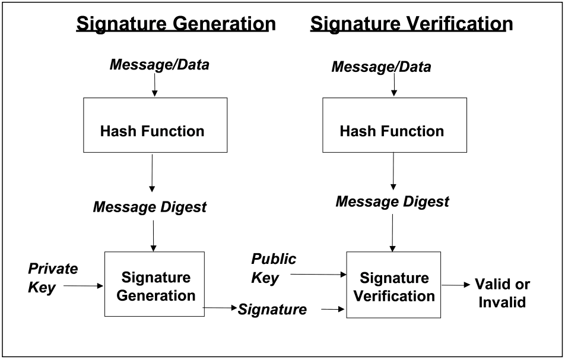
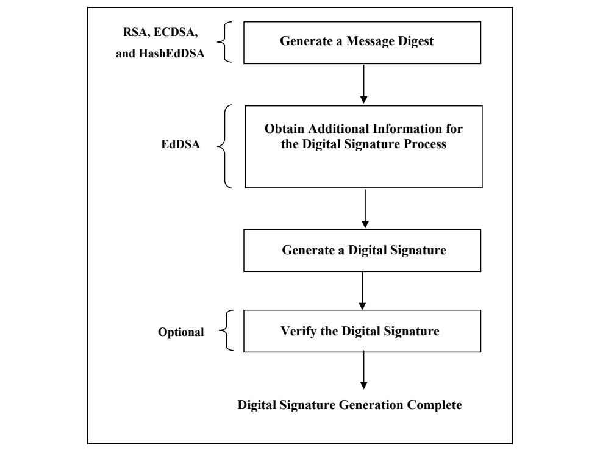

NIST FIPS 186-5 日本語訳
英語タイトル : Digital Signature Standard (DSS)日本語タイトル : デジタル署名標準（DSS）
公開日 : 2023-02-03
原文URL : https://csrc.nist.gov/pubs/fips/186-5/final
翻訳編集 : 自動生成（有志による非公式の日本語訳）, 原文取得日 : 2026-10-25, 訳文 : 1382 / 1382 ブロック
[要約] FIPS 186-5 は、データの不正な改変の検出と署名者の身元の認証に使用するデジタル署名の生成と検証のためのアルゴリズムを規定する標準です。手書きの署名ではなくデジタル署名を必要とするアプリケーション向けに、初期設定、署名生成、署名検証の流れと、秘密鍵と公開鍵の鍵ペアの要件を扱います。署名者が後から署名を容易に否認できないため、受信者は署名が実際に署名者によって生成されたことを第三者に示す証拠として用いることができます。
FIPS 186-5
FIPS 186-5
FEDERAL INFORMATION PROCESSING STANDARDS PUBLICATION
連邦情報処理標準規格出版物
(Supersedes FIPS 186-4)
（FIPS 186-4 を置き換える）
Digital Signature Standard (DSS)
デジタル署名標準（DSS）
CATEGORY: COMPUTER SECURITY
カテゴリ：コンピュータセキュリティ
SUBCATEGORY: CRYPTOGRAPHY
サブカテゴリ：暗号
Information Technology Laboratory National Institute of Standards and Technology Gaithersburg, MD 20899-8900
情報技術ラボラトリ 米国国立標準技術研究所 Gaithersburg, MD 20899-8900
This publication is available free of charge from: https://doi.org/10.6028/NIST.FIPS.186-5
本出版物は次から無償で入手できる：https://doi.org/10.6028/NIST.FIPS.186-5
Published: February 3, 2023
発行：2023年2月3日
U.S. Department of Commerce Gina M. Raimondo, Secretary
米国商務省 Gina M. Raimondo 長官
National Institute of Standards and Technology Laurie E. Locascio, NIST Director and Under Secretary of Commerce for Standards and Technology
米国国立標準技術研究所 Laurie E. Locascio NIST 所長兼商務次官（標準・技術担当）
FOREWORD
まえがき
The Federal Information Processing Standards Publication (FIPS) series of the National Institute of Standards and Technology (NIST) is the official series of publications relating to standards and guidelines developed under 15 U.S.C. 278g-3, and issued by the Secretary of Commerce under 40 U.S.C. 11331.
米国国立標準技術研究所（NIST）の連邦情報処理標準規格出版物（FIPS）シリーズは、15 U.S.C. 278g-3 に基づいて策定され、40 U.S.C. 11331 に基づいて商務長官が発行する標準およびガイドラインに関する公式の出版物シリーズである。
Comments concerning FIPS publications are welcomed and should be addressed to the Director, Information Technology Laboratory, National Institute of Standards and Technology, 100 Bureau Drive, Stop 8900, Gaithersburg, MD 20899-8900.
FIPS 出版物に関するコメントを歓迎する。コメントは Director, Information Technology Laboratory, National Institute of Standards and Technology, 100 Bureau Drive, Stop 8900, Gaithersburg, MD 20899-8900 宛てに送付することが望ましい。
Charles H. Romine, Director Information Technology Laboratory
Charles H. Romine 情報技術ラボラトリ所長
Abstract
概要
This standard specifies a suite of algorithms that can be used to generate a digital signature. Digital signatures are used to detect unauthorized modifications to data and to authenticate the identity of the signatory. In addition, the recipient of signed data can use a digital signature as evidence in demonstrating to a third party that the signature was, in fact, generated by the claimed signatory. This is known as non-repudiation since the signatory cannot easily repudiate the signature at a later time.
本標準は、デジタル署名の生成に使用できる一連のアルゴリズムを規定する。デジタル署名は、データの不正な改変を検出し、署名者の身元を認証するために使用される。さらに、署名されたデータの受信者は、その署名が実際に署名者と称する者によって生成されたことを第三者に示す証拠として、デジタル署名を使用できる。署名者は後になって署名を容易に否認できないため、これは否認防止と呼ばれる。
Keywords: computer security; cryptography; digital signatures; Federal Information Processing Standards; public key cryptography.
キーワード：コンピュータセキュリティ、暗号、デジタル署名、連邦情報処理標準規格（FIPS）、公開鍵暗号。
Federal Information Processing Standards Publication 186-5
連邦情報処理標準規格出版物 186-5
Published: February 3, 2023
発行：2023年2月3日
Effective: February 3, 2023 (see the Implementation Schedule)
発効：2023年2月3日（実施スケジュールを参照）
Announcing the
以下を公表する
DIGITAL SIGNATURE STANDARD (DSS)
デジタル署名標準（DSS）
Federal Information Processing Standards Publications (FIPS) are developed by the National Institute of Standards and Technology (NIST) under 15 U.S.C. 278g-3, and issued by the Secretary of Commerce under 40 U.S.C. 11331.
連邦情報処理標準規格出版物（FIPS）は、15 U.S.C. 278g-3 に基づいて米国国立標準技術研究所（NIST）が策定し、40 U.S.C. 11331 に基づいて商務長官が発行する。
1.Name of Standard: Digital Signature Standard (DSS) (FIPS 186-5).
1.標準の名称：Digital Signature Standard (DSS) (FIPS 186-5)。
2.Category of Standard: Computer Security. Subcategory. Cryptography.
2.標準のカテゴリ：コンピュータセキュリティ。サブカテゴリ：暗号。
3.Explanation: This standard specifies algorithms for applications requiring a digital signature rather than a written signature. A digital signature is represented in a computer as a string of bits and computed using a set of rules and parameters that allow the identity of the signatory and the integrity of the data to be verified. Digital signatures may be generated on both stored and transmitted data.
3.説明：本標準は、手書きの署名ではなくデジタル署名を必要とするアプリケーション向けのアルゴリズムを規定する。デジタル署名は、コンピュータ内ではビット列として表現され、署名者の身元とデータの完全性を検証できるようにする一連の規則とパラメータを用いて計算される。デジタル署名は、保存されたデータと送信されるデータのいずれに対しても生成できる。
Signature generation uses a private key to generate a digital signature; signature verification uses a public key that corresponds to but is not the same as the private key. Each signatory possesses a private and public key pair. Public keys may be known by the public; private keys must be kept secret. Anyone can verify the signature by employing the signatory’s public key. Only the user that possesses the private key can perform signature generation.
署名生成では秘密鍵を用いてデジタル署名を生成し、署名検証では、秘密鍵に対応するが秘密鍵とは異なる公開鍵を用いる。各署名者は秘密鍵と公開鍵の鍵ペアを保有する。公開鍵は公衆に知られてもよいが、秘密鍵は秘密に保たなければならない。署名者の公開鍵を用いれば誰でも署名を検証できる。署名生成を実行できるのは、秘密鍵を保有する利用者だけである。
A hash function is often used in the signature generation process to obtain a condensed version of the data to be signed; the condensed version of the data is often called a message digest. The message digest is input to the digital signature algorithm to generate the digital signature. The hash functions to be used are specified in FIPS 180, Secure Hash Standard (SHS), and FIPS 202, SHA-3: Permutation-Based Hash and Extendable-Output Functions. FIPS-approved digital signature algorithms shall be used with appropriate approved functions (e.g., hash functions such as those specified in FIPS 180 or FIPS 202).
署名生成の過程では、署名対象のデータを縮約したものを得るためにハッシュ関数を用いることが多い。データを縮約したものは、しばしばメッセージダイジェストと呼ばれる。メッセージダイジェストはデジタル署名アルゴリズムに入力され、デジタル署名が生成される。使用するハッシュ関数は、FIPS 180, Secure Hash Standard (SHS) および FIPS 202, SHA-3: Permutation-Based Hash and Extendable-Output Functions に規定されている。FIPS で承認されたデジタル署名アルゴリズムは、適切な承認された関数（例：FIPS 180 や FIPS 202 に規定されたハッシュ関数）とともに使用しなければならない。
The digital signature is provided to the intended verifier along with the signed data. The verifying entity verifies the signature by using the claimed signatory’s public key and the same hash function that was used to generate the signature. Similar procedures may be used to generate and verify signatures for both stored and transmitted data.
デジタル署名は、署名されたデータとともに想定された検証者に提供される。検証を行うエンティティは、署名者と称する者の公開鍵と、署名の生成に用いたものと同じハッシュ関数を用いて署名を検証する。保存されたデータと送信されるデータのいずれについても、同様の手順で署名を生成し検証できる。
This standard supersedes FIPS 186-4. In the future, additional digital signature schemes may be specified and approved in FIPS publications or in NIST Special Publications.
本標準は FIPS 186-4 を置き換える。将来、追加のデジタル署名方式が FIPS 出版物または NIST Special Publication において規定され、承認される可能性がある。
4.Approving Authority: Secretary of Commerce.
4.承認機関：商務長官。
5.Maintenance Agency: Department of Commerce, National Institute of Standards and Technology, Information Technology Laboratory, Computer Security Division.
5.維持管理機関：商務省 米国国立標準技術研究所 情報技術ラボラトリ コンピュータセキュリティ部門。
6.Applicability: This standard is applicable to all federal departments and agencies for the protection of sensitive unclassified information that is not subject to section 2315 of Title 10, United States Code, or section 3502 (2) of Title 44, United States Code. This standard shall be used in designing and implementing public key-based signature systems that federal departments and agencies operate or that are operated for them under contract. The adoption and use of this standard are available to private and commercial organizations.
6.適用範囲：本標準は、合衆国法典第10編第2315条または合衆国法典第44編第3502条(2)の対象とならない、機密扱いではないが取扱いに注意を要する情報を保護するために、すべての連邦省庁に適用される。本標準は、連邦省庁が運用するか、または契約に基づき連邦省庁のために運用される公開鍵ベースの署名システムを設計・実装する際に使用しなければならない。民間組織および商業組織も本標準を採用し使用できる。
7.Applications: A digital signature algorithm allows an entity to authenticate the integrity of signed data and the identity of the signatory. The recipient of a signed message can use a digital signature as evidence in demonstrating to a third party that the signature was, in fact, generated by the claimed signatory. This is known as non-repudiation since the signatory cannot easily repudiate the signature at a later time. A digital signature algorithm is intended for use in electronic mail, electronic funds transfer, electronic data interchange, software distribution, data storage, and other applications that require data integrity assurance and data origin authentication.
7.用途：デジタル署名アルゴリズムにより、エンティティは署名されたデータの完全性と署名者の身元を認証できる。署名されたメッセージの受信者は、その署名が実際に署名者と称する者によって生成されたことを第三者に示す証拠として、デジタル署名を使用できる。署名者は後になって署名を容易に否認できないため、これは否認防止と呼ばれる。デジタル署名アルゴリズムは、電子メール、電子資金移動、電子データ交換、ソフトウェア配布、データ保存、その他データの完全性の保証とデータ発信元の認証を必要とするアプリケーションでの使用を意図している。
8.Implementations: A digital signature algorithm may be implemented in software, firmware, hardware, or any combination thereof. NIST has developed a validation program to test implementations for conformance to the algorithms in this standard. Information about the validation program is available at https://csrc.nist.gov/projects/cmvp. Examples for each digital signature algorithm are available at https://csrc.nist.gov/projects/cryptographic-standards-and-guidelines/example-values.
8.実装：デジタル署名アルゴリズムは、ソフトウェア、ファームウェア、ハードウェア、またはそれらの任意の組合せで実装してよい。NIST は、本標準のアルゴリズムへの適合性について実装を試験するための検証プログラムを開発している。検証プログラムに関する情報は https://csrc.nist.gov/projects/cmvp で入手できる。各デジタル署名アルゴリズムの例は https://csrc.nist.gov/projects/cryptographic-standards-and-guidelines/example-values で入手できる。
Agencies are advised that digital signature key pairs shall not be used for other purposes.
デジタル署名の鍵ペアを他の目的に使用してはならない旨を各機関に通知する。
9.Other Approved Security Functions: Digital signature implementations that comply with this standard shall employ cryptographic algorithms, cryptographic key generation algorithms, and key establishment techniques that have been approved for protecting Federal Government-sensitive information. Approved cryptographic algorithms and techniques include those that are either:
9.その他の承認されたセキュリティ機能：本標準に準拠するデジタル署名の実装は、連邦政府の取扱いに注意を要する情報の保護について承認された暗号アルゴリズム、暗号鍵生成アルゴリズム、および鍵確立手法を用いなければならない。承認された暗号アルゴリズムおよび手法には、次のいずれかに該当するものが含まれる。
a. Specified in a Federal Information Processing Standards Publication (FIPS), b. Adopted in a FIPS or NIST recommendation, or c. Specified in the list of approved security functions for FIPS 140-3.
a. 連邦情報処理標準規格出版物（FIPS）で規定されている、b. FIPS または NIST の推奨文書で採用されている、または c. FIPS 140-3 の承認されたセキュリティ機能のリストで規定されている。
10.Export Control: Certain cryptographic devices and technical data regarding them are subject to federal export controls. Exports of cryptographic modules implementing this standard and technical data regarding them must comply with these federal regulations and be licensed by the Bureau of Industry and Security of the U.S. Department of Commerce. Information about export regulations is available at: https://www.bis.doc.gov.
10.輸出管理：特定の暗号デバイスおよびそれに関する技術データは、連邦の輸出管理の対象となる。本標準を実装する暗号モジュールおよびそれに関する技術データの輸出は、これらの連邦規則に従わなければならず、米国商務省産業安全保障局（Bureau of Industry and Security）の許可を受けなければならない。輸出規則に関する情報は https://www.bis.doc.gov で入手できる。
11.Patents: The algorithms in this standard may be covered by U.S. or foreign patents.
11.特許：本標準のアルゴリズムは、米国または外国の特許の対象となっている可能性がある。
12.Implementation Schedule: This standard becomes effective immediately upon final publication. To facilitate a transition to FIPS 186-5, FIPS 186-4 remains in effect for a period of one year following the publication of this standard, after which FIPS 186-4 will be withdrawn. During this period, agencies may elect to use cryptographic modules and practices that conform to this standard, or may elect to continue to use FIPS 186-4. The implementation schedule for cryptographic modules undergoing validation through the Cryptographic Module Validation Program will be posted on NIST’s webpage at https://csrc.nist.gov/projects/cmvp under Notices.
12.実施スケジュール：本標準は最終版の発行と同時に発効する。FIPS 186-5 への移行を容易にするため、FIPS 186-4 は本標準の発行後1年間効力を維持し、その後廃止される。この期間中、各機関は本標準に準拠する暗号モジュールおよび運用を使用することを選択してもよく、FIPS 186-4 を引き続き使用することを選択してもよい。暗号モジュール検証プログラム（Cryptographic Module Validation Program）による検証を受ける暗号モジュールの実施スケジュールは、NIST のウェブページ https://csrc.nist.gov/projects/cmvp の Notices に掲載される。
13.Specifications: Federal Information Processing Standard (FIPS) 186-5 Digital Signature Standard (affixed).
13.仕様：連邦情報処理標準規格（FIPS）186-5 Digital Signature Standard（添付）。
14.Qualifications: The security of a digital signature system is dependent on maintaining the secrecy of the signatory’s private keys. Signatories shall, therefore, guard against the disclosure of their private keys. While it is the intent of this standard to specify general security requirements for generating digital signatures, conformance to this standard does not ensure that a particular implementation is secure. It is the responsibility of an implementer to ensure that any module that implements a digital signature capability is designed and built in a secure manner.
14.留意事項：デジタル署名システムのセキュリティは、署名者の秘密鍵の秘密性を維持することに依存する。したがって、署名者は自らの秘密鍵の漏えいを防がなければならない。本標準はデジタル署名の生成に関する一般的なセキュリティ要件を規定することを意図しているが、本標準への適合は特定の実装が安全であることを保証しない。デジタル署名機能を実装するモジュールが安全な方法で設計・構築されていることを確保するのは、実装者の責任である。
Similarly, the use of a product containing an implementation that conforms to this standard does not guarantee the security of the overall system in which the product is used. The responsible authority in each agency or department shall ensure that an overall implementation provides an acceptable level of security.
同様に、本標準に適合する実装を含む製品を使用しても、その製品が使用されるシステム全体のセキュリティは保証されない。各省庁の責任当局は、実装全体が許容可能なレベルのセキュリティを提供することを確保しなければならない。
Since a standard of this nature must be flexible enough to adapt to advancements and innovations in science and technology, this standard will be reviewed every five years in order to assess its adequacy.
この種の標準は科学技術の進歩と革新に適応できる柔軟性を備えていなければならないため、本標準はその妥当性を評価するために5年ごとに見直される。
15.Waiver Procedure: The Federal Information Security Management Act (FISMA) does not allow for waivers to Federal Information Processing Standards (FIPS) that are made mandatory by the Secretary of Commerce.
15.適用免除手続き：連邦情報セキュリティマネジメント法（FISMA）は、商務長官が義務化した連邦情報処理標準規格（FIPS）について適用免除を認めていない。
16.Where to Obtain Copies of the Standard: This publication is available by accessing https://csrc.nist.gov/publications. Other computer security publications are available at the same website.
16.本標準の入手先：本出版物は https://csrc.nist.gov/publications から入手できる。その他のコンピュータセキュリティ関連の出版物も同じウェブサイトで入手できる。
17.How to Cite this Publication: NIST has assigned NIST FIPS 186-5 as the publication identifier for this FIPS, per the NIST Technical Series Publication Identifier Syntax. NIST recommends that it be cited as follows:
17.本出版物の引用方法：NIST は、NIST Technical Series Publication Identifier Syntax に従い、本 FIPS の出版物識別子として NIST FIPS 186-5 を割り当てている。NIST は次のように引用することを推奨する。
National Institute of Standards and Technology (2023) Digital Signature Standard (DSS). (Department of Commerce, Washington, D.C.), Federal Information Processing Standards Publication (FIPS) NIST FIPS 186-5. https://doi.org/10.6028/NIST.FIPS.186-5
National Institute of Standards and Technology (2023) Digital Signature Standard (DSS). (Department of Commerce, Washington, D.C.), Federal Information Processing Standards Publication (FIPS) NIST FIPS 186-5. https://doi.org/10.6028/NIST.FIPS.186-5
18.Inquiries and comments: Inquiries and comments about this FIPS may be submitted to fips186-comments@nist.gov.
18.問合せおよびコメント：本 FIPS に関する問合せおよびコメントは fips186-comments@nist.gov に送付できる。
Table of Contents
目次
Federal Information Processing Standards Publication 186-5
連邦情報処理標準規格出版物 186-5
Specifications for the DIGITAL SIGNATURE STANDARD (DSS)
DIGITAL SIGNATURE STANDARD (DSS) の仕様
B.3.1 Miller-Rabin Probabilistic Primality Test
B.3.1 Miller-Rabin 確率的素数判定
B.3.3 (General) Lucas Probabilistic Primality Test
B.3.3 （一般）Lucas 確率的素数判定
List of Figures
図の一覧
1. Introduction
1. はじめに
This standard defines methods for digital signature generation that can be used for the protection of binary data (commonly called a message) and for the verification and validation of those digital signatures. Three techniques are approved.
本標準は、バイナリデータ（一般にメッセージと呼ばれる）の保護に使用できるデジタル署名の生成方法と、そのデジタル署名の検証および妥当性確認の方法を定める。3つの手法が承認されている。
(1)The RSA digital signature algorithm is specified in the Internet Engineering Task Force Request for Comments (IETF RFC) 8017 [1] and was previously specified in Public Key Cryptography Standard (PKCS) #1 [2]. FIPS 186-5 approves the use of implementations of either or both of these standards and specifies key pair generation, as well as additional requirements.
(1)RSA デジタル署名アルゴリズムは、Internet Engineering Task Force Request for Comments（IETF RFC）8017 [1] で規定されており、以前は Public Key Cryptography Standard（PKCS）#1 [2] で規定されていた。FIPS 186-5 は、これらの標準のいずれか一方または両方の実装の使用を承認し、鍵ペアの生成および追加の要件を規定する。
(2)The Elliptic Curve Digital Signature Algorithm (ECDSA) is specified in this standard. ECDSA was originally specified in American National Standards (ANS) X9.62 [3] (withdrawn). A variant of ECDSA with a deterministic signature generation procedure known as deterministic ECDSA is also approved and specified in IETF RFC 6979 [4]. Recommended elliptic curves for Federal Government use of ECDSA (including deterministic ECDSA) are provided in NIST Special Publication (SP) 800-186 [5].
(2)楕円曲線デジタル署名アルゴリズム（ECDSA）は本標準で規定する。ECDSA は当初 American National Standards（ANS）X9.62 [3]（廃止）で規定されていた。決定的 ECDSA と呼ばれる、決定的な署名生成手順をもつ ECDSA の変種も承認されており、IETF RFC 6979 [4] で規定されている。連邦政府が ECDSA（決定的 ECDSA を含む）を使用する際の推奨楕円曲線は、NIST Special Publication（SP）800-186 [5] に示されている。
(3)The Edwards Curve Digital Signature Algorithm (EdDSA) is specified in IETF RFC 8032 [6]. FIPS 186-5 approves the use of EdDSA and specifies additional requirements. Recommended elliptic curves for Federal Government use of EdDSA are provided in SP 800-186 [5]. Also included is HashEdDSA, a version of EdDSA where the EdDSA signature is generated on the hash of the message rather than the message itself.
(3)エドワーズ曲線デジタル署名アルゴリズム（EdDSA）は IETF RFC 8032 [6] で規定されている。FIPS 186-5 は EdDSA の使用を承認し、追加の要件を規定する。連邦政府が EdDSA を使用する際の推奨楕円曲線は SP 800-186 [5] に示されている。また、メッセージそのものではなくメッセージのハッシュ値に対して EdDSA 署名を生成する EdDSA の一形態である HashEdDSA も含まれる。
The Digital Signature Algorithm (DSA) is no longer specified in this standard and may only be used to verify previously generated digital signatures. Complete specifications may be found in Federal Information Processing Standard (FIPS) 186-4 [7].
デジタル署名アルゴリズム（DSA）は本標準ではもはや規定されておらず、過去に生成されたデジタル署名の検証にのみ使用してよい。完全な仕様は連邦情報処理標準規格（FIPS）186-4 [7] に記載されている。
This standard includes requirements for obtaining the assurances necessary for valid digital signatures. Methods for obtaining these assurances are provided in SP 800-89, Recommendation for Obtaining Assurances for Digital Signature Applications [8]. Information about the key lengths used for generating and verifying digital signatures and the time frames during which they are assumed to be secure are provided in SP 800-131A [9]. Note that the algorithms in this standard are not expected to provide resistance to attacks from a large-scale quantum computer. Digital signature algorithms that will provide security from quantum computers will be specified in future NIST publications.
本標準には、有効なデジタル署名に必要な保証を得るための要件が含まれる。これらの保証を得る方法は、SP 800-89, Recommendation for Obtaining Assurances for Digital Signature Applications [8] に示されている。デジタル署名の生成および検証に用いる鍵長と、それらが安全であるとみなされる期間に関する情報は、SP 800-131A [9] に示されている。なお、本標準のアルゴリズムは、大規模な量子コンピュータによる攻撃への耐性を提供することは想定されていない。量子コンピュータに対するセキュリティを提供するデジタル署名アルゴリズムは、今後の NIST 出版物で規定される予定である。
2. Glossary of Terms, Acronyms, and Mathematical Symbols
2. 用語、略語、および数学記号
2.1 Terms and Definitions
2.1 用語と定義
Approved — FIPS-approved and/or NIST-recommended. An algorithm or technique that is either 1) specified in a FIPS or NIST Recommendation, 2) adopted in a FIPS or NIST Recommendation, or 3) specified in a list of NIST-approved security functions.
Approved — FIPS で承認された、および／または NIST が推奨する。1) FIPS または NIST の推奨文書で規定されている、2) FIPS または NIST の推奨文書で採用されている、または 3) NIST が承認したセキュリティ機能のリストで規定されている、のいずれかに該当するアルゴリズムまたは手法。
Assurance of domain parameter validity — Confidence that the domain parameters are arithmetically correct.
Assurance of domain parameter validity — ドメインパラメータが算術的に正しいことについての確信。
Assurance of possession — Confidence that an entity possesses a private key and any associated keying material.
Assurance of possession — エンティティが秘密鍵および関連する鍵材料を保有していることについての確信。
Assurance of public key validity — Confidence that the public key is arithmetically correct.
Assurance of public key validity — 公開鍵が算術的に正しいことについての確信。
Bias — With respect to the uniform distribution on \([0, n-1]\), the bias is defined to be the maximum value of \(\left\{ \mathit{probability}(S) - \left(\frac{|S|}{n}\right) \right\}\) taken over all subsets \(S\) of \([0, n-1]\). This measures the maximum advantage that an adversary has in predicting any event.
Bias — \([0, n-1]\) 上の一様分布に関して、バイアスは \([0, n-1]\) のすべての部分集合 \(S\) にわたって \(\left\{ \mathit{probability}(S) - \left(\frac{|S|}{n}\right) \right\}\) がとる最大値として定義される。これは、敵対者が任意の事象を予測する際に得る最大の優位性を測るものである。
Bit string — An ordered sequence of zeros and ones. The leftmost bit is the most significant bit of the string. The rightmost bit is the least significant bit of the string.
Bit string — 0と1の順序付き列。最も左のビットがそのビット列の最上位ビットであり、最も右のビットがそのビット列の最下位ビットである。
Certificate — A set of data that uniquely identifies a public key (which has a corresponding private key) and an owner that is authorized to use the key pair. The certificate contains the owner’s public key and possibly other information and is digitally signed by a Certification Authority (i.e., a trusted party), thereby binding the public key to the owner.
Certificate — 公開鍵（対応する秘密鍵をもつ）と、その鍵ペアの使用を認可された所有者とを一意に識別するデータの集合。証明書は所有者の公開鍵と、場合によってはその他の情報を含み、認証局（すなわち信頼できる当事者）によってデジタル署名されることで、公開鍵を所有者に結び付ける。
Certification Authority (CA) — The entity in a Public Key Infrastructure (PKI) that is responsible for issuing certificates and exacting compliance with a PKI policy.
Certification Authority (CA) — 公開鍵基盤（PKI）において、証明書を発行し、PKIポリシーへの準拠を求める責任を負うエンティティ。
Claimed signatory From the verifier’s perspective, the claimed signatory is the entity that purportedly generated a digital signature.
Claimed signatory 検証者の視点から見て、デジタル署名を生成したとされるエンティティ。
Destroy — An action applied to a key or a piece of secret data. After a key or a piece of secret data is destroyed, no information about its value can be recovered.
Destroy — 鍵または秘密データの一部に適用される動作。鍵または秘密データの一部を破棄した後は、その値に関するいかなる情報も復元できない。
Digital signature — The result of a cryptographic transformation of data that, when properly implemented, provides a mechanism for verifying origin authentication, data integrity, and signatory non-repudiation.
Digital signature — データに対する暗号学的変換の結果であり、適切に実装された場合に、起点認証、データ完全性、および署名者の否認防止を検証する仕組みを提供する。
Domain parameter seed — A string of bits that is used as input for a domain parameter generation or validation process.
Domain parameter seed — ドメインパラメータの生成または検証プロセスへの入力として用いるビット列。
Domain parameters — Parameters used with cryptographic algorithms that are usually common to a domain of users. An ECDSA or EdDSA cryptographic key pair is associated with a specific set of domain parameters.
Domain parameters — 暗号アルゴリズムとともに用いるパラメータであり、通常はある利用者ドメインに共通である。ECDSAまたはEdDSAの暗号鍵ペアは、特定のドメインパラメータの集合に関連付けられる。
Entity — An individual (person), organization, device, or process. Used interchangeably with “party.”
Entity — 個人（人）、組織、デバイス、またはプロセス。「party」と同じ意味で用いる。
Equivalent process — Two processes are equivalent if the same output is produced when the same values are input to each process (either as input parameters, as values made available during the process, or both).
Equivalent process — 2つのプロセスは、同じ値を各プロセスに入力したとき（入力パラメータとして、プロセス中に利用可能となる値として、またはその両方として）同じ出力が生成される場合に等価である。
Hash function — A function on bit strings in which the length of the output is fixed. Approved hash functions (such as those specified in FIPS 180 [10] and FIPS 202 [11]) are designed to satisfy the following properties:
Hash function — 出力の長さが固定されている、ビット列上の関数。承認されたハッシュ関数（FIPS 180 [10] および FIPS 202 [11] で規定されるものなど）は、次の性質を満たすように設計されている。
1.(One-way) It is computationally infeasible to find any input that maps to any new pre-specified output
1.（一方向性）任意の新たな事前指定された出力に写像される入力を見つけることが、計算量的に実行不可能である。
2.(Collision-resistant) It is computationally infeasible to find any two distinct inputs that map to the same output.
2.（衝突耐性）同じ出力に写像される相異なる2つの入力を見つけることが、計算量的に実行不可能である。
Hash value — See “message digest.”
Hash value — 「message digest」を参照。
Intended signatory An entity that intends to generate digital signatures in the future.
Intended signatory 将来デジタル署名を生成する意図をもつエンティティ。
Key — A parameter used in conjunction with a cryptographic algorithm that determines its operation. Examples applicable to this standard include:
Key — 暗号アルゴリズムとともに用いられ、その動作を決定するパラメータ。本標準に該当する例には次のものがある。
1.The computation of a digital signature from data, and
1.データからのデジタル署名の計算、および
2.The verification of a digital signature.
2.デジタル署名の検証。
Key pair — A public key and its corresponding private key.
Key pair — 公開鍵と、それに対応する秘密鍵。
Message — The data that is signed. Also known as “signed data” during the signature verification and validation process.
Message — 署名されるデータ。署名の検証および妥当性確認のプロセスでは「signed data」とも呼ばれる。
Message digest — The result of applying a hash function to a message. Also known as a “hash value.”
Message digest — メッセージにハッシュ関数を適用した結果。「hash value」とも呼ばれる。
Non-repudiation — A service that is used to provide assurance of the integrity and origin of data in such a way that the integrity and origin can be verified and validated by a third party as having originated from a specific entity in possession of the private key (i.e., the signatory).
Non-repudiation — データの完全性と起点について、秘密鍵を保有する特定のエンティティ（すなわち署名者）から発したものであることを第三者が検証および妥当性確認できる形で保証を提供するために用いるサービス。
Owner — A key pair owner is the entity authorized to use the private key of a key pair.
Owner — 鍵ペアの所有者とは、その鍵ペアの秘密鍵の使用を認可されたエンティティである。
Party — An individual (person), organization, device, or process. Used interchangeably with “entity.”
Party — 個人（人）、組織、デバイス、またはプロセス。「entity」と同じ意味で用いる。
Per-message secret number — A secret random number that is generated prior to the generation of each digital signature.
Per-message secret number — 各デジタル署名の生成に先立って生成される秘密の乱数。
Public Key Infrastructure (PKI) — A framework that is established to issue, maintain, and revoke public key certificates.
Public Key Infrastructure (PKI) — 公開鍵証明書を発行、維持、失効するために確立される枠組み。
Prime number generation seed — A string of random bits that is used to begin a search for a prime number with the required characteristics.
Prime number generation seed — 必要な特性をもつ素数の探索を開始するために用いるランダムなビット列。
Private key — A cryptographic key that is used with an asymmetric (public key) cryptographic algorithm. The private key is uniquely associated with the owner and is not made public. The private key is used to compute a digital signature that may be verified using the corresponding public key.
Private key — 非対称（公開鍵）暗号アルゴリズムとともに用いる暗号鍵。秘密鍵は所有者に一意に関連付けられ、公開されない。秘密鍵はデジタル署名の計算に用いられ、そのデジタル署名は対応する公開鍵を用いて検証できる。
Probable prime — An integer that is believed to be prime based on a probabilistic primality test. There should be no more than a negligible probability that the so-called probable prime is actually composite.
Probable prime — 確率的素数判定に基づいて素数であると考えられる整数。いわゆる確率的素数が実際には合成数である確率は、無視できる程度を超えないことが望ましい。
Provable prime — An integer that is either constructed to be prime or is demonstrated to be prime using a primality-proving algorithm.
Provable prime — 素数となるように構成された整数、または素数証明アルゴリズムを用いて素数であることが示された整数。
Pseudorandom — A process or data produced by a process is said to be pseudorandom when the outcome is deterministic yet also effectively random as long as the internal action of the process is hidden from observation. For cryptographic purposes, “effectively random” means “computationally indistinguishable from random within the limits of the intended security strength.”
Pseudorandom — プロセス、またはプロセスによって生成されたデータは、その結果が決定的でありながら、プロセスの内部動作が観測から隠されている限り実質的にランダムである場合に、擬似ランダムであるという。暗号の目的においては、「実質的にランダム」とは「意図したセキュリティ強度の範囲内で、ランダムなものと計算量的に区別できない」ことを意味する。
Public key — A cryptographic key that is used with an asymmetric (public key) cryptographic algorithm and is associated with a private key. The public key is associated with an owner and may be made public. In the case of digital signatures, the public key is used to verify a digital signature that was generated using the corresponding private key.
Public key — 非対称（公開鍵）暗号アルゴリズムとともに用いられ、秘密鍵に関連付けられる暗号鍵。公開鍵は所有者に関連付けられ、公開してよい。デジタル署名の場合、公開鍵は、対応する秘密鍵を用いて生成されたデジタル署名の検証に用いる。
Security strength — A number associated with the amount of work (i.e., the number of operations) that is required to break a cryptographic algorithm or system.
Security strength — 暗号アルゴリズムまたはシステムを破るのに必要な作業量（すなわち演算回数）に関連付けられた数値。
Shall — Used to indicate a requirement of this standard.
Shall — 本標準の要件を示すために用いる。
Should — Used to indicate a strong recommendation but not a requirement of this standard. Ignoring the recommendation could result in undesirable results.
Should — 本標準の要件ではないが強い推奨を示すために用いる。推奨を無視すると、望ましくない結果を招くおそれがある。
Signatory — The entity that generates a digital signature on data using a private key.
Signatory — 秘密鍵を用いてデータ上のデジタル署名を生成するエンティティ。
Signature generation The process of using a digital signature algorithm and a private key to generate a digital signature on data.
Signature generation デジタル署名アルゴリズムと秘密鍵を用いて、データ上のデジタル署名を生成するプロセス。
Signature validation — The (mathematical) verification of the digital signature and obtaining the appropriate assurances (e.g., public key validity, private key possession, etc.).
Signature validation — デジタル署名の（数学的な）検証と、適切な保証（例えば、公開鍵の妥当性、秘密鍵の保有など）の取得。
Signature verification The process of using a digital signature algorithm and a public key to verify a digital signature on data.
Signature verification デジタル署名アルゴリズムと公開鍵を用いて、データ上のデジタル署名を検証するプロセス。
Signed data — The data or message upon which a digital signature has been computed. Also see “message.”
Signed data — デジタル署名が計算された対象のデータまたはメッセージ。「message」も参照。
Subscriber — An entity that has applied for and received a certificate from a Certificate Authority.
Subscriber — 認証局に証明書を申請し、それを受け取ったエンティティ。
Trusted third party (TTP) — An entity other than the key pair owner and verifier that is trusted by the owner or the verifier or both. Sometimes shortened to “trusted party.”
Trusted third party (TTP) — 鍵ペアの所有者および検証者以外のエンティティであり、所有者、検証者、またはその両方から信頼されているもの。「trusted party」と略されることもある。
Verifier — The entity that verifies the authenticity of a digital signature using the public key.
Verifier — 公開鍵を用いてデジタル署名の真正性を検証するエンティティ。
2.2 Acronyms
2.2 略語
ANS — American National Standard
ANS — American National Standard
CA — Certification Authority
CA — Certification Authority
DRBG — Deterministic Random Bit Generator1
DRBG — Deterministic Random Bit Generator1
DSA — Digital Signature Algorithm2
DSA — Digital Signature Algorithm2
ECDSA — Elliptic Curve Digital Signature Algorithm
ECDSA — Elliptic Curve Digital Signature Algorithm
EdDSA — Edwards Curve Digital Signature Algorithm3
EdDSA — Edwards Curve Digital Signature Algorithm3
FIPS — Federal Information Processing Standard
FIPS — Federal Information Processing Standard
FFC — Finite Field Cryptography
FFC — Finite Field Cryptography
NIST — National Institute of Standards and Technology
NIST — National Institute of Standards and Technology
PKCS — Public Key Cryptography Standard
PKCS — Public Key Cryptography Standard
PKI — Public Key Infrastructure
PKI — Public Key Infrastructure
RSA — Rivest, Shamir, Adleman4
RSA — Rivest, Shamir, Adleman4
SHA — Secure Hash Algorithm
SHA — Secure Hash Algorithm
SP — NIST Special Publication
SP — NIST Special Publication
TTP — Trusted Third Party
TTP — Trusted Third Party
XOF — Extendable-Output Function
XOF — Extendable-Output Function
2.3 Mathematical Symbols
2.3 数学記号
\(a \bmod n\) — The unique remainder \(r\), \(0 \le r \le (n - 1)\), when integer \(a\) is divided by the positive integer \(n\). For example, \(23 \bmod 7 = 2\).
\(a \bmod n\) — 整数 \(a\) を正の整数 \(n\) で割ったときの一意な剰余 \(r\)（\(0 \le r \le (n - 1)\)）。例えば、\(23 \bmod 7 = 2\) である。
\(b \equiv a \bmod n\) — There exists an integer \(k\) such that \(b - a = kn\); equivalently, \(a \bmod n = b \bmod n\).
\(b \equiv a \bmod n\) — \(b - a = kn\) となる整数 \(k\) が存在すること。同値な表現として、\(a \bmod n = b \bmod n\) である。
\(d\) — 1. For RSA, the private signature exponent of a private key.
\(d\) — 1. RSAの場合、秘密鍵の秘密署名指数。
2.For ECDSA and EdDSA, the private key.
2.ECDSAおよびEdDSAの場合、秘密鍵。
\(e\) — The public verification exponent of an RSA public key.
\(e\) — RSA公開鍵の公開検証指数。
\(G\) — The base point of an elliptic curve.
\(G\) — 楕円曲線のベースポイント。
\(\mathrm{GCD}(a, b)\) — Greatest common divisor of the integers \(a\) and \(b\).
\(\mathrm{GCD}(a, b)\) — 整数 \(a\) と \(b\) の最大公約数。
\(\mathrm{Hash}(M)\) — The result of a hash computation (message digest or hash value) on message \(M\) using an approved hash function.
\(\mathrm{Hash}(M)\) — 承認されたハッシュ関数を用いてメッセージ \(M\) に対して行ったハッシュ計算の結果（メッセージダイジェストまたはハッシュ値）。
\(k\) — A per-message secret number.
\(k\) — メッセージごとの秘密数。
\(\mathrm{LCM}(a, b)\) — The least common multiple of the integers \(a\) and \(b\).
\(\mathrm{LCM}(a, b)\) — 整数 \(a\) と \(b\) の最小公倍数。
\(\mathrm{len}(a)\) — The length of the bit string that is the shortest possible binary representation of the (non-negative) integer \(a\); i.e. the integer \(L\), where \(2^{L-1} \le a < 2^{L}\).
\(\mathrm{len}(a)\) — （非負の）整数 \(a\) の最短の2進表現であるビット列の長さ。すなわち、\(2^{L-1} \le a < 2^{L}\) を満たす整数 \(L\)。
\(M\) — The message that is signed using the digital signature algorithm.
\(M\) — デジタル署名アルゴリズムを用いて署名されるメッセージ。
\(\min(a, b)\) — The minimum of the two positive integers \(a\) and \(b\).
\(\min(a, b)\) — 2つの正の整数 \(a\) と \(b\) のうち小さいほう。
\(n\) — 1. For RSA, the modulus. The bit length of \(n\), i.e. \(\mathrm{len}(n)\), is considered to be the key size.
\(n\) — 1. RSAの場合、法（モジュラス）。\(n\) のビット長、すなわち \(\mathrm{len}(n)\) を鍵サイズとみなす。
2.For ECDSA or EdDSA, the order of the base point of the elliptic curve. The bit length of n is considered to be the key size.
2.ECDSAまたはEdDSAの場合、楕円曲線のベースポイントの位数。nのビット長を鍵サイズとみなす。
\((n, d)\) — An RSA private key, where \(n\) is the modulus, and \(d\) is the private signature exponent.
\((n, d)\) — RSA秘密鍵。\(n\) は法、\(d\) は秘密署名指数である。
\((n, e)\) — An RSA public key, where \(n\) is the modulus, and \(e\) is the public verification exponent.
\((n, e)\) — RSA公開鍵。\(n\) は法、\(e\) は公開検証指数である。
\(p\) — 1. For RSA, a prime factor of the modulus \(n\).
\(p\) — 1. RSAの場合、法 \(n\) の素因数。
2.Size of the finite field \(\mathrm{GF}(p)\)
2.有限体 \(\mathrm{GF}(p)\) の大きさ
\(q\) — For RSA, a prime factor of the modulus \(n\).
\(q\) — RSAの場合、法 \(n\) の素因数。
\(Q\) — An ECDSA or EdDSA public key, which is a point on an elliptic curve.
\(Q\) — ECDSAまたはEdDSAの公開鍵であり、楕円曲線上の点である。
\((r, s)\) or \((R, S)\) — An ECDSA, or EdDSA digital signature, where \(r\) and \(s\) (or \(R\) and \(S\)) are the digital signature components.
\((r, s)\) または \((R, S)\) — ECDSAまたはEdDSAのデジタル署名。\(r\) と \(s\)（または \(R\) と \(S\)）はデジタル署名の成分である。
\(\text{SHA-}x(M)\) — The result when \(M\) is the input to the SHA-\(x\) hash function, where SHA-\(x\) is specified in FIPS 180 or FIPS 202.
\(\text{SHA-}x(M)\) — SHA-\(x\) ハッシュ関数に \(M\) を入力したときの結果。SHA-\(x\) は FIPS 180 または FIPS 202 で規定される。
\(\oplus\) — Bitwise logical “exclusive-or” on bit strings of the same length; for corresponding bits of each bit string, the result is determined as follows: \(0 \oplus 0 = 0\), \(0 \oplus 1 = 1\), \(1 \oplus 0 = 1\), or \(1 \oplus 1 = 0\). Example: \(01101 \oplus 11010 = 10111\)
\(\oplus\) — 同じ長さのビット列に対するビット単位の論理「排他的論理和」。各ビット列の対応するビットについて、結果は次のように決まる：\(0 \oplus 0 = 0\)、\(0 \oplus 1 = 1\)、\(1 \oplus 0 = 1\)、または \(1 \oplus 1 = 0\)。例：\(01101 \oplus 11010 = 10111\)
\(+\) — Addition
\(+\) — 加算
\(\times\) — Multiplication
\(\times\) — 乗算
\(/\) — Division
\(/\) — 除算
\(a \parallel b\) — The concatenation of two strings \(a\) and \(b\). Either \(a\) and \(b\) are both bit strings, or both are byte strings.
\(a \parallel b\) — 2つの列 \(a\) と \(b\) の連結。\(a\) と \(b\) は、両方ともビット列であるか、両方ともバイト列である。
\(\lceil a \rceil\) — The ceiling of \(a\): the smallest integer that is greater than or equal to \(a\). For example, \(\lceil 5 \rceil = 5\), \(\lceil 5.3 \rceil = 6\), and \(\lceil -2.1 \rceil = -2\).
\(\lceil a \rceil\) — \(a\) の天井関数：\(a\) 以上の最小の整数。例えば、\(\lceil 5 \rceil = 5\)、\(\lceil 5.3 \rceil = 6\)、\(\lceil -2.1 \rceil = -2\) である。
\(\lfloor a \rfloor\) — The floor of \(a\); the largest integer that is less than or equal to \(a\). For example, \(\lfloor 5 \rfloor = 5\), \(\lfloor 5.3 \rfloor = 5\), and \(\lfloor -2.1 \rfloor = -3\).
\(\lfloor a \rfloor\) — \(a\) の床関数：\(a\) 以下の最大の整数。例えば、\(\lfloor 5 \rfloor = 5\)、\(\lfloor 5.3 \rfloor = 5\)、\(\lfloor -2.1 \rfloor = -3\) である。
\(|a|\) — The absolute value of \(a\); \(|a|\) is \(-a\) if \(a < 0\); otherwise, it is simply \(a\). For example, \(|2| = 2\), and \(|-2| = 2\).
\(|a|\) — \(a\) の絶対値。\(|a|\) は \(a < 0\) ならば \(-a\) であり、そうでなければ単に \(a\) である。例えば、\(|2| = 2\)、\(|-2| = 2\) である。
\([a, b]\) — The interval of integers between and including \(a\) and \(b\). For example, \([1, 4]\) consists of the integers 1, 2, 3 and 4.
\([a, b]\) — \(a\) と \(b\) を含む、その間の整数の区間。例えば、\([1, 4]\) は整数 1、2、3、4 からなる。
\(\{, a, b, \ldots\}\) — Used to indicate optional information.
\(\{, a, b, \ldots\}\) — 省略可能な情報を示すために用いる。
0x — The prefix to a bit string that is represented in hexadecimal characters.
0x — 16進文字で表されたビット列に付ける接頭辞。
\([n]X\) — The elliptic curve point \(X\) added to itself n times, for \(n > 1\).
\([n]X\) — 楕円曲線上の点 \(X\) をそれ自身に n 回加算したもの（\(n > 1\)）。
3. General Discussion
3. 概説
A digital signature is an electronic analog of a written signature that can be used to provide assurance that the claimed signatory signed the information. In addition, a digital signature may be used to detect whether or not the information was modified after it was signed (i.e., to detect the integrity of the signed data). These assurances may be obtained whether the data was received in a transmission or retrieved from storage. A properly implemented digital signature algorithm that meets the requirements of this standard can provide these services.
デジタル署名は手書き署名の電子的な類似物であり、主張された署名者がその情報に署名したことの保証を提供するために用いることができる。さらに、デジタル署名は、情報が署名後に改変されたかどうかを検出する（すなわち、署名されたデータの完全性を検出する）ために用いることができる。これらの保証は、データが伝送で受信された場合でも、ストレージから取り出された場合でも得られる。本標準の要件を満たし、適切に実装されたデジタル署名アルゴリズムは、これらのサービスを提供できる。

図1：デジタル署名のプロセス。枠内に2つの流れが左右に並ぶ。「Signature Generation」（署名生成）の下では、「Message/Data」（メッセージ／データ）→「Hash Function」（ハッシュ関数）→「Message Digest」（メッセージダイジェスト）→「Signature Generation」と進み、Signature Generationには「Private Key」（秘密鍵）も入力され、「Signature」（署名）が出力される。「Signature Verification」（署名検証）の下では、「Message/Data」→「Hash Function」→「Message Digest」→「Signature Verification」と進み、Signature Verificationには「Public Key」（公開鍵）と「Signature」も入力され、「Valid or Invalid」（有効または無効）が出力される。
Figure 1: Digital Signature Processes5
図1：デジタル署名のプロセス5
A digital signature algorithm includes a signature generation process and a signature verification process. A signatory uses the generation process to generate a digital signature on data; a verifier uses the verification process to verify the authenticity of the signature. Each signatory has a public and private key and is the owner of that key pair. As shown in Figure 1, the private key is used in the signature generation process. The key pair owner is the only entity that is authorized to use the private key to generate digital signatures. In order to prevent other entities from claiming to be the key pair owner and using the private key to generate fraudulent signatures, the private key must remain secret. The approved digital signature algorithms are designed to prevent an adversary who does not know the signatory’s private key from generating a valid signature as the signatory on a different message. In other words, signatures are designed so that they cannot be forged. A number of alternative terms are used in this standard to refer to the signatory or key pair owner. An entity that intends to generate digital signatures in the future may be referred to as the intended signatory. Prior to the verification of a signed message, the signatory is referred to as the claimed signatory until such time as adequate assurance can be obtained of the actual identity of the signatory. The public key is used in the signature verification process (see Figure 1). The public key need not be kept secret, but its integrity must be maintained. Anyone can verify a correctly signed message using message digest and the public key. For both the signature generation and verification processes of RSA, ECDSA, and HashEdDSA, the message (i.e., the signed data) is converted to a fixed-length representation of the message by means of an approved hash function. Both the original message and the digital signature are made available to a verifier. A verifier requires assurance that the public key is used to verify that a signature actually belongs to the entity that claims to have generated a digital signature (i.e., the claimed signatory). That is, a verifier requires assurance that the signatory is the actual owner of the public/private key pair used to generate and verify a digital signature. This assurance can only be provided if the owner’s identity and public key are bound together, such as in a certificate issued from a public key infrastructure. A verifier also requires assurance that the key pair owner actually possesses the private key associated with the public key and that the public key is a mathematically correct key. These assurances tell the verifier that if the digital signature can be correctly verified using the public key, the digital signature is valid (i.e., the key pair owner really signed the message). Digital signature validation includes both (mathematically) verifying the digital signature and obtaining the appropriate assurances. The following are reasons why such assurances are required:
デジタル署名アルゴリズムは、署名生成プロセスと署名検証プロセスからなる。署名者は生成プロセスを用いてデータ上にデジタル署名を生成し、検証者は検証プロセスを用いて署名の真正性を検証する。各署名者は公開鍵と秘密鍵をもち、その鍵ペアの所有者である。図1に示すように、秘密鍵は署名生成プロセスで用いる。秘密鍵を用いてデジタル署名を生成することを認可されたエンティティは、鍵ペアの所有者のみである。他のエンティティが鍵ペアの所有者を名乗り、秘密鍵を用いて不正な署名を生成することを防ぐため、秘密鍵は秘密に保たれなければならない。承認されたデジタル署名アルゴリズムは、署名者の秘密鍵を知らない敵対者が、別のメッセージに対してその署名者として有効な署名を生成することを防ぐように設計されている。言い換えれば、署名は偽造できないように設計されている。本標準では、署名者または鍵ペアの所有者を指すために、いくつかの別の用語を用いる。将来デジタル署名を生成する意図をもつエンティティは、意図された署名者（intended signatory）と呼ぶことがある。署名されたメッセージの検証に先立ち、署名者の実際の身元について十分な保証が得られるまでは、その署名者を主張された署名者（claimed signatory）と呼ぶ。公開鍵は署名検証プロセスで用いる（図1を参照）。公開鍵は秘密にしておく必要はないが、その完全性は維持されなければならない。正しく署名されたメッセージは、メッセージダイジェストと公開鍵を用いて誰でも検証できる。RSA、ECDSA、およびHashEdDSAの署名生成プロセスと検証プロセスの両方において、メッセージ（すなわち署名されたデータ）は、承認されたハッシュ関数によってメッセージの固定長の表現に変換される。元のメッセージとデジタル署名の両方が検証者に提供される。検証者は、デジタル署名を生成したと主張するエンティティ（すなわち主張された署名者）に署名が実際に属することを検証するために、その公開鍵が用いられることの保証を必要とする。すなわち、検証者は、デジタル署名の生成と検証に用いられる公開鍵／秘密鍵のペアの実際の所有者が署名者であることの保証を必要とする。この保証は、公開鍵基盤から発行された証明書のように、所有者の身元と公開鍵が結び付けられている場合にのみ提供できる。検証者はまた、鍵ペアの所有者が公開鍵に関連付けられた秘密鍵を実際に保有していること、および公開鍵が数学的に正しい鍵であることの保証も必要とする。これらの保証により、公開鍵を用いてデジタル署名を正しく検証できれば、そのデジタル署名は有効である（すなわち、鍵ペアの所有者が本当にそのメッセージに署名した）ことが検証者にわかる。デジタル署名の妥当性確認には、デジタル署名の（数学的な）検証と、適切な保証の取得の両方が含まれる。このような保証が必要とされる理由は次のとおりである。
1.If a verifier does not obtain assurance that a signatory is the actual owner of the key pair whose public component is used to verify a signature, the problem of forging a signature is reduced to the problem of falsely claiming an identity. For example, anyone in possession of a mathematically consistent key pair can sign a message and claim that the signatory was the President of the United States.
1.検証者が、署名の検証に公開成分が用いられる鍵ペアの実際の所有者が署名者であるという保証を得なければ、署名を偽造する問題は、身元を偽って主張する問題に帰着する。例えば、数学的に整合した鍵ペアを保有する者は誰でも、メッセージに署名し、その署名者が米国大統領であったと主張できる。
2.If the public key used to verify a signature is not mathematically valid, the arguments used to establish the cryptographic strength of the signature algorithm may not apply. The owner may not be the only party who can generate signatures that can be verified with that public key.
2.署名の検証に用いる公開鍵が数学的に妥当でない場合、署名アルゴリズムの暗号強度を立証するために用いた論拠が当てはまらない可能性がある。その公開鍵で検証できる署名を生成できる当事者が、所有者だけではなくなる可能性がある。
3.If a public key infrastructure cannot provide assurance to a verifier that the owner of a key pair has demonstrated knowledge of a private key that corresponds to the owner’s public key, then it may be possible for an unscrupulous entity to have their identity (or an assumed identity) bound to a public key that is (or has been) used by another party. The unscrupulous entity may then claim to be the source of certain messages signed by that other party, or it may be possible that an unscrupulous entity has managed to obtain ownership of a public key that was chosen with the sole purpose of allowing for the verification of a signature on a specific message.
3.鍵ペアの所有者が、自身の公開鍵に対応する秘密鍵を知っていることを実証したという保証を公開鍵基盤が検証者に提供できない場合、悪意あるエンティティが、自身の身元（または詐称した身元）を、他の当事者が使用している（または使用していた）公開鍵に結び付けることが可能になるおそれがある。その場合、悪意あるエンティティは、その他の当事者が署名した特定のメッセージの発信元であると主張できる。あるいは、特定のメッセージに対する署名の検証を可能にすることだけを目的として選ばれた公開鍵の所有権を、悪意あるエンティティが取得できている可能性もある。
10
![Figure 2: Initial Setup by an Intended Signatory. Flow chart of boxes joined by downward arrows: “Obtain Domain Parameters” → “Obtain Assurance of Domain Parameter Validity” → “Obtain DS Key Pair” → “Obtain Assurance of Public Key Validity” → “Obtain Assurance of Possession of the DS Private Key” → “Register the Public Key and Identity with a TTP” → “Intended Signatory Ready for Generating Digital Signature”. A brace at the right groups the first two boxes with the label “ECDSA and EdDSA”. Labels at the left point to the first box (“Intended signatory OR another entity generates”) and the second box (“Intended signatory OR a TTP generates”). A brace at the left marks the registration box “Optional”.](assets/fips-186-5/p0020-figure-01.png)
図2：意図された署名者による初期設定。箱を下向きの矢印で結んだ流れ図である。「Obtain Domain Parameters」（ドメインパラメータの取得）→「Obtain Assurance of Domain Parameter Validity」（ドメインパラメータの妥当性の保証の取得）→「Obtain DS Key Pair」（デジタル署名の鍵ペアの取得）→「Obtain Assurance of Public Key Validity」（公開鍵の妥当性の保証の取得）→「Obtain Assurance of Possession of the DS Private Key」（署名用秘密鍵の保有の保証の取得）→「Register the Public Key and Identity with a TTP」（公開鍵と識別情報のTTPへの登録）→「Intended Signatory Ready for Generating Digital Signature」（意図された署名者がデジタル署名の生成の準備を完了）と進む。右側の波括弧が最初の2つの箱をまとめ、「ECDSA and EdDSA」とある。左側のラベルが最初の箱（「Intended signatory OR another entity generates」：意図された署名者または別のエンティティが生成）と2つ目の箱（「Intended signatory OR a TTP generates」：意図された署名者またはTTPが生成）を指す。登録の箱には左側の波括弧で「Optional」（任意）と記されている。
Figure 2: Initial Setup by an Intended Signatory
図2：意図された署名者による初期設定
Technically, a key pair used by a digital signature algorithm could also be used for purposes other than digital signatures (e.g., for key establishment). However, a key pair used for digital signature generation and verification as specified in this standard shall not be used for any other purpose. See SP 800-57, Part 1 [12], on key usage for further information.
技術的には、デジタル署名アルゴリズムで用いる鍵ペアは、デジタル署名以外の目的（例えば鍵確立）にも用いることができる。しかし、本標準で規定するデジタル署名の生成と検証に用いる鍵ペアは、他のいかなる目的にも用いてはならない。鍵の用途に関する詳細は、SP 800-57, Part 1 [12] を参照のこと。
A number of steps are required to enable a digital signature generation or verification capability in accordance with this standard. All parties that generate digital signatures shall perform the initial setup process as discussed in Section 3.1. Digital signature generation shall be performed as discussed in Section 3.2. Digital signature verification and validation shall be performed as discussed in Section 3.3.
本標準に従ってデジタル署名の生成または検証の機能を有効にするには、いくつかの手順が必要である。デジタル署名を生成するすべての当事者は、Section 3.1 で述べる初期設定プロセスを実行しなければならない。デジタル署名の生成は、Section 3.2 で述べるとおりに実行しなければならない。デジタル署名の検証および妥当性確認は、Section 3.3 で述べるとおりに実行しなければならない。
3.1 Initial Setup
3.1 初期設定
Figure 2 depicts the steps that are performed prior to generating a digital signature by an entity intending to act as a signatory.
図2は、署名者として行動する意図をもつエンティティが、デジタル署名を生成する前に実行する手順を示している。
For the ECDSA and EdDSA algorithms (including HashEdDSA), the intended signatory shall first obtain appropriate domain parameters, either by generating the domain parameters itself or by obtaining domain parameters that another entity has generated. Having obtained the set of domain parameters, the intended signatory shall obtain assurance of the validity of those domain parameters; approved methods for obtaining this assurance are provided in SP 800-89 [8] (also see SP 800-186, Appendix D.1). Note that the RSA algorithm does not use domain parameters.
ECDSAおよびEdDSAアルゴリズム（HashEdDSAを含む）では、意図された署名者は、まず、ドメインパラメータを自ら生成するか、他のエンティティが生成したドメインパラメータを入手することによって、適切なドメインパラメータを取得しなければならない。ドメインパラメータの集合を取得したら、意図された署名者は、それらのドメインパラメータの妥当性の保証を得なければならない。この保証を得るための承認された方法は SP 800-89 [8] に示されている（SP 800-186, Appendix D.1 も参照）。なお、RSAアルゴリズムはドメインパラメータを用いない。
Each intended signatory shall obtain a digital signature key pair that is generated as specified for the appropriate digital signature algorithm, either by generating the key pair itself or by obtaining the key pair from a trusted party. The intended signatory is authorized to use the key pair and is the owner of that key pair. Note that if a trusted party generates the key pair, that party needs to be trusted not to masquerade as the owner, even though the trusted party knows the private key.
署名者となる予定の各主体は、該当するデジタル署名アルゴリズムについて規定されたとおりに生成されたデジタル署名用の鍵ペアを、自ら鍵ペアを生成するか、信頼できる第三者から鍵ペアを入手することによって取得しなければならない。署名者となる予定の主体は、その鍵ペアを使用する権限を持ち、その鍵ペアの所有者である。なお、信頼できる第三者が鍵ペアを生成する場合、その第三者は秘密鍵を知っているものの、所有者になりすまさないと信頼できなければならない。
After obtaining the key pair, the intended signatory (now the key pair owner) shall obtain (1) assurance of the validity of the public key and (2) assurance that they actually possess the associated private key. Approved methods for obtaining these assurances are provided in SP 800-89.
鍵ペアを取得した後、署名者となる予定の主体（この時点で鍵ペア所有者となる）は、(1) 公開鍵の有効性の保証、および (2) 対応する秘密鍵を実際に保有していることの保証を得なければならない。これらの保証を得るための承認された方法は SP 800-89 に示されている。
A digital signature verifier requires assurance of the identity of the signatory. Depending on the environment in which the digital signatures are generated and verified, the key pair owner (i.e., the intended signatory) may register the public key and establish proof of identity with a mutually trusted party. For example, a certification authority (CA) could sign credentials containing an owner’s public key and identity to form a certificate after being provided with proof of the owner’s identity. Systems for certifying credentials and distributing certificates are beyond the scope of this standard. Other means of establishing proof of identity (e.g., by providing identity credentials along with the public key directly to a prospective verifier) may be employed as long as system users and/or agents trusted to act on their behalf determine that those methods meet their security requirements.
デジタル署名の検証者は、署名者の身元の保証を必要とする。デジタル署名を生成し検証する環境によっては、鍵ペア所有者（すなわち署名者となる予定の主体）が、相互に信頼する第三者に公開鍵を登録し、身元の証明を確立する場合がある。たとえば、認証局（CA）は、所有者の身元の証明を提示された後、所有者の公開鍵と身元を含むクレデンシャルに署名して証明書を作成することができる。クレデンシャルを認証し証明書を配布するシステムは、本標準の対象範囲外である。身元の証明を確立する他の手段（たとえば、公開鍵とともに身元のクレデンシャルを検証者となる予定の主体に直接提示する方法）も、システムの利用者、またはその代理として行動することを信頼された主体が、それらの方法が自らのセキュリティ要件を満たすと判断する限り、用いてよい。
3.2 Digital Signature Generation
3.2 デジタル署名の生成
For RSA, ECDSA, and HashEdDSA, prior to the generation of a digital signature, a message digest shall be generated on the information to be signed using an appropriate approved hash function.
RSA、ECDSA、および HashEdDSA では、デジタル署名を生成する前に、適切な承認されたハッシュ関数を用いて、署名対象の情報からメッセージダイジェストを生成しなければならない。
Depending on the digital signature algorithm to be used, additional information shall be obtained. For example, a random per-message secret number shall be obtained for ECDSA but is not required for EdDSA and RSA.
使用するデジタル署名アルゴリズムによっては、追加の情報を取得しなければならない。たとえば、ECDSA ではメッセージごとのランダムな秘密数を取得しなければならないが、EdDSA と RSA ではこれは不要である。

図 3：デジタル署名の生成。枠内の流れ図で、「Generate a Message Digest」（メッセージダイジェストの生成）→「Obtain Additional Information for the Digital Signature Process」（デジタル署名プロセスのための追加情報の取得）→「Generate a Digital Signature」（デジタル署名の生成）→「Verify the Digital Signature」（デジタル署名の検証）→「Digital Signature Generation Complete」（デジタル署名の生成完了）と進む。左側の波括弧で、1つ目の箱に「RSA, ECDSA, and HashEdDSA」、2つ目の箱に「EdDSA」、4つ目の箱に「Optional」（任意）と記されている。
Figure 3: Digital Signature Generation
図 3：デジタル署名の生成
Using the selected digital signature algorithm, the signature private key, the message or message digest, and any other information required by the digital signature process, a digital signature shall be generated in accordance with this standard.
選択したデジタル署名アルゴリズム、署名用の秘密鍵、メッセージまたはメッセージダイジェスト、およびデジタル署名プロセスが必要とするその他の情報を用いて、本標準に従ってデジタル署名を生成しなければならない。
The signatory may optionally verify the digital signature using the signature verification process and the associated public key (see Section 3.3). This optional verification serves as a final check to detect otherwise undetected signature generation computation errors; this verification may be prudent when signing a high-value message, when multiple users are expected to verify the signature, or if the verifier will be verifying the signature at a much later time.
署名者は、任意で、署名検証プロセスと対応する公開鍵を用いてデジタル署名を検証してもよい（3.3 節を参照）。この任意の検証は、他の方法では検出されない署名生成の計算誤りを検出するための最終確認となる。この検証は、価値の高いメッセージに署名する場合、複数の利用者が署名を検証することが見込まれる場合、または検証者がかなり後になって署名を検証する場合に行うのが賢明であろう。
Figure 3 depicts the steps that are performed by an intended signatory (i.e., the entity that generates a digital signature).
図 3 は、署名者となる予定の主体（すなわちデジタル署名を生成する主体）が実行する手順を示す。
3.3 Digital Signature Verification and Validation
3.3 デジタル署名の検証と妥当性確認
In order to verify a digital signature, the verifier shall obtain the public key of the claimed signatory, which is (usually) based on the claimed identity. If ECDSA or EdDSA (including HashEdDSA) have been used to generate the digital signature, the verifier shall also obtain the domain parameters. The public key and domain parameters may be obtained, for example, from a certificate created by a trusted party (e.g., a CA) or directly from the claimed signatory. For RSA, ECDSA, and HashEdDSA, a message digest shall be generated on the data whose signature is to be verified (i.e., not on the received digital signature) using the same hash function that was used during the digital signature generation process. The received digital signature is verified in accordance with this standard using the appropriate digital signature algorithm, the domain parameters (if appropriate), the public key, and the message or newly computed message digest. If the verification process fails, no inference can be made as to whether the data is correct, only that – in using the specified public key and the specified signature format – the digital signature cannot be verified for that data.
デジタル署名を検証するために、検証者は、主張された署名者の公開鍵を取得しなければならない。この公開鍵は（通常）主張された識別情報に基づいて取得される。ECDSAまたはEdDSA（HashEdDSAを含む）を用いてデジタル署名が生成された場合、検証者はドメインパラメータも取得しなければならない。公開鍵とドメインパラメータは、たとえば信頼できる主体（例：CA）が作成した証明書から、または主張された署名者から直接取得してよい。RSA、ECDSA、およびHashEdDSAでは、デジタル署名生成プロセスで用いたものと同じハッシュ関数を用いて、署名を検証する対象のデータについて（すなわち、受信したデジタル署名についてではなく）メッセージダイジェストを生成しなければならない。受信したデジタル署名は、適切なデジタル署名アルゴリズム、ドメインパラメータ（該当する場合）、公開鍵、およびメッセージまたは新たに計算したメッセージダイジェストを用いて、本標準に従って検証する。検証プロセスが失敗した場合、データが正しいかどうかについては何も推論できない。推論できるのは、指定された公開鍵と指定された署名形式を用いる限り、そのデータについてデジタル署名を検証できないということだけである。
Before accepting the verified digital signature as valid, the verifier shall have (1) assurance of the signatory’s claimed identity, (2) assurance of the validity of the domain parameters (for ECDSA and EdDSA, including HashEdDSA), (3) assurance of the validity of the public key, and (4) assurance that the claimed signatory actually possessed the private key that was used to generate the digital signature at the time that the signature was generated. Methods for the verifier to obtain these assurances are provided in SP 800-89. Note that assurance of domain parameter validity may have been obtained during initial setup (see Section 3.1).
検証済みのデジタル署名を有効なものとして受け入れる前に、検証者は、(1) 主張された署名者の識別情報についての保証、(2) ドメインパラメータの有効性についての保証（ECDSAおよびEdDSA（HashEdDSAを含む）の場合）、(3) 公開鍵の有効性についての保証、ならびに (4) 主張された署名者が、デジタル署名の生成に用いた秘密鍵を、署名生成の時点で実際に保有していたことについての保証を得ていなければならない。検証者がこれらの保証を得るための方法はSP 800-89に示されている。なお、ドメインパラメータの有効性についての保証は、初期設定の時点で得られている場合がある（3.1節を参照）。
Figure 4 depicts the digital signature verification and validation process that is performed by a verifier (e.g., the intended recipient of the signed data and associated digital signature). Note that the figure depicts a successful verification and validation process (i.e., no errors are detected). If the verification and assurance processes are successful, the digital signature shall be considered valid. However, if a verification or assurance process fails, the digital signature shall be considered invalid. An organization’s policy shall govern the action to be taken for an invalid digital signature. Such policies are outside of the scope of this standard. Guidance for determining the timeliness of digitally signed messages is addressed in SP 800-102, Recommendation for Digital Signature Timeliness [13].
図4は、検証者（例：署名されたデータおよび関連するデジタル署名の意図された受信者）が実行するデジタル署名の検証および有効性確認のプロセスを示す。なお、この図は検証および有効性確認のプロセスが成功した場合（すなわち、誤りが検出されない場合）を示している。検証プロセスおよび保証プロセスが成功した場合、そのデジタル署名は有効とみなさなければならない。一方、検証プロセスまたは保証プロセスのいずれかが失敗した場合、そのデジタル署名は無効とみなさなければならない。無効なデジタル署名に対して取るべき措置は、組織のポリシーによって定めなければならない。そのようなポリシーは本標準の適用範囲外である。デジタル署名されたメッセージの適時性を判断するための指針は、SP 800-102, Recommendation for Digital Signature Timeliness [13]で扱われている。
![Figure 4: Digital Signature Verification and Validation. Two columns inside a frame. Under “Actions”: “Get the Claimed Signatory’s Identifier” → “Obtain the Domain Parameters and Public Key” → “Generate a Message Digest” → “Verify the Digital Signature” → “Digital Signature Validation Complete”. Under “Assurances”: “Obtain Assurance of the Claimed Signatory’s Identity”, “Obtain Assurance of Domain Parameter Validity”, “Obtain Assurance of the Validity of the Owner’s Public Key” and “Obtain Assurance that the Owner Possesses the Private Key”. The Domain Parameter Validity box has arrows to the Public Key validity box and to the Private Key possession box. Arrows from the Identity, Public Key validity and Private Key possession boxes join a vertical line that leads down to “Digital Signature Validation Complete”.](assets/fips-186-5/p0024-drawing-01.png)
図 4：デジタル署名の検証と妥当性確認。枠内に2つの列がある。「Actions」（行為）の下では、「Get the Claimed Signatory’s Identifier」（署名者と称する者の識別子の取得）→「Obtain the Domain Parameters and Public Key」（ドメインパラメータと公開鍵の取得）→「Generate a Message Digest」（メッセージダイジェストの生成）→「Verify the Digital Signature」（デジタル署名の検証）→「Digital Signature Validation Complete」（デジタル署名の妥当性確認の完了）と進む。「Assurances」（保証）の下には、「Obtain Assurance of the Claimed Signatory’s Identity」（署名者と称する者の本人性の保証の取得）、「Obtain Assurance of Domain Parameter Validity」（ドメインパラメータの妥当性の保証の取得）、「Obtain Assurance of the Validity of the Owner’s Public Key」（所有者の公開鍵の妥当性の保証の取得）、「Obtain Assurance that the Owner Possesses the Private Key」（所有者が秘密鍵を保有していることの保証の取得）がある。ドメインパラメータの妥当性の箱から、公開鍵の妥当性の箱と秘密鍵の保有の箱へ矢印がある。本人性、公開鍵の妥当性、秘密鍵の保有の各箱からの矢印が1本の縦線に合流し、「Digital Signature Validation Complete」へ下る。
Figure 4: Digital Signature Verification and Validation⁶
図 4：デジタル署名の検証と妥当性確認⁶
4 The Digital Signature Algorithm (DSA)
4 デジタル署名アルゴリズム（DSA）
Prior versions of this standard specified the DSA. This standard no longer approves the DSA for digital signature generation. However, the DSA may be used to verify signatures generated prior to the implementation date of this standard. See FIPS 186-4 [7] for the specifications for the DSA.
本標準の旧版では DSA を規定していた。本標準は、デジタル署名の生成に DSA を使用することをもはや承認しない。ただし、本標準の実施日より前に生成された署名の検証には DSA を使用してよい。DSA の仕様については FIPS 186-4 [7] を参照のこと。
5. The RSA Digital Signature Algorithm
5. RSA デジタル署名アルゴリズム
The use of the RSA algorithm for digital signature generation and verification is specified in IETF RFC 8017, Public Key Cryptography Standard (PKCS) #1: RSA Cryptography Specifications Version 2.2 [2]. This standard imposes additional restrictions, which are enumerated below (see Section 5.4).
デジタル署名の生成と検証における RSA アルゴリズムの使用は、IETF RFC 8017, Public Key Cryptography Standard (PKCS) #1: RSA Cryptography Specifications Version 2.2 [2] に規定されている。本標準は追加の制約を課しており、それらを以下に列挙する（5.4 節を参照）。
5.1 RSA Key Pair Generation
5.1 RSA 鍵ペアの生成
An RSA digital signature key pair consists of an RSA private key, which is used to compute a digital signature, and an RSA public key, which is used to verify a digital signature. An RSA digital signature key pair shall not be used for other purposes (e.g., key establishment).
RSA デジタル署名の鍵ペアは、デジタル署名の計算に用いる RSA 秘密鍵と、デジタル署名の検証に用いる RSA 公開鍵からなる。RSA デジタル署名の鍵ペアを他の目的（たとえば鍵確立）に使用してはならない。
An RSA public key consists of a modulus \(n\), which is the product of two positive prime integers \(p\) and \(q\) (i.e., \(n = pq\)) and a public key exponent \(e\). Thus, the RSA public key is the pair of values \((n, e)\) and is used to verify digital signatures. The size of an RSA key pair is commonly considered to be the length of the modulus \(n\) in bits (\(nlen\)).
RSA 公開鍵は、2 つの正の素数 \(p\) と \(q\) の積である法 \(n\)（すなわち \(n = pq\)）と、公開鍵指数 \(e\) からなる。したがって、RSA 公開鍵は値の組 \((n, e)\) であり、デジタル署名の検証に用いられる。RSA 鍵ペアのサイズは、一般に法 \(n\) のビット長（\(nlen\)）とみなされる。
The corresponding RSA private key consists of the same modulus \(n\) and a private key exponent \(d\) that depends on \(n\) and the public key exponent \(e\). Thus, the RSA private key is the pair of values \((n, d)\) and is used to generate digital signatures. Note that an alternative method for representing \((n, d)\) using the Chinese Remainder Theorem (CRT) is allowed (see Sections 6.2 and 6.3 of SP 800-56B [14]).
対応する RSA 秘密鍵は、同じ法 \(n\) と、\(n\) および公開鍵指数 \(e\) に依存する秘密鍵指数 \(d\) からなる。したがって、RSA 秘密鍵は値の組 \((n, d)\) であり、デジタル署名の生成に用いられる。なお、中国剰余定理（CRT）を用いて \((n, d)\) を表現する別の方法も認められる（SP 800-56B [14] の 6.2 節および 6.3 節を参照）。
In order to provide security for the digital signature process, the two integers \(p\) and \(q\) and the private key exponent \(d\) shall be kept secret. Guidance on the protection of these values is provided in SP 800-57, Part 1. The modulus \(n\) and the public key exponent \(e\) may be made known to anyone.
デジタル署名プロセスの安全性を確保するため、2 つの整数 \(p\) と \(q\)、および秘密鍵指数 \(d\) は秘密に保たなければならない。これらの値の保護に関する指針は SP 800-57 Part 1 に示されている。法 \(n\) と公開鍵指数 \(e\) は誰に知られてもよい。
This standard specifies the use of a modulus whose bit length is an even integer and greater than or equal to 2048 bits. Furthermore, this standard specifies that \(p\) and \(q\) be of the same bit length – namely, half the bit length of \(n\). The maximum security strength of RSA schemes associated with the bit length of the modulus is specified in NIST SP 800-57, Part 1 [12].
本標準は、ビット長が偶数で 2048 ビット以上の法を使用することを規定する。さらに、本標準は \(p\) と \(q\) が同じビット長、すなわち \(n\) のビット長の半分であることを規定する。法のビット長に対応する RSA 方式の最大セキュリティ強度は、NIST SP 800-57 Part 1 [12] に規定されている。
Approved hash functions shall be used during the generation of key pairs and digital signatures. When used during the generation of an RSA key pair (as specified in this standard), the length in bits of the hash function output block shall meet or exceed the security strength associated with the bit length of the modulus \(n\) (see SP 800-57, Part 1).
鍵ペアおよびデジタル署名の生成においては、承認されたハッシュ関数を使用しなければならない。（本標準の規定に従って）RSA 鍵ペアの生成に使用する場合、ハッシュ関数の出力ブロックのビット長は、法 \(n\) のビット長に対応するセキュリティ強度以上でなければならない（SP 800-57 Part 1 を参照）。
The security strength associated with the RSA digital signature process is no greater than the minimum of the security strength associated with the bit length of the modulus and the security strength of the hash function that is employed (see Table 3 in SP 800-57, Part 1). The (maximum) security strengths associated with certain RSA modulus lengths and approved hash functions used during the digital signature process are provided in SP 800-57, Part 1. Both the security strength of the hash function used for the digital signature and the security strength associated with the bit length of the modulus \(n\) shall meet or exceed the security strength required for the digital signature process.
RSAデジタル署名プロセスのセキュリティ強度は、法のビット長に対応するセキュリティ強度と、用いるハッシュ関数のセキュリティ強度のうち小さい方を超えない（SP 800-57, Part 1のTable 3を参照）。特定のRSA法の長さと、デジタル署名プロセスで用いる承認されたハッシュ関数とに対応する（最大の）セキュリティ強度は、SP 800-57, Part 1に示されている。デジタル署名に用いるハッシュ関数のセキュリティ強度と、法\(n\)のビット長に対応するセキュリティ強度は、いずれもデジタル署名プロセスに要求されるセキュリティ強度以上でなければならない。
The security strength of the hash function used should be greater than or equal to the security strength of the modulus since, otherwise, the security strength of the digital signature process is reduced to a level no greater than that provided by the hash function.
用いるハッシュ関数のセキュリティ強度は、法のセキュリティ強度以上であることが望ましい。そうでない場合、デジタル署名プロセスのセキュリティ強度は、ハッシュ関数が提供する水準以下に低下するためである。
A CA should use a modulus whose length \(nlen\) is equal to or greater than the bit-length of every modulus used by its subscribers. For example, if the subscribers are using \(nlen = 2048\), then the CA should use \(nlen \ge 2048\). SP 800-57, Parts 1 and 3 [12, 15], provide further information about comparable security strength guidance.
CAは、その加入者が用いるすべての法のビット長以上の長さ\(nlen\)を持つ法を用いることが望ましい。たとえば、加入者が\(nlen = 2048\)を用いている場合、CAは\(nlen \ge 2048\)を用いることが望ましい。同等のセキュリティ強度に関する指針については、SP 800-57, Parts 1 and 3 [12, 15]がさらに情報を提供している。
Criteria for the generation of RSA key pairs are provided in Appendix A.1.1.
RSA鍵ペアの生成基準は付録A.1.1に示されている。
When RSA parameters are randomly generated (i.e., the primes \(p\) and \(q\) and, optionally, the public key exponent \(e\)), they shall be generated using an approved random bit generator. The (pseudo) random bits produced by the random bit generator shall be used as seeds for generating RSA parameters. Prime number generation seeds shall be kept secret or destroyed when the modulus \(n\) is computed. If any prime number generation seed is retained (e.g., to regenerate the RSA modulus \(n\) or as evidence that the generated prime factors \(p\) and \(q\) were generated in compliance with this standard), then the seed shall be kept secret and shall be protected. The strength of this protection shall be (at least) equivalent to the protection required for the associated private key.
RSAパラメータ（すなわち、素数\(p\)と\(q\)、および任意で公開鍵指数\(e\)）をランダムに生成する場合、それらは承認された乱数ビット生成器を用いて生成しなければならない。乱数ビット生成器が出力する（擬似）乱数ビットは、RSAパラメータを生成するためのシードとして用いなければならない。素数生成シードは、秘密に保持するか、法\(n\)を計算した時点で破棄しなければならない。素数生成シードを保持する場合（例：RSA法\(n\)を再生成するため、または生成された素因数\(p\)と\(q\)が本標準に従って生成されたことの証拠とするため）、そのシードは秘密に保持し、保護しなければならない。この保護の強度は、関連する秘密鍵に要求される保護と（少なくとも）同等でなければならない。
5.2 RSA Key Pair Management
5.2 RSA 鍵ペアの管理
Guidance on the protection of key pairs is provided in SP 800-57, Part 1. The secure use of digital signatures depends on the management of an entity’s digital signature key pair as follows:
鍵ペアの保護に関する指針は SP 800-57 Part 1 に示されている。デジタル署名の安全な使用は、主体のデジタル署名用鍵ペアを次のように管理することにかかっている。
1.The private key shall be used only for signature generation, as specified in this standard, and shall be kept secret. The public key shall be used only for signature verification, as specified in this standard, and may be made public.
1.秘密鍵は、本標準の規定どおり署名の生成にのみ使用し、秘密に保たなければならない。公開鍵は、本標準の規定どおり署名の検証にのみ使用しなければならず、公開してよい。
2.An intended signatory shall have assurance of possession of the private key prior to or concurrently with using it to generate a digital signature (see Section 3.1).
2.署名者となる予定の主体は、秘密鍵を用いてデジタル署名を生成する前または生成と同時に、その秘密鍵の保有の保証を得ていなければならない（3.1 節を参照）。
3.A private key shall be protected from unauthorized access, disclosure, and modification.
3.秘密鍵は、不正なアクセス、開示、および改変から保護しなければならない。
4.A public key shall be protected from unauthorized modification (including substitution). For example, public key certificates that are signed by a CA may provide such protection.
4.公開鍵は、不正な改変（差し替えを含む）から保護しなければならない。たとえば、CA が署名した公開鍵証明書によってこのような保護を提供できる。
5.A verifier shall be assured of a binding between the public key and the key pair owner (see Section 3).
5.検証者は、公開鍵と鍵ペア所有者との結び付きの保証を得なければならない（3 節を参照）。
6.A verifier shall obtain public keys in a trusted manner (e.g., from a certificate signed by a CA that the entity trusts or directly from the intended or claimed signatory, provided that the entity is trusted by the verifier and can be authenticated as the source of the signed information that is to be verified).
6.検証者は、信頼できる方法で公開鍵を取得しなければならない（たとえば、その主体が信頼する CA が署名した証明書から取得する、あるいは署名者となる予定の主体または署名者と称する主体から直接取得する。後者の場合、その主体が検証者から信頼されており、検証対象となる署名付き情報の送信元として認証できることが条件となる）。
7.Verifiers shall be assured that the claimed signatory is the key pair owner and that the
7.検証者は、署名者と称する主体が鍵ペア所有者であることの保証を得なければならず、さらに、
17 owner possessed the correct private key at the time the signature was generated (i.e., the private key that is associated with the public key used to verify the digital signature) (see Section 3.3).
17 その所有者が署名生成時に正しい秘密鍵（すなわち、デジタル署名の検証に用いる公開鍵に対応する秘密鍵）を保有していたこと（3.3 節を参照）。
8.A signatory and a verifier shall have assurance of the validity of the public key (see Sections 3.1 and 3.3).
8.署名者と検証者は、公開鍵の有効性の保証を得なければならない（3.1 節および 3.3 節を参照）。
5.3 Assurances
5.3 保証
The intended signatory shall have assurances as specified in Section 3.1. Prior to accepting a digital signature as valid, the verifier shall have assurances as specified in Section 3.3.
署名者となる予定の主体は、3.1 節に規定された保証を得なければならない。検証者は、デジタル署名を有効なものとして受け入れる前に、3.3 節に規定された保証を得なければならない。
5.4 PKCS #1
5.4 PKCS #1
IETF RFC 8017, PKCS #1: RSA Cryptography Specifications Version 2.2 [1], defines mechanisms for encrypting and signing data using the RSA algorithm. In particular, it specifies two digital signature processes and corresponding formats: RSASSA-PKCS1-v1.5 and RSASSA-PSS. Both of these signature schemes are approved for use, but additional constraints are imposed in addition to those specified in the IETF RFC.
IETF RFC 8017, PKCS #1: RSA Cryptography Specifications Version 2.2 [1] は、RSA アルゴリズムを用いてデータを暗号化および署名するメカニズムを定義している。特に、2 つのデジタル署名プロセスと対応する形式、RSASSA-PKCS1-v1.5 と RSASSA-PSS を規定している。これらの署名方式はいずれも使用が承認されているが、IETF RFC に規定された制約に加えて、追加の制約が課される。
(a)Implementations that generate RSA key pairs shall use the criteria and methods in Appendix B.3 to generate those key pairs.
(a)RSA 鍵ペアを生成する実装は、付録 B.3 の基準と方法を用いて鍵ペアを生成しなければならない。
(b)For RSASSA-PSS, either an approved hash function or XOF (extendable-output function) shall be used as the function “Hash” in Sections 9.1.1 and 9.1.2 of RFC 8017. Approved XOFs are SHAKE128 and SHAKE256, which are specified in FIPS 202. When SHAKE128 or SHAKE256 is used as the function “Hash,” the output length shall be 256 or 512 bits, respectively.
(b)RSASSA-PSS では、RFC 8017 の 9.1.1 節および 9.1.2 節における関数「Hash」として、承認されたハッシュ関数または XOF（拡張可能出力関数）を使用しなければならない。承認された XOF は SHAKE128 と SHAKE256 であり、FIPS 202 に規定されている。SHAKE128 または SHAKE256 を関数「Hash」として使用する場合、出力長はそれぞれ 256 ビットまたは 512 ビットでなければならない。
(c)For RSASSA-PKCS-v1.5, only approved hash functions shall be used.
(c)RSASSA-PKCS-v1.5 では、承認されたハッシュ関数のみを使用しなければならない。
(d)Only two prime factors \(p\) and \(q\) shall be used to form the modulus \(n = pq\).
(d)法 \(n = pq\) の構成には、2 つの素因数 \(p\) と \(q\) のみを使用しなければならない。
(e)The exponent \(e\) shall be an odd, positive integer such that \(2^{16} < e < 2^{256}\).
(e)指数 \(e\) は、\(2^{16} < e < 2^{256}\) を満たす奇数の正の整数でなければならない。
(f)Random numbers shall be generated using an approved random bit generator, as specified in SP 800-90A [16].
(f)乱数は、SP 800-90A [16] に規定された承認された乱数ビット生成器を用いて生成しなければならない。
(g)For RSASSA-PSS, the length (in bytes) of the salt (sLen) shall satisfy \(0 \le \mathit{sLen} \le \mathit{hLen}\), where hLen is the length of the hash function output block (in bytes). This inequality shall also be checked during the signature verification process, where hLen is determined by the expected (approved) hash function, and sLen is the actual byte length of the byte string following the leftmost (most significant) nonzero byte (which should be 0x01) in the recovered DB.
(g)RSASSA-PSS では、ソルトの長さ（バイト単位）（sLen）は \(0 \le \mathit{sLen} \le \mathit{hLen}\) を満たさなければならない。ここで、hLen はハッシュ関数の出力ブロックの長さ（バイト単位）である。この不等式は署名検証プロセスでも確認しなければならない。その際、hLen は想定される（承認された）ハッシュ関数によって決まり、sLen は、復元された DB において最も左側（最上位）の非ゼロバイト（0x01 であるはずである）に続くバイト列の実際のバイト長である。
(h)For RSASSA-PKCS-v1.5, when the hash value is recovered from the encoded message EM during the verification of the digital signature,7 the extraction of the ASN.1 value of the DigestInfo data structure shall be accomplished by either:
(h)RSASSA-PKCS-v1.5 では、デジタル署名の検証中に符号化メッセージ EM からハッシュ値を復元する際7、DigestInfo データ構造の ASN.1 値の抽出を次のいずれかによって行わなければならない。
•Selecting the appropriate number of rightmost (least significant) bits of EM, as determined by the size of a PKCS #1-defined ASN.1 DER value corresponding to the expected hash function’s algorithm identifier and output length, regardless of the length of the padding,
•パディングの長さにかかわらず、想定されるハッシュ関数のアルゴリズム識別子と出力長に対応する、PKCS #1 で定義された ASN.1 DER 値のサイズによって決まる適切な数の、EM の右端（最下位）のビットを選択する。
Or (if the DigestInfo is selected by its location with respect to the last byte of padding),
または（DigestInfo をパディングの最終バイトに対する位置によって選択する場合）、
•Checking that a byte string of the length expected for the ASN.1 DER value of DigestInfo fills the remaining rightmost (least significant) bytes of EM (i.e., no other information follows the DigestInfo data structure in the encoded message).
•DigestInfo の ASN.1 DER 値として想定される長さのバイト列が、EM の残りの右端（最下位）のバイトを占めていること（すなわち、符号化メッセージにおいて DigestInfo データ構造の後に他の情報が続かないこと）を確認する。
Only if the extracted DigestInfo has the appropriate form shall the signature verification process continue. Assuming that this is the case, the following two checks shall be performed:
抽出した DigestInfo が適切な形式である場合に限り、署名検証プロセスを継続しなければならない。その場合、次の 2 つの確認を実行しなければならない。
1.The algorithm identifier extracted from DigestInfo shall be examined to verify that the expected (approved) hash function has been identified.
1.DigestInfo から抽出したアルゴリズム識別子を調べ、想定される（承認された）ハッシュ関数が識別されていることを検証しなければならない。
2.The length of the digest value that is extracted from DigestInfo shall be determined and verified to be equal to the length of hash values output by the expected hash function.
2.DigestInfo から抽出したダイジェスト値の長さを求め、それが想定されるハッシュ関数の出力するハッシュ値の長さと等しいことを検証しなければならない。
Only upon successful verification of both the algorithm identifier and the length of the digest value shall the extracted digest value be used as the recovered hash value during the verification of the digital signature.
アルゴリズム識別子とダイジェスト値の長さの両方の検証に成功した場合に限り、抽出したダイジェスト値を、デジタル署名の検証において復元されたハッシュ値として使用しなければならない。
Note that PKCS #1 was initially developed by RSA Laboratories in 1991 and has been revised as multiple versions. This standard references version 2.2 as published in IETF RFC 8017.
なお、PKCS #1 は 1991 年に RSA Laboratories によって最初に開発され、複数の版にわたって改訂されてきた。本標準は、IETF RFC 8017 として公開された version 2.2 を参照する。
5.4.1 Mask Generation Functions in RSASSA-PSS
5.4.1 RSASSA-PSS におけるマスク生成関数
The mask generation function MGF1, to be used with RSASSA-PSS, is specified in Section B.2.1 of RFC 8017. This standard allows the use of SHAKE128 or SHAKE256 as alternative mask generation functions. The output length in bits of the alternative mask generation function is \(8 \times (\mathit{emLen} - \mathit{hLen} - 1)\), where “emLen – hLen – 1” is the output length in bytes of the MGF. See RFC 8017 for the definitions of “emLen” and “hLen”. Concretely, in step 9 of Section 9.1.1 of RFC 8017, instead of dbMask = MGF1(H, emLen – hLen - 1), set either dbMask = \(\mathrm{SHAKE128}(H, 8 \times (\mathit{emLen} - \mathit{hLen} - 1))\) or \(\mathit{dbMask} = \mathrm{SHAKE256}(H, 8 \times (\mathit{emLen} - \mathit{hLen} - 1))\). Similarly, for step 7 of Section 9.1.2, instead of dbMask = MGF1(H, emLen – hLen – 1), then dbMask = \(\mathrm{SHAKE128}(H, 8 \times (\mathit{emLen} - \mathit{hLen} - 1))\) or \(\mathit{dbMask} = \mathrm{SHAKE256}(H, 8 \times (\mathit{emLen} - \mathit{hLen} - 1))\).
RSASSA-PSS で使用するマスク生成関数 MGF1 は、RFC 8017 の B.2.1 節に規定されている。本標準は、代替のマスク生成関数として SHAKE128 または SHAKE256 の使用を認める。代替マスク生成関数のビット単位の出力長は \(8 \times (\mathit{emLen} - \mathit{hLen} - 1)\) であり、ここで「emLen – hLen – 1」は MGF のバイト単位の出力長である。「emLen」と「hLen」の定義については RFC 8017 を参照のこと。具体的には、RFC 8017 の 9.1.1 節のステップ 9 において、dbMask = MGF1(H, emLen – hLen - 1) の代わりに、dbMask = \(\mathrm{SHAKE128}(H, 8 \times (\mathit{emLen} - \mathit{hLen} - 1))\) または \(\mathit{dbMask} = \mathrm{SHAKE256}(H, 8 \times (\mathit{emLen} - \mathit{hLen} - 1))\) とする。同様に、9.1.2 節のステップ 7 では、dbMask = MGF1(H, emLen – hLen – 1) の代わりに、dbMask = \(\mathrm{SHAKE128}(H, 8 \times (\mathit{emLen} - \mathit{hLen} - 1))\) または \(\mathit{dbMask} = \mathrm{SHAKE256}(H, 8 \times (\mathit{emLen} - \mathit{hLen} - 1))\) とする。
19
6. The Elliptic Curve Digital Signature Algorithm (ECDSA)
6. 楕円曲線デジタル署名アルゴリズム（ECDSA）
This standard (FIPS 186-5) specifies (in Section 6.4) methods for digital signature generation and verification using the Elliptic Curve Digital Signature Algorithm (ECDSA). Specifications for the generation of the domain parameters used during the generation and verification of digital signatures are included in SP 800-186, Recommendations for Discrete Logarithm-Based Cryptography: Elliptic Curve Domain Parameters [5]. ECDSA is the elliptic curve analog of DSA. ECDSA keys shall not be used for any other purpose (e.g., key establishment).
本標準（FIPS 186-5）は、楕円曲線デジタル署名アルゴリズム（ECDSA）を用いたデジタル署名の生成および検証の方法を（6.4 節で）規定する。デジタル署名の生成および検証で使用するドメインパラメータの生成に関する仕様は、SP 800-186, Recommendations for Discrete Logarithm-Based Cryptography: Elliptic Curve Domain Parameters [5] に含まれている。ECDSA は DSA の楕円曲線版である。ECDSA の鍵を他の目的（たとえば鍵確立）に使用してはならない。
Deterministic ECDSA (Section 6.3.2) is a variant of ECDSA, where a per-message secret number is a function of the message that is signed, thereby resulting in a deterministic mapping of messages to signatures. This variant does not impact the signature verification process. IETF RFC 6979, Deterministic Usage of the Digital Signature Algorithm (DSA) and Elliptic Curve Digital Signature Algorithm (ECDSA) [4], describes this deterministic digital signature generation procedure. The use of deterministic ECDSA may be desirable for devices that do not have a good source of quality random numbers.
決定的 ECDSA（6.3.2 節）は ECDSA の変形であり、メッセージごとの秘密数が署名対象のメッセージの関数となるため、メッセージから署名への写像が決定的になる。この変形は署名検証プロセスには影響しない。IETF RFC 6979, Deterministic Usage of the Digital Signature Algorithm (DSA) and Elliptic Curve Digital Signature Algorithm (ECDSA) [4] は、この決定的なデジタル署名生成手順を記述している。決定的 ECDSA は、良質な乱数源を持たないデバイスにとって望ましい場合がある。
For signature schemes, secrecy of the private key is critical. This is especially true with deterministic signature schemes, which return a unique signature computed from the hash of the private key and the message. Care must be taken to protect implementations against attacks, such as side-channel attacks or fault attacks [17, 18, 19, 20, 21, 22]. A cryptographic device may leak critical information with side-channel analysis or attacks that allow internal data or keying material to be extracted without breaking the cryptographic primitives. It is also important to verify the correctness of group arithmetic computations for ECC implementations. These types of attacks may be of particular concern for hardware implementations of deterministic signature schemes, as well as embedded or IoT devices and smartcards.
署名方式では、秘密鍵の秘匿性が極めて重要である。これは、秘密鍵とメッセージのハッシュから計算された一意の署名を返す決定的署名方式において特にあてはまる。サイドチャネル攻撃やフォールト攻撃などの攻撃から実装を保護するよう注意しなければならない [17, 18, 19, 20, 21, 22]。暗号デバイスは、暗号プリミティブを破ることなく内部データや鍵情報を抽出できるサイドチャネル解析や攻撃によって、重要な情報を漏えいするおそれがある。ECC 実装では、群演算の計算の正しさを検証することも重要である。この種の攻撃は、決定的署名方式のハードウェア実装のほか、組込み機器や IoT 機器、スマートカードにおいて特に懸念される可能性がある。
6.1 ECDSA Domain Parameters
6.1 ECDSA のドメインパラメータ
ECDSA and deterministic ECDSA require that the private/public key pairs used for digital signature generation and verification be generated with respect to a particular set of domain parameters. These domain parameters may be common to a group of users and may be public. Domain parameters may remain fixed for an extended time period.
ECDSA および決定的 ECDSA では、デジタル署名の生成と検証に用いる秘密鍵／公開鍵の鍵ペアを、特定のドメインパラメータの組に関して生成する必要がある。これらのドメインパラメータは、利用者のグループで共通であってよく、公開されていてもよい。ドメインパラメータは長期間固定のままであってもよい。
Domain parameters for ECDSA and deterministic ECDSA are of the form \((q, FR, h, n, Type, a, b, G, \{domain\_parameter\_seed\})\), where q is the field size, FR is an indication of the basis used, a and b are two field elements that define the equation of the curve, Type indicates the elliptic curve model used, G is a base point of prime order on the curve (i.e., \(G = (x_G, y_G)\)), n is the order of the point G, and h is the cofactor (which is equal to the order of the curve divided by n). The domain_parameter_seed is the domain parameter seed and is an optional bit string that is present if the elliptic curve was generated from the seed in a verifiable fashion.
ECDSA および決定的 ECDSA のドメインパラメータは \((q, FR, h, n, Type, a, b, G, \{domain\_parameter\_seed\})\) の形式をとる。ここで、q は体のサイズ、FR は使用する基底の指示、a と b は曲線の方程式を定める 2 つの体の元、Type は使用する楕円曲線モデルを示し、G は曲線上の素数位数の基点（すなわち \(G = (x_G, y_G)\)）、n は点 G の位数、h は余因子（曲線の位数を n で割った値に等しい）である。domain_parameter_seed はドメインパラメータのシードであり、楕円曲線がシードから検証可能な方法で生成された場合に存在する任意のビット列である。
6.1.1 Domain Parameter Generation
6.1.1 ドメインパラメータの生成
This standard specifies four ranges for the bit length of n (see Table 1).
本標準は、n のビット長について 4 つの範囲を規定する（表 1 を参照）。
Table 1: ECDSA Security Parameters
表 1：ECDSA のセキュリティパラメータ
| Bit length of n ( i.e. len(n) ) | Comparable Security Strength |
|---|---|
| 224 - 255 | approximately len(n)/2; at least 112 bits |
| 256 - 383 | approximately len(n)/2; at least 128 bits |
| 384 - 511 | approximately len(n)/2; at least 192 bits |
| ≥ 512 | approximately len(n)/2; at least 256 bits |
| n のビット長（すなわち len(n)） | 同等のセキュリティ強度 |
|---|---|
| 224 - 255 | 約 len(n)/2、少なくとも 112 ビット |
| 256 - 383 | 約 len(n)/2、少なくとも 128 ビット |
| 384 - 511 | 約 len(n)/2、少なくとも 192 ビット |
| ≥ 512 | 約 len(n)/2、少なくとも 256 ビット |
ECDSA and deterministic ECDSA are defined for two arithmetic fields: the finite field GF(p) and the finite field \(\mathrm{GF}(2^m)\). For the field GF(p), p is required to be an odd prime.
ECDSA および決定的 ECDSA は、有限体 GF(p) と有限体 \(\mathrm{GF}(2^m)\) の 2 つの演算体について定義される。体 GF(p) では、p は奇素数でなければならない。
NIST-recommended curves for ECDSA are provided in SP 800-186, Recommendations for Discrete Logarithm-Based Cryptography: Elliptic Curve Domain Parameters.
ECDSA 用の NIST 推奨曲線は、SP 800-186, Recommendations for Discrete Logarithm-Based Cryptography: Elliptic Curve Domain Parameters に示されている。
It is recommended that the security strength associated with the bit length of n and the security strength of the hash function be the same unless an agreement has been made between participating entities to use a stronger hash function. A hash function that provides a lower security strength than is associated with the bit length of n shall not be used. If the length of the output of the hash function is greater than the bit length of n, then the leftmost len(n) bits of the hash function output block shall be used in any calculation using the hash function output during the generation or verification of a digital signature.
参加する主体間でより強いハッシュ関数を使用する合意がなされていない限り、n のビット長に対応するセキュリティ強度とハッシュ関数のセキュリティ強度は同じであることが推奨される。n のビット長に対応するセキュリティ強度よりも低いセキュリティ強度を提供するハッシュ関数を使用してはならない。ハッシュ関数の出力長が n のビット長より大きい場合、デジタル署名の生成または検証においてハッシュ関数の出力を用いるあらゆる計算では、ハッシュ関数の出力ブロックの左端 len(n) ビットを使用しなければならない。
Normally, a CA should use a bit length of n whose assessed security strength is equal to or greater than the assessed security strength associated with the bit length of n used by its subscribers. For example, if its subscribers are using 256-bit moduli (assessed to have a security strength of 128 bits), then a CA should use a modulus n whose bit length is equal to or greater than 256 bits (therefore having an assessed security strength equal to or greater than 128 bits). SP 800-57, Parts 1 and 3 [12, 15], provide additional information about the comparable security strength guidance.
通常、CA は、その加入者が使用する n のビット長に対応する評価済みセキュリティ強度以上の評価済みセキュリティ強度をもつ n のビット長を使用することが望ましい。たとえば、加入者が 256 ビットの法（セキュリティ強度 128 ビットと評価される）を使用している場合、CA はビット長 256 ビット以上の法 n（したがって評価済みセキュリティ強度は 128 ビット以上）を使用することが望ましい。同等のセキュリティ強度に関するガイダンスについては、SP 800-57 の Part 1 および Part 3 [12, 15] が追加の情報を提供している。
6.1.2 Domain Parameter Management
6.1.2 ドメインパラメータの管理
Each key pair shall be correctly associated with one specific set of domain parameters (e.g., by a public key certificate that identifies the domain parameters associated with the public key). The domain parameters shall be protected from unauthorized modification until the set is deactivated (if and when the set is no longer needed). The same domain parameters may be used for more than one purpose (e.g., the same domain parameters may be used for both digital signatures and key establishment). However, using different domain parameters reduces the risk that key pairs generated for one purpose could be accidentally used for another purpose.
各鍵ペアは、特定のドメインパラメータの組 1 つと正しく関連付けられなければならない（たとえば、公開鍵に関連付けられたドメインパラメータを識別する公開鍵証明書によって）。ドメインパラメータは、その組が非活性化されるまで（その組が不要になった場合、その時点まで）、認可されていない改変から保護されなければならない。同じドメインパラメータを複数の目的に使用してよい（たとえば、同じドメインパラメータをデジタル署名と鍵確立の両方に使用してよい）。ただし、異なるドメインパラメータを使用すれば、ある目的のために生成された鍵ペアが誤って別の目的に使用されるリスクが低減する。
21
6.2 Private/Public Keys
6.2 秘密鍵／公開鍵
An ECDSA or deterministic ECDSA key pair consists of a private key d and a public key Q, which are associated with a specific set of domain parameters (i.e., d, Q, and the domain parameters are mathematically related to each other). The private key is normally used for a period of time (i.e., the cryptoperiod); the public key may continue to be used as long as digital signatures that have been generated using the associated private key need to be verified (i.e., the public key may continue to be used beyond the cryptoperiod of the associated private key). See SP 800-57, Part 1, for further guidance.
ECDSA または決定的 ECDSA の鍵ペアは、秘密鍵 d と公開鍵 Q からなり、これらは特定のドメインパラメータの組に関連付けられる（すなわち、d、Q、およびドメインパラメータは互いに数学的に関連している）。秘密鍵は通常、一定の期間（すなわち暗号期間）にわたって使用される。公開鍵は、関連する秘密鍵を用いて生成されたデジタル署名を検証する必要がある限り、引き続き使用してよい（すなわち、公開鍵は関連する秘密鍵の暗号期間を超えて使用を続けてよい）。詳細なガイダンスについては SP 800-57, Part 1 を参照のこと。
(Deterministic) ECDSA keys shall only be used for the generation and verification of (deterministic) ECDSA digital signatures.
（決定的）ECDSA の鍵は、（決定的）ECDSA のデジタル署名の生成および検証のためにのみ使用されなければならない。
6.2.1 Key Pair Generation
6.2.1 鍵ペアの生成
A digital signature key pair d and Q is generated for a set of domain parameters (q, FR, h, n, Type, a, b, G, {domain_parameter_seed}). Methods for the generation of d and Q are provided in Appendix A.2.
デジタル署名の鍵ペア d および Q は、ドメインパラメータの組 (q, FR, h, n, Type, a, b, G, {domain_parameter_seed}) に対して生成される。d および Q の生成方法は Appendix A.2 に示す。
6.2.2 Key Pair Management
6.2.2 鍵ペアの管理
The secure use of digital signatures depends on the management of an entity’s digital signature key pair as specified in Section 5.2. Moreover, there are three additional requirements that pertain to ECDSA:
デジタル署名を安全に使用できるかどうかは、Section 5.2 に規定するエンティティのデジタル署名鍵ペアの管理に依存する。さらに、ECDSA には次の 3 つの追加要件が適用される。
1.The validity of the domain parameters shall be assured prior to the generation of the key pair or the verification and validation of a digital signature (see Section 3).
1.ドメインパラメータの有効性は、鍵ペアの生成、またはデジタル署名の検証および妥当性確認の前に保証されなければならない（Section 3 を参照）。
2.Each key pair shall be associated with the domain parameters under which the key pair was generated.
2.各鍵ペアは、その鍵ペアの生成に用いたドメインパラメータと関連付けられなければならない。
3.A key pair shall only be used to generate and verify signatures using the domain parameters associated with that key pair.
3.鍵ペアは、その鍵ペアに関連付けられたドメインパラメータを用いた署名の生成および検証にのみ使用されなければならない。
6.3 ECDSA Per-Message Secret Number Generation
6.3 ECDSA のメッセージごとの秘密数の生成
A new secret random number k, \(0 < k < n\), shall be generated prior to the generation of each digital signature for use during the signature generation process. This secret number shall be protected from unauthorized disclosure and modification. The secret number k may be generated either randomly (see Section 6.3.1) or in a deterministic way (see Section 6.3.2).
署名生成処理で使用するため、各デジタル署名の生成に先立って、新しい秘密の乱数 k（\(0 < k < n\)）が生成されなければならない。この秘密数は、認可されていない開示および改変から保護されなければならない。秘密数 k は、ランダムに生成しても（Section 6.3.1 を参照）、決定的な方法で生成してもよい（Section 6.3.2 を参照）。
The value \(k^{-1} = k^{-1} \bmod n\) is the multiplicative inverse of k with respect to multiplication modulo n (i.e., \(0 < k^{-1} < n\) and \(1 \equiv (k^{-1} k) \bmod n\)). This inverse is required for the signature generation process. A technique is provided in Appendix B.1 for deriving \(k^{-1} \bmod n\) from k.
値 \(k^{-1} = k^{-1} \bmod n\) は、法 n の乗算に関する k の乗法逆元である（すなわち、\(0 < k^{-1} < n\) かつ \(1 \equiv (k^{-1} k) \bmod n\)）。この逆元は署名生成処理に必要である。k から \(k^{-1} \bmod n\) を導出する手法を Appendix B.1 に示す。
For (non-deterministic) ECDSA, both k and \(k^{-1}\) may be pre-computed since knowledge of the message to be signed is not required for the computations. When k and \(k^{-1}\) are pre-computed, their confidentiality and integrity shall be protected in the same manner as the private key.
（非決定的な）ECDSA では、計算に署名対象のメッセージの知識を必要としないため、k と \(k^{-1}\) の両方を事前に計算してよい。k と \(k^{-1}\) を事前に計算する場合、それらの機密性と完全性は秘密鍵と同じ方法で保護されなければならない。
6.3.1 Generation of Per-Message Secret Number for ECDSA
6.3.1 ECDSA のメッセージごとの秘密数の生成
Methods for randomly generating the per-message secret number are provided in Appendices A.3.1 and A.3.2.
メッセージごとの秘密数をランダムに生成する方法を Appendix A.3.1 および A.3.2 に示す。
6.3.2 Generation of the Per-Message Secret Number for Deterministic ECDSA
6.3.2 決定的 ECDSA のメッセージごとの秘密数の生成
Deterministic ECDSA is a variant of ECDSA where the per-message secret number is a function of the message that is signed and the private key, thereby resulting in a deterministic mapping of messages to signatures. This protects against attacks arising from generating signatures with insufficient randomness in the per-message secret number that would reveal a private key. Deterministic ECDSA may be desirable for devices that do not have a good source of quality random numbers for generating the per-message secret number.
決定的 ECDSA は ECDSA の変種であり、メッセージごとの秘密数が署名対象のメッセージと秘密鍵の関数となるため、メッセージから署名への写像が決定的になる。これにより、メッセージごとの秘密数の乱数性が不十分な状態で署名を生成した結果、秘密鍵が露見するような攻撃を防ぐ。決定的 ECDSA は、メッセージごとの秘密数の生成に使える良質な乱数源をもたないデバイスにとって望ましい場合がある。
The method for deterministically generating the per-messsage secret number is provided in Appendix A.3.3
メッセージごとの秘密数を決定的に生成する方法を Appendix A.3.3 に示す。
6.4 ECDSA Digital Signature Generation and Verification
6.4 ECDSA デジタル署名の生成と検証
An ECDSA or deterministic ECDSA digital signature (r, s) shall be generated as specified in Section 6.4.1 using:
ECDSA または決定的 ECDSA のデジタル署名 (r, s) は、次のものを用いて Section 6.4.1 の規定どおりに生成されなければならない。
1.Domain parameters that are generated in accordance with Section 6.1.1,
1.Section 6.1.1 に従って生成されたドメインパラメータ
2.A private key that is generated as specified in Section 6.2.1,
2.Section 6.2.1 の規定どおりに生成された秘密鍵
3.A per-message secret number that is generated as specified in Section 6.3,
3.Section 6.3 の規定どおりに生成されたメッセージごとの秘密数
4.An approved hash function or XOF (extendable-output function) as discussed below, and
4.後述する承認されたハッシュ関数または XOF（拡張可能出力関数）
5.An approved random bit generator (not needed for deterministic ECDSA).
5.承認された乱数ビット生成器（決定的 ECDSA では不要）
A digital signature shall be verified as specified in Section 6.4.2 using the same domain parameters and hash function that were used during signature generation.
デジタル署名は、署名生成時に使用したものと同じドメインパラメータおよびハッシュ関数を用いて、Section 6.4.2 の規定どおりに検証されなければならない。
An approved hash function or an XOF shall be used during the generation of digital signatures. Approved XOFs are SHAKE128 and SHAKE256, which are specified in FIPS 202. When SHAKE128 or SHAKE256 is used as an XOF in Sections 6.4.1 and 6.4.2 below, its output length shall be 256 or 512 bits, respectively.
デジタル署名の生成には、承認されたハッシュ関数または XOF を使用しなければならない。承認された XOF は SHAKE128 と SHAKE256 であり、FIPS 202 で規定されている。以下の Section 6.4.1 および 6.4.2 で SHAKE128 または SHAKE256 を XOF として使用する場合、その出力長はそれぞれ 256 ビットまたは 512 ビットでなければならない。
The security strength associated with the ECDSA digital signature process is no greater than the minimum of the security strength associated with the bit length of n and the security strength of the hash function (or XOF) that is employed. Both the security strength of the hash function (or XOF) used and the security strength associated with the bit length of n shall meet or exceed the security strength required for the digital signature process. The security strengths for the ranges of the bit lengths of n and for each hash function are provided in Table 3 of SP 800-57, Part 1. The security strengths for collision resistance for XOFs is provided in FIPS 202.
ECDSA デジタル署名処理に関連するセキュリティ強度は、n のビット長に関連するセキュリティ強度と、使用するハッシュ関数（または XOF）のセキュリティ強度のうち小さい方を超えない。使用するハッシュ関数（または XOF）のセキュリティ強度と、n のビット長に関連するセキュリティ強度は、いずれもデジタル署名処理に要求されるセキュリティ強度以上でなければならない。n のビット長の範囲ごと、およびハッシュ関数ごとのセキュリティ強度は、SP 800-57, Part 1 の 表3 に示されている。XOF の衝突耐性に関するセキュリティ強度は FIPS 202 に示されている。
The security strength associated with the bit length of n and the security strength of the hash function (or XOF) should be the same unless an agreement has been made between participating entities to use a stronger hash function. When the length of the output of the hash function (or XOF) is greater than the bit length of n, then the leftmost n bits of the hash function (or XOF) output block shall be used in any calculation using the hash function (or XOF) output during the generation or verification of a digital signature. A hash function (or XOF) that provides a lower security strength than the security strength associated with the bit length of n ordinarily should not be used since this would reduce the security strength of the digital signature process to a level no greater than that provided by the hash function (or XOF).
n のビット長に関連するセキュリティ強度とハッシュ関数（または XOF）のセキュリティ強度は、参加するエンティティ間でより強いハッシュ関数を使用する合意がなされていない限り、同じであることが望ましい。ハッシュ関数（または XOF）の出力長が n のビット長より大きい場合、デジタル署名の生成または検証においてハッシュ関数（または XOF）の出力を用いる計算では、その出力ブロックの左端 n ビットを使用しなければならない。n のビット長に関連するセキュリティ強度より低いセキュリティ強度しか提供しないハッシュ関数（または XOF）は、通常は使用しないことが望ましい。そのような関数を使用すると、デジタル署名処理のセキュリティ強度が、ハッシュ関数（または XOF）が提供する水準以下に低下するためである。
6.4.1 ECDSA Signature Generation Algorithm
6.4.1 ECDSA 署名生成アルゴリズム
Inputs:
入力：
1.Bit string \(M\) to be signed
1.署名対象のビット列 \(M\)
2.Private key \(d\) in the interval \([1, n-1]\) and domain parameters \(D\)
2.区間 \([1, n-1]\) 内の秘密鍵 \(d\) およびドメインパラメータ \(D\)
3.Approved hash function or XOF with output length of hashlen bits and a security design strength that is the same as or greater than the security strength of the key pair
3.出力長が hashlen ビットであり、設計上のセキュリティ強度が鍵ペアのセキュリティ強度以上である、承認されたハッシュ関数または XOF
Output: A pair of integers \((r, s)\), each in the interval \([1, n-1]\)
出力：それぞれ区間 \([1, n-1]\) 内にある整数の組 \((r, s)\)
Process:
処理：
1.Compute \(H = \mathit{Hash}(M)\) using the established hash function or XOF where the bit string \(H\) has hashlen bits.
1.確立されたハッシュ関数または XOF を用いて \(H = \mathit{Hash}(M)\) を計算する。ここで、ビット列 \(H\) は hashlen ビットである。
2.Derive the integer \(e\) from \(H\) as follows:
2.次のようにして \(H\) から整数 \(e\) を導出する。
a.If \(\mathrm{len}(n) \ge \mathit{hashlen}\), set \(E = H\). Otherwise, set \(E\) equal to the leftmost \(\lceil \log_2(n) \rceil\) bits of \(H\).
a.\(\mathrm{len}(n) \ge \mathit{hashlen}\) ならば \(E = H\) とする。そうでなければ、\(E\) を \(H\) の左端 \(\lceil \log_2(n) \rceil\) ビットとする。
b.Convert the bit string \(E\) to the integer \(e\) as specified in Appendix B.2.1.
b.Appendix B.2.1 の規定に従って、ビット列 \(E\) を整数 \(e\) に変換する。
3.Generate a per-message secret number \(k\), \(0 < k < n\), for domain parameters \(D\) following one of the procedures in Section 6.3.
3.Section 6.3 のいずれかの手順に従って、ドメインパラメータ \(D\) に対するメッセージごとの秘密数 \(k\)（\(0 < k < n\)）を生成する。
4.Compute \(k^{-1} \bmod n\) using the routine in Appendix B.1.
4.Appendix B.1 のルーチンを用いて \(k^{-1} \bmod n\) を計算する。
5.Compute the elliptic curve point \(R = [k]G\).
5.楕円曲線上の点 \(R = [k]G\) を計算する。
6.Set \(x_R\) to the x-coordinate of the affine representation of the point \(R = (x_R, y_R)\).
6.\(x_R\) を、点 \(R = (x_R, y_R)\) のアフィン表現における x 座標とする。
7.Convert the field element \(x_R\) to the integer \(r_1\), using the conversion routine in NIST SP 800-186, Appendix F.1.
7.NIST SP 800-186, Appendix F.1 の変換ルーチンを用いて、体の元 \(x_R\) を整数 \(r_1\) に変換する。
8.Set \(r = r_1 \bmod n\).
8.\(r = r_1 \bmod n\) とする。
9.Compute \(s = k^{-1} \cdot (e + r \cdot d) \bmod n\).
9.\(s = k^{-1} \cdot (e + r \cdot d) \bmod n\) を計算する。
10.Securely destroy \(k\) and \(k^{-1}\).
10.\(k\) および \(k^{-1}\) を安全に破棄する。
11.If \(r = 0\) or if \(s = 0\), and \(k\) was generated deterministically (using the procedure in 6.3.2), then output failure. Otherwise, if \(r = 0\) or if \(s = 0\), then go to Step 3.
11.\(r = 0\) または \(s = 0\) であり、かつ \(k\) が（6.3.2 の手順を用いて）決定的に生成された場合は、失敗を出力する。そうでなく、\(r = 0\) または \(s = 0\) である場合は、Step 3 に戻る。
12.Output \((r, s)\).
12.\((r, s)\) を出力する。
A value \(k\) shall be generated at each invocation of the signature generation algorithm. The private key \(d\) and the per-message secret numbers \(k\) and \(k^{-1}\) shall be protected from unauthorized disclosure and modification. The per-message secret numbers \(k\) and \(k^{-1}\) may be pre-computed if \(k\) is randomly generated. If these numbers are pre-computed, their confidentiality and integrity shall be protected in the same manner as the private key.
値 \(k\) は、署名生成アルゴリズムを呼び出すたびに生成されなければならない。秘密鍵 \(d\) とメッセージごとの秘密数 \(k\) および \(k^{-1}\) は、認可されていない開示および改変から保護されなければならない。\(k\) がランダムに生成される場合、メッセージごとの秘密数 \(k\) および \(k^{-1}\) は事前に計算してよい。これらの数を事前に計算する場合、その機密性と完全性は秘密鍵と同じ方法で保護されなければならない。
Note that in the case of deterministic ECDSA, if \(r = 0\) or \(s = 0\), then generating a new per-message secret \(k\) will again lead to the same values for \(r\) and \(s\). Statistically, this is extremely unlikely to happen. However, should it occur, the signature generation algorithm aborts and outputs failure.
決定的 ECDSA の場合、\(r = 0\) または \(s = 0\) となると、新しいメッセージごとの秘密数 \(k\) を生成しても再び同じ \(r\) と \(s\) の値になることに注意する。統計的には、これが起こる可能性はきわめて低い。ただし、万一起こった場合、署名生成アルゴリズムは中止して失敗を出力する。
6.4.2 ECDSA Signature Verification Algorithm
6.4.2 ECDSA 署名検証アルゴリズム
Inputs:
入力：
1.Message \(M\)
1.メッセージ \(M\)
2.A pair of integers \((r, s)\)
2.整数の組 \((r, s)\)
3.Purported signature verification key \(Q\) and domain parameters \(D\)
3.署名検証鍵とされる \(Q\) およびドメインパラメータ \(D\)
Output: Accept or reject the signature over \(M\) as originating from the owner of public key \(Q\).
出力：\(M\) に対する署名が公開鍵 \(Q\) の所有者に由来するものとして、受理または拒否する。
Process:
処理：
From Section 6.2.2, the validity of the domain parameters shall be assured prior to the verification and validation of a digital signature. The validity of the public key \(Q\) should also be checked (see Appendix D.1 of SP 800-186 [5]).
Section 6.2.2 のとおり、ドメインパラメータの有効性は、デジタル署名の検証および妥当性確認の前に保証されなければならない。公開鍵 \(Q\) の有効性も確認することが望ましい（SP 800-186 [5] の Appendix D.1 を参照）。
1.Verify that both \(r\) and \(s\) are integers in the interval \([1, n-1]\). Output “reject” if verification fails.
1.\(r\) と \(s\) がともに区間 \([1, n-1]\) 内の整数であることを検証する。検証に失敗した場合は「reject」を出力する。
2.Compute \(H = \mathit{Hash}(M)\) using the established hash function or XOF where the bit string \(H\) has hashlen bits.
2.確立されたハッシュ関数または XOF を用いて \(H = \mathit{Hash}(M)\) を計算する。ここで、ビット列 \(H\) は hashlen ビットである。
3.Derive the integer \(e\) from \(H\) as follows:
3.次のようにして \(H\) から整数 \(e\) を導出する。
a.If \(\lceil \log_2(n) \rceil \ge \mathit{hashlen}\), set \(E = H\). Otherwise, set \(E\) equal to the leftmost \(\lceil \log_2(n) \rceil\) bits of \(H\).
a.\(\lceil \log_2(n) \rceil \ge \mathit{hashlen}\) ならば \(E = H\) とする。そうでなければ、\(E\) を \(H\) の左端 \(\lceil \log_2(n) \rceil\) ビットとする。
a.Convert the bit string \(E\) to the integer \(e\) as specified in Appendix B.2.1.
a.Appendix B.2.1 の規定に従って、ビット列 \(E\) を整数 \(e\) に変換する。
4.Compute \(s^{-1} \bmod n\) using the routine in Appendix B.1.
4.Appendix B.1 のルーチンを用いて \(s^{-1} \bmod n\) を計算する。
5.Compute \(u = e \cdot s^{-1} \bmod n\) and \(v = r \cdot s^{-1} \bmod n\).
5.\(u = e \cdot s^{-1} \bmod n\) および \(v = r \cdot s^{-1} \bmod n\) を計算する。
6.Compute \(R_1 = [u]G + [v]Q\). Output “reject” if \(R_1\) is the identity element (the point at infinity).
6.\(R_1 = [u]G + [v]Q\) を計算する。\(R_1\) が単位元（無限遠点）である場合は「reject」を出力する。
7.Set \(x_R\) to the x-coordinate of the affine representation of \(R_1 = (x_R, y_R)\).
7.\(x_R\) を、\(R_1 = (x_R, y_R)\) のアフィン表現における x 座標とする。
8.Convert the field element \(x_R\) to the integer \(r_1\), using the conversion routine in SP 800-186, Appendix F.1.
8.SP 800-186, Appendix F.1 の変換ルーチンを用いて、体の元 \(x_R\) を整数 \(r_1\) に変換する。
9.Verify that \(r = r_1 \bmod n\). Output “reject” if verification fails; output “accept” otherwise.
9.\(r = r_1 \bmod n\) であることを検証する。検証に失敗した場合は「reject」を出力し、そうでなければ「accept」を出力する。
6.5 Assurances
6.5 保証
The intended signatory shall have assurances as specified in Section 3.1. Prior to accepting a signature as valid, the verifier shall have assurances as specified in Section 3.3.
意図された署名者は、Section 3.1 に規定する保証を得なければならない。署名を有効として受け入れる前に、検証者は Section 3.3 に規定する保証を得なければならない。
7. The Edwards-Curve Digital Signature Algorithm (EdDSA)
7. エドワーズ曲線デジタル署名アルゴリズム（EdDSA）
The Edwards-curve Digital Signature Algorithm (EdDSA) is a digital signature scheme using a variant of a Schnorr signature based on twisted Edwards curves. See SP 800-186 for details on curves approved for use with EdDSA.
エドワーズ曲線デジタル署名アルゴリズム（EdDSA）は、ツイストエドワーズ曲線に基づく Schnorr 署名の変種を用いたデジタル署名方式である。EdDSA での使用が承認された曲線の詳細については SP 800-186 を参照のこと。
Prehash EdDSA (HashEdDSA) is a version of EdDSA where the EdDSA signature is generated on the hash of the message rather than the message itself. Prehash EdDSA is described in Section 7.8.
Prehash EdDSA（HashEdDSA）は、メッセージそのものではなくメッセージのハッシュ値に対して EdDSA 署名を生成する EdDSA の一形態である。Prehash EdDSA については Section 7.8 で説明する。
7.1 EdDSA Parameters
7.1 EdDSA のパラメータ
IETF RFC 8032 [6] describes the elliptic curve Edwards-curve Digital Signature Algorithm (EdDSA) and specifies parameters for the edwards25519 and edwards448 curves\(^{8}\). It also specifies the prehash version HashEdDSA. EdDSA signatures are deterministic; a unique value computed from the hash of the private key and the message is used in the signature generation process. This process protects against attacks arising from generating signatures with insufficient randomness for the per-message secret number.
IETF RFC 8032 [6] は、楕円曲線を用いるエドワーズ曲線デジタル署名アルゴリズム（EdDSA）を記述し、edwards25519 曲線および edwards448 曲線のパラメータを規定している\(^{8}\)。また、prehash 版の HashEdDSA も規定している。EdDSA の署名は決定的であり、署名生成処理では、秘密鍵のハッシュ値とメッセージから計算される一意の値が使用される。この処理により、メッセージごとの秘密数の乱数性が不十分な状態で署名を生成することに起因する攻撃を防ぐ。
Care must be taken to protect implementations against attacks, such as side-channel attacks and fault attacks [17, 18, 19, 20, 21, 22]. A cryptographic device may leak critical information with side-channel analysis or attacks that allow internal data or keying material to be extracted without breaking the cryptographic primitives. It is also important to verify the correctness of group arithmetic computations for ECC implementations. These types of attacks are of particular concern for hardware implementations of deterministic signature schemes, as well as in embedded or IoT devices and smartcards.
実装をサイドチャネル攻撃やフォールト攻撃などの攻撃から保護するよう注意しなければならない [17, 18, 19, 20, 21, 22]。暗号デバイスは、サイドチャネル解析によって、あるいは暗号プリミティブを破ることなく内部データや鍵材料を抽出できる攻撃によって、重要な情報を漏洩する可能性がある。ECC 実装では、群演算の計算が正しいことを検証することも重要である。この種の攻撃は、決定的署名方式のハードウェア実装や、組込みデバイス、IoT デバイス、スマートカードにおいて特に懸念される。
The security of the EdDSA signature scheme relies on the choices of domain parameters. The domain parameters for EdDSA include \(G\) as a base point of prime order on the curve (i.e., \(G = (x_G, y_G)\)), \(n\) as the order of the point \(G\), \(d\) as the private key, \(Q\) as the public key, an integer \(b\), and an integer \(c\) (\(c\) is 3 for Ed25519 and 2 for Ed448). Note that secret scalars for EdDSA are multiples of \(2^c\). Additionally, \(H\) is a cryptographic hash function or XOF (extendable-output function) used during signature generation. \(H\) shall be one of the following, depending on which curve is used (per IETF RFC 8032):
EdDSA 署名方式の安全性は、ドメインパラメータの選択に依存する。EdDSA のドメインパラメータには、曲線上の素数位数の基点 \(G\)（すなわち \(G = (x_G, y_G)\)）、点 \(G\) の位数 \(n\)、秘密鍵 \(d\)、公開鍵 \(Q\)、整数 \(b\)、および整数 \(c\)（\(c\) は Ed25519 では 3、Ed448 では 2）が含まれる。EdDSA の秘密スカラーは \(2^c\) の倍数であることに注意する。さらに、\(H\) は署名生成時に使用する暗号学的ハッシュ関数または XOF（拡張可能出力関数）である。\(H\) は、使用する曲線に応じて次のいずれかでなければならない（IETF RFC 8032 による）。
•For Ed25519, SHA-512 shall be used.
•Ed25519 では SHA-512 を使用しなければならない。
•For Ed448, SHAKE256 (as specified in FIPS 202) shall be used.
•Ed448 では SHAKE256（FIPS 202 で規定）を使用しなければならない。
It is noted that Ed25519 is intended to provide approximately 128-bits of security, and Ed448 is intended to provide approximately 224-bits of security. Future Special Publications may allow other parameter sets or specify a randomized version of EdDSA.
Ed25519 は約 128 ビットのセキュリティを、Ed448 は約 224 ビットのセキュリティを提供することを意図している。将来の Special Publication で、他のパラメータセットが許容されたり、EdDSA のランダム化版が規定されたりする可能性がある。
7.2 Encoding
7.2 符号化
Parameter values used in EdDSA are coded as octet strings, and integers are coded using little-endian convention (i.e., a 32-octet string \(h = h[0], \ldots, h[31]\) represents the integer \(h[0] + 2^{8} \times h[1] + \cdots + 2^{248} \times h[31]\)). The most significant byte is \(h[31]\), and the least significant byte \(h[0]\).
EdDSAで用いるパラメータ値はオクテット列として符号化され、整数はリトルエンディアン規約を用いて符号化される（すなわち、32オクテットの列\(h = h[0], \ldots, h[31]\)は整数\(h[0] + 2^{8} \times h[1] + \cdots + 2^{248} \times h[31]\)を表す）。最上位バイトは\(h[31]\)であり、最下位バイトは\(h[0]\)である。
For a curve point \((x,y)\) with coordinates in the range \(0 \le x, y < p\), first encode the \(y\)-coordinate as a little-endian string of 32 octets for Ed25519 or 57 octets for Ed448. For Ed25519, the most significant bit of the final octet is always zero, while for Ed448, the most significant octet is always zero. To form the encoding of the point, copy the least significant bit of the \(x\)-coordinate to the most significant bit of the final octet.
座標が \(0 \le x, y < p\) の範囲にある曲線上の点 \((x,y)\) について、まず \(y\) 座標を、Ed25519 では 32 オクテット、Ed448 では 57 オクテットのリトルエンディアンの列として符号化する。Ed25519 では最終オクテットの最上位ビットは常に 0 であり、Ed448 では最上位オクテットは常に 0 である。点の符号化を構成するには、\(x\) 座標の最下位ビットを最終オクテットの最上位ビットにコピーする。
7.3 Decoding
7.3 復号
For point decoding or “decompression,” square roots modulo p are needed. To decompress an encoded point for EdDSA:
点の復号、すなわち「展開（decompression）」には、法 p の平方根が必要である。EdDSA の符号化された点を展開するには、次のようにする。
1.Interpret the octet string as an integer in little-endian representation. The most significant bit of this integer is the least significant bit of the \(x\)-coordinate, denoted as \(x_0\). The \(y\)-coordinate is recovered simply by clearing this bit. If the resulting value is \(\ge p\), decoding fails.
1.オクテット列をリトルエンディアン表現の整数として解釈する。この整数の最上位ビットは \(x\) 座標の最下位ビットであり、\(x_0\) と表記する。\(y\) 座標は、このビットをクリアするだけで復元される。得られた値が \(\ge p\) であれば、復号は失敗する。
2.To recover the \(x\)-coordinate, the curve equation requires \(x^2 = (y^2 - 1) / (d y^2 - a) \bmod p\). The denominator is always non-zero mod \(p\). Compute a square root to obtain \(x\). Square roots can be computed using the Tonelli-Shanks algorithm (see NIST SP 800-186, Appendix E).
2.\(x\) 座標を復元するには、曲線の方程式から \(x^2 = (y^2 - 1) / (d y^2 - a) \bmod p\) が必要となる。分母は法 \(p\) で常に 0 でない。平方根を計算して \(x\) を得る。平方根は Tonelli-Shanks アルゴリズムを用いて計算できる（NIST SP 800-186, Appendix E を参照）。
The following routines describe simplified cases to compute square roots for \(p \equiv 3 \bmod 4\) or \(p \equiv 5 \bmod 8\). Let \(u = y^2 - 1\) and \(v = d y^2 - a\).
以下のルーチンは、\(p \equiv 3 \bmod 4\) または \(p \equiv 5 \bmod 8\) の場合に平方根を計算する簡略化された方法を示す。\(u = y^2 - 1\)、\(v = d y^2 - a\) とする。
a.To find a square root of \((u/v)\) if \(p \equiv 3 \bmod 4\) (as in Ed448), first compute the candidate root \(w = (u/v)^{(p+1)/4} = u^3 v (u^5 v^3)^{(p-3)/4} \bmod p\). If \(v w^2 = u\), the square root is \(x = w\). Otherwise, no square root exists for modulo \(p\), and the decoding fails.
a.\(p \equiv 3 \bmod 4\) の場合（Ed448 など）に \((u/v)\) の平方根を求めるには、まず候補となる根 \(w = (u/v)^{(p+1)/4} = u^3 v (u^5 v^3)^{(p-3)/4} \bmod p\) を計算する。\(v w^2 = u\) ならば、平方根は \(x = w\) である。そうでなければ、法 \(p\) で平方根は存在せず、復号は失敗する。
b.To find a square root of \((u/v)\) if \(p \equiv 5 \bmod 8\) (as in Ed25519), first compute the candidate root \(w = (u/v)^{(p+3)/8} = u v^3 (u v^7)^{(p-5)/8} \bmod p\). To find the root, check three cases:
b.\(p \equiv 5 \bmod 8\) の場合（Ed25519 など）に \((u/v)\) の平方根を求めるには、まず候補となる根 \(w = (u/v)^{(p+3)/8} = u v^3 (u v^7)^{(p-5)/8} \bmod p\) を計算する。根を求めるには、次の 3 つの場合を確認する。
•If \(v w^2 = u \bmod p\), the square root is \(x = w\).
•\(v w^2 = u \bmod p\) ならば、平方根は \(x = w\) である。
•If \(v w^2 = -u \bmod p\), the square root is \(x = w \times 2^{((p-1)/4)}\).
•\(v w^2 = -u \bmod p\) ならば、平方根は \(x = w \times 2^{((p-1)/4)}\) である。
•Otherwise, no square root exists for modulo \(p\), and decoding fails.
•それ以外の場合、法 \(p\) で平方根は存在せず、復号は失敗する。
For both cases, if \(x = 0\) and \(x_0 = 1\), point decoding fails. If \(x \bmod 2 = x_0\), then the \(x\)-coordinate is \(x\). Otherwise, the \(x\)-coordinate is \(p - x\).
いずれの場合も、\(x = 0\) かつ \(x_0 = 1\) ならば、点の復号は失敗する。\(x \bmod 2 = x_0\) ならば、\(x\) 座標は \(x\) である。そうでなければ、\(x\) 座標は \(p - x\) である。
3.Return the decoded point \((x,y)\).
3.復号された点 \((x,y)\) を返す。
7.4 EdDSA Key Pair Generation
7.4 EdDSA の鍵ペアの生成
EdDSA public keys have exactly b bits, and EdDSA signatures have exactly 2b bits. The value b is a multiple of 8, therefore, public key and signature lengths are an integral number of octets.
EdDSA の公開鍵はちょうど b ビット、EdDSA の署名はちょうど 2b ビットである。値 b は 8 の倍数であるため、公開鍵と署名の長さは整数個のオクテットとなる。
For Ed25519, \(b\) is 256, so the private key is 32 octets. For Ed448, \(b\) is 456, and the private key is 57 octets. See IETF RFC 8032. The method to generate the public-private key \((d, Q)\) pair is provided in Appendix A.2.3.
Ed25519 では \(b\) は 256 であり、秘密鍵は 32 オクテットである。Ed448 では \(b\) は 456 であり、秘密鍵は 57 オクテットである。IETF RFC 8032 を参照のこと。公開鍵・秘密鍵のペア \((d, Q)\) の生成方法は Appendix A.2.3 に示す。
7.5 Key Pair Management
7.5 鍵ペアの管理
The secure use of digital signatures depends on the management of an entity’s digital signature key pair. Key pair management requirements for EdDSA are the same as for ECDSA, which are provided in Section 6.2.2.
デジタル署名を安全に使用できるかどうかは、エンティティのデジタル署名鍵ペアの管理に依存する。EdDSA の鍵ペア管理要件は ECDSA と同じであり、Section 6.2.2 に示されている。
7.6 EdDSA Signature Generation
7.6 EdDSA 署名の生成
EdDSA signatures are deterministic. The signature is generated using the hash of the private key and the message using the procedure below or an equivalent process.
EdDSA の署名は決定的である。署名は、以下の手順またはそれと同等の処理を用いて、秘密鍵のハッシュ値とメッセージから生成される。
Inputs:
入力：
1.Bit string M to be signed
1.署名対象のビット列 M
2.Valid public-private key pair (d, Q) for domain parameters D
2.ドメインパラメータ D に対する有効な公開鍵・秘密鍵のペア (d, Q)
3.H: SHA-512 for Ed25519 or SHAKE256 for Ed448
3.H：Ed25519 では SHA-512、Ed448 では SHAKE256
4.For Ed448, a string context set by the signer and verifier with a maximum length of 255 octets; by default, context is the empty string
4.Ed448 の場合、署名者と検証者が設定する、最大長 255 オクテットの文字列 context。デフォルトでは context は空文字列である
Output: The signature \(R \| S\), where \(R\) is an encoding of a point and \(S\) is an octet string of a given length of a little-endian encoded value.
出力：署名 \(R \| S\)。ここで、\(R\) は点の符号化であり、\(S\) はリトルエンディアンで符号化された値を表す所定の長さのオクテット列である。
Process:
処理：
As specified in IETF RFC 8032, the EdDSA signature of a message M under a private key d is defined as the 2b-bit string R || S. The octet strings R and S are derived as follows:
IETF RFC 8032 に規定されているとおり、秘密鍵 d の下でのメッセージ M の EdDSA 署名は、2b ビットの文字列 R || S として定義される。オクテット文字列 R および S は次のように導出する。
1.Compute the hash of the private key \(d\), \(H(d) = (h_0, h_1, \ldots, h_{2b-1})\) using SHA-512 for Ed25519 and SHAKE256 for Ed448 (\(H(d) = \mathrm{SHAKE256}(d, 912)\)). \(H(d)\) may be pre-computed.
1.秘密鍵 \(d\) のハッシュ \(H(d) = (h_0, h_1, \ldots, h_{2b-1})\) を、Ed25519 では SHA-512、Ed448 では SHAKE256（\(H(d) = \mathrm{SHAKE256}(d, 912)\)）を用いて計算する。\(H(d)\) は事前に計算しておいてもよい。
2.Using the second half of the digest \(\mathit{hdigest2} = h_b \| \ldots \| h_{2b-1}\), define:
2.ダイジェストの後半 \(\mathit{hdigest2} = h_b \| \ldots \| h_{2b-1}\) を用いて、次のように定義する。
2.1.For Ed25519, \(r = \mathit{SHA\text{-}512}(\mathit{hdigest2} \| M)\); Interpret \(r\) as a 64-octet little-endian integer.
2.1.Ed25519 では、\(r = \mathit{SHA\text{-}512}(\mathit{hdigest2} \| M)\) とする。\(r\) を 64 オクテットのリトルエンディアン整数として解釈する。
2.2.For Ed448, \(r = \mathit{SHAKE256}(\mathrm{dom4}(0, \mathit{context}) \| \mathit{hdigest2} \| M, 912)\). In IETF RFC 8032, \(\mathrm{dom4}(f, c)\) is defined to be (“SigEd448” \(\|\) \(\mathrm{octet}(f) \| \mathrm{octet}(\mathrm{octetlength}(c)) \| c\)). The string “SigEd448” is in ASCII (8 octets). The value \(\mathrm{octet}(f)\) is the octet with value \(f\), and \(\mathrm{octetlength}(c)\) is the number of octets in string \(c\). Interpret \(r\) as a 114-octet little-endian integer.
2.2.Ed448 では、\(r = \mathit{SHAKE256}(\mathrm{dom4}(0, \mathit{context}) \| \mathit{hdigest2} \| M, 912)\) とする。IETF RFC 8032 では、\(\mathrm{dom4}(f, c)\) は（“SigEd448” \(\|\) \(\mathrm{octet}(f) \| \mathrm{octet}(\mathrm{octetlength}(c)) \| c\)）と定義されている。文字列 “SigEd448” は ASCII（8 オクテット）である。値 \(\mathrm{octet}(f)\) は値 \(f\) をもつオクテットであり、\(\mathrm{octetlength}(c)\) は文字列 \(c\) のオクテット数である。\(r\) を 114 オクテットのリトルエンディアン整数として解釈する。
3.Compute the point [r]G. The octet string R is the encoding of the point [r]G.
3.点 [r]G を計算する。オクテット文字列 R は点 [r]G の符号化である。
4.Derive s from H(d) as in the key pair generation algorithm. Use octet strings R, Q, and M to define:
4.鍵ペア生成アルゴリズムと同様に、H(d) から s を導出する。オクテット文字列 R、Q、M を用いて次のように定義する。
4.1.For Ed25519, \(\mathit{digest} = \mathit{SHA\text{-}512}(R \| Q \| M)\).
4.1.Ed25519 では、\(\mathit{digest} = \mathit{SHA\text{-}512}(R \| Q \| M)\) とする。
4.2.For Ed448, \(\mathit{digest} = \mathit{SHAKE256}(\mathrm{dom4}(0, \mathit{context}) \| R \| Q \| M, 912)\).
4.2.Ed448 では、\(\mathit{digest} = \mathit{SHAKE256}(\mathrm{dom4}(0, \mathit{context}) \| R \| Q \| M, 912)\) とする。
Interpret \(\mathit{digest}\) as a little-endian integer.
\(\mathit{digest}\) をリトルエンディアン整数として解釈する。
5.Compute \(S = (r + \mathit{digest} \times s) \bmod n\). The octet string \(S\) is the encoding of the resultant integer.
5.\(S = (r + \mathit{digest} \times s) \bmod n\) を計算する。オクテット文字列 \(S\) は、得られた整数の符号化である。
6.Form the signature as the concatenation of the octet strings R and S.
6.オクテット文字列 R と S を連結して署名を構成する。
7.7 EdDSA Signature Verification
7.7 EdDSA 署名検証
Inputs:
入力：
1.Message M
1.メッセージ M
2.Signature R || S where R and S are octet strings
2.署名 R || S（R と S はオクテット文字列）
3.Purported signature verification key Q that is valid for domain parameters D
3.ドメインパラメータ D に対して有効であるとされる署名検証鍵 Q
4.For Ed448, a string context set by the signer and verifier with a maximum length of 255 octets; by default, context is the empty string
4.Ed448 の場合、署名者と検証者が設定する最大長 255 オクテットの文字列 context。デフォルトでは context は空文字列である
Output: Accept or reject the signature over M as originating from the owner of public key Q. Process:
出力：M に対する署名を、公開鍵 Q の所有者に由来するものとして受理または拒否する。処理：
1.Decode the first half of the signature as a point \(R\) and the second half of the signature as an integer \(t\). Verify that the integer \(t\) is in the range of \(0 \le t < n\). Decode the public key \(Q\) into a point \(Q'\). If any of the decodings fail, output “reject”.
1.署名の前半を点 \(R\) として、後半を整数 \(t\) として復号する。整数 \(t\) が \(0 \le t < n\) の範囲にあることを検証する。公開鍵 \(Q\) を点 \(Q'\) に復号する。いずれかの復号に失敗した場合は “reject” を出力する。
2.Using the established hash function or XOF,
2.確立されたハッシュ関数または XOF を用いて、
2.1.For Ed25519, compute \(\mathit{digest} = \mathit{SHA\text{-}512}(R \| Q \| M)\).
2.1.Ed25519 では、\(\mathit{digest} = \mathit{SHA\text{-}512}(R \| Q \| M)\) を計算する。
2.2.For Ed448, compute \(\mathit{digest} = \mathit{SHAKE256}(\mathrm{dom4}(0, \mathit{context}) \| R \| Q \| M, 912)\)
2.2.Ed448 では、\(\mathit{digest} = \mathit{SHAKE256}(\mathrm{dom4}(0, \mathit{context}) \| R \| Q \| M, 912)\) を計算する
Interpret \(\mathit{digest}\) as a little-endian integer \(u\).
\(\mathit{digest}\) をリトルエンディアン整数 \(u\) として解釈する。
3.Check that the verification equation \([2^c t]G = [2^c]R + [2^c u]Q'\) holds. It’s sufficient, but not required, to instead check \([t]G = R + [u]Q'\). Output “reject” if verification fails; output “accept” otherwise.
3.検証式 \([2^c t]G = [2^c]R + [2^c u]Q'\) が成り立つことを確認する。代わりに \([t]G = R + [u]Q'\) を確認すれば十分であるが、必須ではない。検証に失敗した場合は “reject” を出力し、そうでなければ “accept” を出力する。
7.8 The Prehash Edwards-Curve Digital Signature Algorithm (HashEdDSA)
7.8 事前ハッシュ型エドワーズ曲線デジタル署名アルゴリズム（HashEdDSA）
The Prehash Edwards-Curve Digital Signature Algorithm (HashEdDSA) is a version of the EdDSA digital signature scheme. The main difference is that HashEdDSA generates a signature on the hash of the message \(M\), unlike EdDSA which signs the message \(M\) directly. The domain parameters and key generation for HashEdDSA are exactly the same as for EdDSA with the two options denoted Ed25519ph and Ed448ph.
事前ハッシュ型エドワーズ曲線デジタル署名アルゴリズム（HashEdDSA）は、EdDSA デジタル署名方式の一種である。主な違いは、メッセージ \(M\) に直接署名する EdDSA とは異なり、HashEdDSA はメッセージ \(M\) のハッシュに対して署名を生成する点である。HashEdDSA のドメインパラメータおよび鍵生成は EdDSA とまったく同じであり、Ed25519ph と Ed448ph の 2 つのオプションがある。
Below are the signature generation and verification processes for Ed25519ph and Ed448ph. Section 7.8.3 explains potential reasons for choosing between HashEdDSA and EdDSA.
以下に、Ed25519ph および Ed448ph の署名生成と検証の処理を示す。HashEdDSA と EdDSA のどちらを選択するかについて考えられる理由は、Section 7.8.3 で説明する。
29
7.8.1 HashEdDSA Signature Generation
7.8.1 HashEdDSA 署名生成
Inputs:
入力：
1.Bit string M to be signed
1.署名対象のビット文字列 M
2.Valid public-private key pair (d, Q) for domain parameters D
2.ドメインパラメータ D に対して有効な公開鍵・秘密鍵ペア (d, Q)
3.H: SHA-512 for Ed25519ph or SHAKE256 for Ed448ph
3.H：Ed25519ph では SHA-512、Ed448ph では SHAKE256
4.A string context set by the signer and verifier with a maximum length of 255 octets; by default, context is the empty string
4.署名者と検証者が設定する最大長 255 オクテットの文字列 context。デフォルトでは context は空文字列である
Output: The signature R || S, where R is an encoding of a point, and S is a little-endian encoded value.
出力：署名 R || S。ここで R は点の符号化であり、S はリトルエンディアンで符号化された値である。
Process:
処理：
As specified in IETF RFC 8032, the HashEdDSA signature of a message M under a private key d is defined as the 2b-bit string R || S. The octet strings R and S are derived as follows:
IETF RFC 8032 に規定されているとおり、秘密鍵 d の下でのメッセージ M の HashEdDSA 署名は、2b ビットの文字列 R || S として定義される。オクテット文字列 R および S は次のように導出する。
1.Compute h(M) = SHA-512(M) for Ed25519ph or h(M) = SHAKE256(M, 512) for Ed448ph.
1.Ed25519ph では h(M) = SHA-512(M)、Ed448ph では h(M) = SHAKE256(M, 512) を計算する。
2.Compute the hash of the private key d, \(H(d) = (h_0, h_1, \ldots, h_{2b-1})\) using SHA-512 for Ed25519ph and SHAKE256 for Ed448ph (H(d) = SHAKE256(d, 912) ). H(d) may be pre-computed.
2.秘密鍵 d のハッシュ \(H(d) = (h_0, h_1, \ldots, h_{2b-1})\) を、Ed25519ph では SHA-512、Ed448ph では SHAKE256（H(d) = SHAKE256(d, 912) ）を用いて計算する。H(d) は事前に計算しておいてもよい。
3.Using the second half of the digest \(hdigest2 = h_b \| \ldots \| h_{2b-1}\), define:
3.ダイジェストの後半 \(hdigest2 = h_b \| \ldots \| h_{2b-1}\) を用いて、次のように定義する。
3.1.For Ed25519ph, r = SHA-512(dom2(1, context ) || hdigest2 || h(M)); r will be 64 octets. In IETF RFC 8032, dom2(f, c) is defined to be the octet string (“SigEd25519 no Ed25519 collisions” || octet(f) || octet(octetlength(c)) || c). The string “SigEd25519 no Ed25519 collisions” is in ASCII (32 octets). The value octet(f) is the octet with value f, and octetlength(c) is the number of octets in string c. The string context is set by the signer and verifier (maximum is 255 octets) with the empty string as default.
3.1.Ed25519ph では、r = SHA-512(dom2(1, context ) || hdigest2 || h(M)) とする。r は 64 オクテットとなる。IETF RFC 8032 では、dom2(f, c) はオクテット文字列（“SigEd25519 no Ed25519 collisions” || octet(f) || octet(octetlength(c)) || c）と定義されている。文字列 “SigEd25519 no Ed25519 collisions” は ASCII（32 オクテット）である。値 octet(f) は値 f をもつオクテットであり、octetlength(c) は文字列 c のオクテット数である。文字列 context は署名者と検証者が設定し（最大 255 オクテット）、デフォルトは空文字列である。
3.2.For Ed448ph, r = SHAKE256(dom4(1, context) || hdigest2 || h(M), 912), where context is set by the signer and verifier (maximum is 255 octets) with the empty string as default. Recall dom4(f,c) is defined in Section 7.6.
3.2.Ed448ph では、r = SHAKE256(dom4(1, context) || hdigest2 || h(M), 912) とする。ここで context は署名者と検証者が設定し（最大 255 オクテット）、デフォルトは空文字列である。dom4(f,c) は Section 7.6 で定義したとおりである。
In either instance, interpret r as a little-endian integer.
いずれの場合も、r をリトルエンディアン整数として解釈する。
4.Compute the point [r]G. The octet string R is the encoding of the point [r]G.
4.点 [r]G を計算する。オクテット文字列 R は点 [r]G の符号化である。
5.Use octet strings R, Q, and h(M) to define:
5.オクテット文字列 R、Q、h(M) を用いて次のように定義する。
5.1.For Ed25519ph, digest = SHA-512(dom2(1, context ) || R || Q || h(M)).
5.1.Ed25519ph では、digest = SHA-512(dom2(1, context ) || R || Q || h(M)) とする。
5.2.For Ed448ph, digest = SHAKE256(dom4(1, context ) || R || Q || h(M), 912).
5.2.Ed448ph では、digest = SHAKE256(dom4(1, context ) || R || Q || h(M), 912) とする。
Interpret digest as a little-endian integer.
digest をリトルエンディアン整数として解釈する。
6.Compute S = (r + digest × s) mod n. The octet string S is the encoding of the resultant integer.
6.S = (r + digest × s) mod n を計算する。オクテット文字列 S は、得られた整数の符号化である。
7.Form the signature as the concatenation of the octet strings R and S.
7.オクテット文字列 R と S を連結して署名を構成する。
7.8.2 HashEdDSA Signature Verification
7.8.2 HashEdDSA 署名検証
Inputs:
入力：
1.Message M
1.メッセージ M
2.Signature R || S where R and S are octet strings
2.署名 R || S（R と S はオクテット文字列）
3.Purported signature verification key Q that is valid for domain parameters D
3.ドメインパラメータ D に対して有効であるとされる署名検証鍵 Q
4.A string context set by the signer and verifier with a maximum length of 255 octets; by default, context is the empty string
4.署名者と検証者が設定する最大長 255 オクテットの文字列 context。デフォルトでは context は空文字列である
Output: Accept or reject the signature over M as originating from the owner of public key Q. Process:
出力：M に対する署名を、公開鍵 Q の所有者に由来するものとして受理または拒否する。処理：
1.Decode the first half of the signature as a point R and the second half of the signature as an integer s. Verify that the integer s is in the range of 0 ≤ s < n. Decode the public key Q into a point Q’. If any of the decodings fail, output “reject”.
1.署名の前半を点 R として、後半を整数 s として復号する。整数 s が 0 ≤ s < n の範囲にあることを検証する。公開鍵 Q を点 Q’ に復号する。いずれかの復号に失敗した場合は “reject” を出力する。
2.Form the bit string HashData as the concatenation of the octet strings R, Q, and h(M) (i.e., HashData = R || Q || h(M)) with h(M) = SHA-512(M) for Ed25519ph or h(M) = SHAKE256(M, 512) for Ed448ph.
2.オクテット文字列 R、Q、h(M) を連結してビット文字列 HashData を構成する（すなわち HashData = R || Q || h(M)）。ここで、Ed25519ph では h(M) = SHA-512(M)、Ed448ph では h(M) = SHAKE256(M, 512) である。
3.Using SHA-512 or SHAKE256,
3.SHA-512 または SHAKE256 を用いて、
3.1.For Ed25519ph, compute digest = SHA-512(dom2(1, context ) || HashData).
3.1.Ed25519ph では、digest = SHA-512(dom2(1, context ) || HashData) を計算する。
3.2.For Ed448ph, compute digest = SHAKE256(dom4(1, context ) || HashData, 912).
3.2.Ed448ph では、digest = SHAKE256(dom4(1, context ) || HashData, 912) を計算する。
Interpret digest as a little-endian integer t.
digest をリトルエンディアン整数 t として解釈する。
4.Check that the verification equation \([2^c s]G = [2^c]R + [2^c t]Q'\) holds. It is sufficient, but not required, to instead check [s]G = R + [t]Q’. Output “reject” if verification fails; output “accept” otherwise.
4.検証式 \([2^c s]G = [2^c]R + [2^c t]Q'\) が成り立つことを確認する。代わりに [s]G = R + [t]Q’ を確認すれば十分であるが、必須ではない。検証に失敗した場合は “reject” を出力し、そうでなければ “accept” を出力する。
7.8.3 Differences between EdDSA and HashEdDSA
7.8.3 EdDSA と HashEdDSA の違い
A difference between EdDSA and its prehash version is that HashEdDSA generates a signature on the hash of the message M, unlike EdDSA which signs the message M directly. As a result, EdDSA must hash the message twice while HashEdDSA only needs to hash once. Another difference is that with EdDSA the whole message M must be either buffered or read from its storage twice. Thus, for long messages, it is expected that HashEdDSA will have better performance.
EdDSA とその事前ハッシュ版との違いの一つは、メッセージ M に直接署名する EdDSA とは異なり、HashEdDSA はメッセージ M のハッシュに対して署名を生成する点である。その結果、EdDSA はメッセージを 2 回ハッシュしなければならないのに対し、HashEdDSA は 1 回ハッシュするだけでよい。もう一つの違いは、EdDSA ではメッセージ M 全体をバッファに保持するか、格納場所から 2 回読み出さなければならない点である。したがって、長いメッセージでは HashEdDSA のほうが性能が高いと見込まれる。
It should be noted that even if it is feasible to compute collisions on the hash function (or XOF) used, there is believed to be no adverse effect on the security of EdDSA. This property is not true for HashEdDSA since collisions can result in forged messages.
なお、使用するハッシュ関数（または XOF）の衝突を計算することが可能であっても、EdDSA の安全性には悪影響がないと考えられている。HashEdDSA ではこの性質は成り立たない。衝突によってメッセージの偽造が可能になるためである。
32
APPENDIX A: Key Pair Generation
APPENDIX A：鍵ペア生成
Discrete logarithm cryptography (DLC) is divided into finite field cryptography (FFC) and elliptic curve cryptography (ECC). The difference between the two is the type of mathematics that is used. DSA is an example of FFC, and ECDSA is an example of ECC. Other examples of DLC are the Diffie-Hellman and MQV key agreement algorithms, which have both FFC and ECC forms.
離散対数暗号（DLC）は、有限体暗号（FFC）と楕円曲線暗号（ECC）に分けられる。両者の違いは、用いる数学の種類である。DSA は FFC の例であり、ECDSA は ECC の例である。DLC の他の例として Diffie-Hellman および MQV の鍵合意アルゴリズムがあり、いずれも FFC 形式と ECC 形式をもつ。
The most common example of integer factorization cryptography (IFC) is RSA.
整数因数分解暗号（IFC）の最も一般的な例は RSA である。
This appendix specifies methods for the generation of ECC key pairs, secret numbers, and IFC key pairs. All generation methods require the use of an approved, properly instantiated deterministic random bit generator (DRBG). The DRBG shall have a security strength equal to or greater than the security strength associated with the key pairs and secret numbers to be generated. See SP 800-57, Part 1, for guidance on security strengths and key sizes.
この付録では、ECC 鍵ペア、秘密数、IFC 鍵ペアの生成方法を規定する。すべての生成方法では、承認された、適切にインスタンス化された決定論的ランダムビット生成器（DRBG）を使用する必要がある。DRBG は、生成する鍵ペアおよび秘密数に関連付けられたセキュリティ強度以上のセキュリティ強度をもたなければならない。セキュリティ強度と鍵サイズに関するガイダンスについては、SP 800-57, Part 1 を参照のこと。
This appendix does not indicate the required conversions between bit strings and integers. When required by a process in this appendix, the conversion shall be accomplished as specified in Appendix B.2.
この付録では、ビット文字列と整数の間で必要となる変換を示していない。この付録の処理で変換が必要な場合、その変換は Appendix B.2 の規定に従って行わなければならない。
A.1 IFC Key Pair Generation
A.1 IFC 鍵ペア生成
A.1.1 Criteria for IFC Key Pairs
A.1.1 IFC 鍵ペアの基準
Key pairs for IFC consist of a public key \((n, e)\) and a private key \((n, d)\) where \(n\) is the modulus and product of two prime numbers, \(p\) and \(q\). The security of IFC depends on the quality and secrecy of these primes and the private exponent \(d\). The primes \(p\) and \(q\) shall be generated using one of the following methods:
IFC の鍵ペアは、公開鍵 \((n, e)\) と秘密鍵 \((n, d)\) からなる。ここで \(n\) は法であり、2 つの素数 \(p\) と \(q\) の積である。IFC の安全性は、これらの素数および秘密指数 \(d\) の品質と秘匿性に依存する。素数 \(p\) と \(q\) は、次のいずれかの方法で生成しなければならない。
A.Both \(p\) and \(q\) are randomly generated prime numbers (random primes), where \(p\) and \(q\) shall both be either:
A.\(p\) と \(q\) はいずれもランダムに生成された素数（ランダム素数）であり、\(p\) と \(q\) は両方とも次のいずれかでなければならない。
1.Provable primes (see Appendix A.1.2) or
1.証明可能素数（Appendix A.1.2 を参照）、または
2.Probable primes (see Appendix A.1.3).
2.確率的素数（Appendix A.1.3 を参照）。
Using methods 1 and 2, p and q with lengths equal to one half the length of the modulus are generated.
方法 1 および 2 を用いて、法の長さの半分に等しい長さの p と q を生成する。
B. Both p and q are randomly generated prime numbers that satisfy the following additional conditions (Primes with Conditions):
B. p と q はいずれもランダムに生成された素数であり、次の追加条件を満たす（条件付き素数）。
•\((p-1)\) has a prime factor \(p_1\)
•\((p-1)\) が素因数 \(p_1\) をもつ
•\((p+1)\) has a prime factor \(p_2\)
•\((p+1)\) が素因数 \(p_2\) をもつ
•\((q-1)\) has a prime factor \(q_1\)
•\((q-1)\) が素因数 \(q_1\) をもつ
•\((q+1)\) has a prime factor \(q_2\)
•\((q+1)\) が素因数 \(q_2\) をもつ
where \(p_1\), \(p_2\), \(q_1\) and \(q_2\) are called auxiliary primes of \(p\) and \(q\).
ここで、\(p_1\)、\(p_2\)、\(q_1\)、\(q_2\) を \(p\) と \(q\) の補助素数と呼ぶ。
1.The primes \(p_1, p_2, q_1, q_2, p\), and \(q\) shall all be provable primes (see Appendix A.1.4);
1.素数 \(p_1, p_2, q_1, q_2, p\)、および \(q\) は、すべて証明可能素数でなければならない（Appendix A.1.4 を参照）。
2.The primes \(p_1, p_2, q_1\), and \(q_2\) shall be provable primes, and the primes \(p\) and \(q\) shall be probable primes (see Appendix A.1.5); or
2.素数 \(p_1, p_2, q_1\)、および \(q_2\) は証明可能素数でなければならず、素数 \(p\) と \(q\) は確率的素数でなければならない（Appendix A.1.5 を参照）。または
3.The primes \(p_1, p_2, q_1, q_2, p\), and \(q\) shall all be probable primes (see Appendix A.1.6).
3.素数 \(p_1, p_2, q_1, q_2, p\)、および \(q\) は、すべて確率的素数でなければならない（Appendix A.1.6 を参照）。
The minimum lengths for each of the auxiliary primes \(p_1, p_2, q_1\), and \(q_2\) are dependent on nlen, where nlen is the length of the modulus \(n\) in bits. Note that nlen is also called the key size. The lengths of the auxiliary primes may be fixed or randomly chosen, subject to the restrictions in Table A.1. The maximum length is determined by nlen (the sum of the length of each auxiliary prime pair) and whether the primes \(p\) and \(q\) are probable primes or provable primes (e.g., for the auxiliary prime pair \(p_1\) and \(p_2\), \(\mathrm{len}(p_1) + \mathrm{len}(p_2)\) shall be less than a value determined by nlen whether \(p_1\) and \(p_2\) are generated to be probable or provable primes).9
補助素数 \(p_1, p_2, q_1\)、および \(q_2\) それぞれの最小長は nlen に依存する。ここで nlen は法 \(n\) のビット長である。nlen は鍵サイズとも呼ばれることに注意されたい。補助素数の長さは、Table A.1 の制約に従う限り、固定でもランダムに選択してもよい。最大長は、nlen（各補助素数ペアの長さの和）と、素数 \(p\) と \(q\) が確率的素数か証明可能素数かによって決まる（たとえば補助素数ペア \(p_1\) と \(p_2\) について、\(\mathrm{len}(p_1) + \mathrm{len}(p_2)\) は、\(p_1\) と \(p_2\) が確率的素数として生成されるか証明可能素数として生成されるかによらず、nlen によって決まる値より小さくなければならない）。9
Table A.1. Minimum and maximum lengths of \(p_1, p_2, q_1\), and \(q_2\)
Table A.1. \(p_1, p_2, q_1\)、および \(q_2\) の最小長と最大長
| nlen | Min. length of auxiliary primes \(p_1, p_2, q_1\), and \(q_2\) | Max. of \(\mathrm{len}(p_1) + \mathrm{len}(p_2)\) and \(\mathrm{len}(q_1) + \mathrm{len}(q_2)\) | |
|---|---|---|---|
| | \(p, q\) Probable primes10 | \(p, q\) Provable primes | ||
| \(2048 \le nlen \le 3071\) | > 140 bits | ≤ 1007 bits | ≤ 494 bits |
| \(3072 \le nlen \le 4095\) | > 170 bits | ≤ 1518 bits | ≤ 750 bits |
| \(4096 \le nlen\) | > 200 bits | ≤ 2030 bits | ≤ 1005 bits |
| nlen | 補助素数 \(p_1, p_2, q_1\)、および \(q_2\) の最小長 | \(\mathrm{len}(p_1) + \mathrm{len}(p_2)\) および \(\mathrm{len}(q_1) + \mathrm{len}(q_2)\) の最大値 | |
|---|---|---|---|
| | \(p, q\) 確率的素数10 | \(p, q\) 証明可能素数 | ||
| \(2048 \le nlen \le 3071\) | > 140 bits | ≤ 1007 bits | ≤ 494 bits |
| \(3072 \le nlen \le 4095\) | > 170 bits | ≤ 1518 bits | ≤ 750 bits |
| \(4096 \le nlen\) | > 200 bits | ≤ 2030 bits | ≤ 1005 bits |
For different values of nlen (i.e., different key sizes), random primes or primes with conditions are methods allowed for the generation of \(p\) and \(q\).
nlen の値（すなわち鍵サイズ）が異なっても、\(p\) と \(q\) の生成にはランダム素数または条件付き素数の方法が認められている。
In addition, all IFC keys shall meet the following criteria in order to conform to this standard, FIPS 186-5:
さらに、この標準 FIPS 186-5 に適合するために、すべての IFC 鍵は次の基準を満たさなければならない。
1.The public exponent \(e\) shall be selected with the following constraints:
1.公開指数 \(e\) は、次の制約の下で選択しなければならない。
(a)The public verification exponent \(e\) shall be selected prior to generating the primes, \(p\) and \(q\), and the private signature exponent \(d\).
(a)公開検証指数 \(e\) は、素数 \(p\) と \(q\)、および秘密署名指数 \(d\) を生成する前に選択しなければならない。
(b) The exponent e shall be an odd positive integer such that:
(b) 指数 e は、次を満たす奇数の正整数でなければならない。
Note that the value of e may be any value that meets constraint 1(b) (i.e., e may be either a fixed value or a random value).
e の値は、制約 1(b) を満たす任意の値でよいことに注意されたい（すなわち、e は固定値でもランダムな値でもよい）。
2.The primes p and q shall be selected with the following constraints:
2.素数 p と q は、次の制約の下で選択しなければならない。
(a)\((p - 1)\) and \((q - 1)\) shall be relatively prime to the public exponent \(e\).
(a)\((p - 1)\) と \((q - 1)\) は、公開指数 \(e\) と互いに素でなければならない。
(b)The private prime factor \(p\) shall be selected randomly and shall satisfy \((\sqrt{2})(2^{(nlen/2)-1}) \le p \le (2^{nlen/2} - 1)\), where nlen is the appropriate length for the desired security_strength.
(b)秘密素因数 \(p\) はランダムに選択しなければならず、\((\sqrt{2})(2^{(nlen/2)-1}) \le p \le (2^{nlen/2} - 1)\) を満たさなければならない。ここで nlen は、求める security_strength に適した長さである。
(c)The private prime factor \(q\) shall be selected randomly and shall satisfy \((\sqrt{2})(2^{(nlen/2)-1}) \le q \le (2^{nlen/2} - 1)\), where nlen is the appropriate length for the desired security_strength.
(c)秘密素因数 \(q\) はランダムに選択しなければならず、\((\sqrt{2})(2^{(nlen/2)-1}) \le q \le (2^{nlen/2} - 1)\) を満たさなければならない。ここで nlen は、求める security_strength に適した長さである。
(d)\(|p - q| > 2^{(nlen/2)-100}\).
(d)\(|p - q| > 2^{(nlen/2)-100}\)。
3.The private signature exponent d shall be selected with the following constraints after the generation of p and q:
3.秘密署名指数 d は、p と q を生成した後、次の制約の下で選択しなければならない。
(a)The exponent \(d\) shall be a positive integer value such that \(2^{nlen/2} < d < \mathrm{LCM}(p - 1, q - 1)\), and
(a)指数 \(d\) は、\(2^{nlen/2} < d < \mathrm{LCM}(p - 1, q - 1)\) を満たす正整数値でなければならない。かつ
(b)\(d = e^{-1} \bmod (\mathrm{LCM}(p - 1, q - 1))\).
(b)\(d = e^{-1} \bmod (\mathrm{LCM}(p - 1, q - 1))\)。
That is, the inequality in (a) holds, and \(1 \equiv (ed) \bmod \mathrm{LCM}(p - 1, q - 1)\).
すなわち、(a) の不等式が成り立ち、かつ \(1 \equiv (ed) \bmod \mathrm{LCM}(p - 1, q - 1)\) である。
In the extremely rare event that \(d \le 2^{nlen/2}\), then new values for \(p\), \(q\), and \(d\) shall be determined. A different value of \(e\) may be used, although this is not required.
\(d \le 2^{nlen/2}\) となるきわめてまれな場合には、\(p\)、\(q\)、\(d\) の新しい値を決定しなければならない。異なる \(e\) の値を用いてもよいが、必須ではない。
Any hash function used during the generation of the key pair shall be approved.
鍵ペアの生成中に使用するハッシュ関数は、すべて承認されたものでなければならない。
A.1.2 Generation of Random Primes that are Provably Prime
A.1.2 証明可能素数であるランダム素数の生成
An approved method that satisfies the constraints of Appendix A.1.1 shall be used for the generation of IFC random primes \(p\) and \(q\) that are provably prime (see case A.1). One such method is provided in Appendices A.1.2.1 and A.1.2.2. For this method, a random seed is initially required (see Appendix A.1.2.1); the length of the seed is equal to twice the security strength associated with the modulus \(n\). After the seed is obtained, the primes can be generated (see Appendix A.1.2.2).
証明可能素数である IFC のランダム素数 \(p\) と \(q\) の生成には、Appendix A.1.1 の制約を満たす承認された方法を用いなければならない（case A.1 を参照）。そのような方法の一つを Appendices A.1.2.1 および A.1.2.2 に示す。この方法では、最初にランダムなシードが必要である（Appendix A.1.2.1 を参照）。シードの長さは、法 \(n\) に関連付けられたセキュリティ強度の 2 倍に等しい。シードを取得した後、素数を生成できる（Appendix A.1.2.2 を参照）。
A.1.2.1 Get the Seed The following process or its equivalent shall be used to generate the seed for this method: Input: nlen The intended bit length of the modulus n.
A.1.2.1 シードの取得 この方法のシードを生成するには、次の処理またはそれと同等の処理を用いなければならない。入力：nlen 法 n の意図するビット長。
Output: status The status to be returned, where status is either SUCCESS or FAILURE.
出力：status 返されるステータス。status は SUCCESS または FAILURE のいずれかである。
seed The seed. If status = FAILURE, a value of zero is returned as the seed.
seed シード。status = FAILUREの場合、seedとして値0が返される。
Process:
処理：
1.If nlen is not valid (see Section 5.1), then Return (FAILURE, 0).
1.nlen が有効でない場合（Section 5.1 を参照）、Return (FAILURE, 0)。
2.Let security_strength be the security strength associated with nlen as specified in SP 800-57, Part 1.
2.security_strength を、SP 800-57, Part 1 に規定されている nlen に関連付けられたセキュリティ強度とする。
3.Obtain a string seed of at least (2 × security_strength) bits from a DRBG that supports the security_strength.
3.security_strength をサポートする DRBG から、少なくとも (2 × security_strength) ビットの文字列 seed を取得する。
4.Return (SUCCESS, seed).
4.Return (SUCCESS, seed)。
A.1.2.2 Construction of the Provable Primes p and q
A.1.2.2 証明可能素数 p と q の構成
The following process or its equivalent shall be used to construct the random primes p and q (to be used as factors of the RSA modulus n) that are provably prime:
証明可能素数であるランダム素数 p と q（RSA の法 n の因数として用いる）を構成するには、次の処理またはそれと同等の処理を用いなければならない。
Input: nlen The intended bit length of the modulus n. e The public verification exponent. seed The seed obtained using the method in Appendix A.1.2.1.
入力：nlen 法 n の意図するビット長。e 公開検証指数。seed Appendix A.1.2.1 の方法を用いて取得したシード。
Output: status The status of the generation process, where status is either SUCCESS or FAILURE. When FAILURE is returned, zero values shall be returned as the other parameters. p and q The private prime factors of n.
出力：status 生成処理のステータス。status は SUCCESS または FAILURE のいずれかである。FAILURE を返す場合、他のパラメータとしてゼロ値を返さなければならない。p および q n の秘密素因数。
Process:
処理：
1.If nlen < 2048, then return (FAILURE, 0, 0).
1.nlen < 2048 の場合、return (FAILURE, 0, 0)。
2.If ((\(e \le 2^{16}\)) OR (\(e \ge 2^{256}\)) OR (e is not odd)), then return (FAILURE, 0, 0).
2.((\(e \le 2^{16}\)) OR (\(e \ge 2^{256}\)) OR (e が奇数でない)) の場合、return (FAILURE, 0, 0)。
3.Set the value of security_strength in accordance with the value of nlen as specified in SP 800-57, Part 1.
3.SP 800-57, Part 1 の規定に従い、nlen の値に応じて security_strength の値を設定する。
4.If (len(seed) < 2 × security_strength), then return (FAILURE, 0, 0).
4.(len(seed) < 2 × security_strength) の場合、return (FAILURE, 0, 0)。
5.working_seed = seed.
5.working_seed = seed。
6.Generate p:
6.p を生成する：
7.1.Using \(L = nlen/2\), \(N_1 = 1\), \(N_2 = 1\), first_seed = working_seed and e, use the provable prime construction method in Appendix B.10 to obtain q and qseed. If FAILURE is returned, then return (FAILURE, 0, 0).
7.1.\(L = nlen/2\)、\(N_1 = 1\)、\(N_2 = 1\)、first_seed = working_seed、およびeを用いて、付録B.10の証明可能素数構成法によりqとqseedを得る。FAILUREが返された場合は、(FAILURE, 0, 0)を返す。
6.2.working_seed = pseed.
6.2.working_seed = pseed。
7.Generate q:
7.q を生成する：
7.2.working_seed = qseed.
7.2.working_seed = qseed。
8.If ( \(|p - q| \le 2^{nlen/2 - 100}\)), then go to step 7.
8.( \(|p - q| \le 2^{nlen/2 - 100}\))の場合、ステップ7に進む。
9.Zeroize the internally generated seeds:
9.内部で生成したシードをゼロ化する：
9.1.pseed = 0
9.1.pseed = 0
9.2.qseed = 0
9.2.qseed = 0
9.3.working_seed = 0
9.3.working_seed = 0
10.Return (SUCCESS, p, q).
10.Return (SUCCESS, p, q)。
A.1.3 Generation of Random Primes that are Probably Prime
A.1.3 確率的素数であるランダム素数の生成
An approved method that satisfies the constraints of Appendix A.1.1 shall be used for the generation of IFC random primes p and q that are probably prime (see case A.2). In addition, the security strength of the instance of the DRBG mechanism (see Section 8.4 in SP 800-90A, Rev. 1 [16]) used in the algorithm below shall be equal to or greater than the security strength associated with nlen as specified in SP 800-57, Part 1.
確率的素数である IFC のランダム素数 p と q の生成には、Appendix A.1.1 の制約を満たす承認された方法を用いなければならない（case A.2 を参照）。さらに、以下のアルゴリズムで使用する DRBG メカニズムのインスタンス（SP 800-90A, Rev. 1 [16] の Section 8.4 を参照）のセキュリティ強度は、SP 800-57, Part 1 に規定されている nlen に関連付けられたセキュリティ強度以上でなければならない。
The following process or its equivalent shall be used to construct the random probable primes p and q (to be used as factors of the RSA modulus n):
ランダムな確率的素数pとq（RSA法nの因数として用いる）を構成するには、次の処理またはそれと同等の処理を用いなければならない。
Input:
入力：
nlen — The intended bit length of the modulus n.
nlen — 法nの意図するビット長。
e — The public verification exponent.
e — 公開検証指数。
a, b — (Optional parameters) Numbers from the set {1, 3, 5, 7} that may be used to add the further requirements \(p \equiv a \bmod 8\), \(q \equiv b \bmod 8\).
a, b — （任意のパラメータ）集合{1, 3, 5, 7}から選ぶ数。追加の要件\(p \equiv a \bmod 8\)、\(q \equiv b \bmod 8\)を課すために用いてよい。
Output:
出力：
status — The status of the generation process, where status is either SUCCESS or FAILURE.
status — 生成処理の状態。statusはSUCCESSまたはFAILUREのいずれかである。
p and q — The private prime factors of n. When FAILURE is returned, zero values shall be returned as p and q.
pおよびq — nの秘密の素因数。FAILUREが返される場合、pおよびqとして値0を返さなければならない。
Process:
処理：
1.If nlen < 2048, return (FAILURE, 0, 0).
1.nlen < 2048 の場合、return (FAILURE, 0, 0)。
2.If ((\(e \le 2^{16}\)) OR (\(e \ge 2^{256}\)) OR (e is not odd)), then return (FAILURE, 0, 0).
2.((\(e \le 2^{16}\)) OR (\(e \ge 2^{256}\)) OR (eが奇数でない))の場合、(FAILURE, 0, 0)を返す。
3.Set the value of security_strength in accordance with the value of nlen as specified in SP 800-57, Part 1.
3.SP 800-57, Part 1 の規定に従い、nlen の値に応じて security_strength の値を設定する。
4.Generate p:
4.p を生成する：
4.1.\(i = 0\).
4.1.\(i = 0\)。
4.2.Obtain a string \(p\) of (\(\mathit{nlen}\)/2) bits from a DRBG that supports the security_strength.
4.2.security_strength をサポートする DRBG から、(\(\mathit{nlen}\)/2) ビットの文字列 \(p\) を取得する。
4.2.1.(Optional) The two most significant bits in \(p\) may be set arbitrarily.
4.2.1.（任意）\(p\) の上位 2 ビットは任意に設定してよい。
4.3.If \(p\) is generated with the \(p \equiv a \bmod 8\) restriction, then \(p = p + ((a - p) \bmod 8)\), Else if (\(p\) is not odd), then \(p = p + 1\).
4.3.\(p\) を \(p \equiv a \bmod 8\) の制約付きで生成する場合は \(p = p + ((a - p) \bmod 8)\) とし、そうでなく（\(p\) が奇数でない）場合は \(p = p + 1\) とする。
4.4.If \(((p < (\sqrt{2})(2^{(\mathit{nlen}/2)-1}))\), then go to step 4.2.
4.4.\(((p < (\sqrt{2})(2^{(\mathit{nlen}/2)-1}))\) の場合、step 4.2 に進む。
4.5.If (\(\mathbf{GCD}(p - 1, e) = 1\)), then
4.5.(\(\mathbf{GCD}(p - 1, e) = 1\)) の場合、
4.5.1.Test \(p\) for primality as specified in Appendix B.3 using an appropriate value from Table B-1 in Appendix B.3 as the number of iterations.
4.5.1.Appendix B.3 の規定に従い、反復回数として Appendix B.3 の 表B-1 から適切な値を用いて \(p\) の素数判定を行う。
4.5.2.If \(p\) is PROBABLY PRIME, then go to step 5.
4.5.2.\(p\) が PROBABLY PRIME であれば、ステップ 5 へ進む。
4.6.\(i = i + 1\).
4.6.\(i = i + 1\)。
4.7.If (\(i \ge 5 \times \mathit{nlen}\), then return (FAILURE, 0, 0) Else go to step 4.2.
4.7.(\(i \ge 5 \times \mathit{nlen}\) であれば、(FAILURE, 0, 0) を返す。そうでなければステップ 4.2 へ進む。
5.Generate \(q\):
5.\(q\) を生成する：
5.1.\(i = 0\).
5.1.\(i = 0\)。
5.2.Obtain a string \(q\) of (\(\mathit{nlen}\)/2) bits from a DRBG that supports the security_strength
5.2.security_strength をサポートする DRBG から (\(\mathit{nlen}\)/2) ビットの文字列 \(q\) を取得する
5.2.1.The two most significant bits in \(q\) may be set arbitrarily.
5.2.1.\(q\) の最上位 2 ビットは任意に設定してよい。
5.3.If \(q\) is generated with the \(q \equiv b \bmod 8\) restriction, then \(q = q + ((b - q) \bmod 8)\), Else if (\(q\) is not odd), then \(q = q + 1\).
5.3.\(q\) を \(q \equiv b \bmod 8\) の制約付きで生成する場合は \(q = q + ((b - q) \bmod 8)\) とし、そうでなく (\(q\) が奇数でない) 場合は \(q = q + 1\) とする。
5.4.If \(((q < (\sqrt{2})(2^{(\mathit{nlen}/2)-1}))\), then go to step 5.2.
5.4.\(((q < (\sqrt{2})(2^{(\mathit{nlen}/2)-1}))\) であれば、ステップ 5.2 へ進む。
5.5.If (\(|p - q| \le 2^{\mathit{nlen}/2 - 100}\)), then go to step 5.2.
5.5.(\(|p - q| \le 2^{\mathit{nlen}/2 - 100}\)) であれば、ステップ 5.2 へ進む。
5.6.If (\(\mathbf{GCD}(q-1, e) = 1\)) then
5.6.(\(\mathbf{GCD}(q-1, e) = 1\)) であれば
5.6.1.Test \(q\) for primality as specified in Appendix B.3 using an appropriate value from Table B-1 in Appendix B.3 as the number of iterations.
5.6.1.Appendix B.3 の規定に従い、反復回数として Appendix B.3 の 表B-1 から適切な値を用いて \(q\) の素数判定を行う。
5.6.2.If \(q\) is PROBABLY PRIME, then return (SUCCESS, \(p\), \(q\)).
5.6.2.\(q\) が PROBABLY PRIME であれば、(SUCCESS, \(p\), \(q\)) を返す。
5.7.\(i = i + 1\).
5.7.\(i = i + 1\)。
5.8.If (\(i \ge 10 \times \mathit{nlen}\), then return (FAILURE, 0, 0) Else go to step 5.2.
5.8.(\(i \ge 10 \times \mathit{nlen}\) であれば、(FAILURE, 0, 0) を返す。そうでなければステップ 5.2 へ進む。
A.1.4 Generation of Provable Primes with Conditions Based on Auxiliary Provable Primes
A.1.4 補助証明可能素数に基づく条件付き証明可能素数の生成
This section specifies an approved method for the generation of the IFC primes \(p\) and \(q\) with the additional conditions specified in Appendix A.1.1, case B.1, where \(p\), \(p_1\), \(p_2\), \(q\), \(q_1\), and \(q_2\) are all provable primes. For this method, a random seed is initially required (see Appendix A.1.2.1); the length of the seed is equal to twice the security strength associated with the modulus \(n\). After the first seed is obtained, the primes can be generated. Let \(bitlen_1\), \(bitlen_2\), \(bitlen_3\), and \(bitlen_4\) be the bit lengths for \(p_1\), \(p_2\), \(q_1\), and \(q_2\), respectively, in accordance with Table A.1. The following process or its equivalent shall be used to generate the provable primes:
この節では、Appendix A.1.1 のケース B.1 に規定する追加条件を満たす IFC 素数 \(p\) および \(q\) を生成する承認された方法を規定する。ここで、\(p\)、\(p_1\)、\(p_2\)、\(q\)、\(q_1\)、\(q_2\) はすべて証明可能素数である。この方法では、最初にランダムなシードが必要である（Appendix A.1.2.1 を参照）。シードの長さは、モジュラス \(n\) に対応するセキュリティ強度の 2 倍に等しい。最初のシードを取得した後、素数を生成できる。\(bitlen_1\)、\(bitlen_2\)、\(bitlen_3\)、\(bitlen_4\) を、それぞれ Table A.1 に従った \(p_1\)、\(p_2\)、\(q_1\)、\(q_2\) のビット長とする。証明可能素数の生成には、以下の処理またはそれと同等の処理を用いなければならない：
Input:
入力：
nlen — The intended bit length of the modulus \(n\).
nlen — モジュラス \(n\) の意図するビット長。
e — The public verification exponent.
e — 公開検証指数。
seed — The seed obtained using the method in Appendix A.1.2.1.
seed — Appendix A.1.2.1 の方法を用いて取得したシード。
Output:
出力：
status — The status of the generation process, where status is either SUCCESS or FAILURE. If FAILURE is returned, then zeros shall be returned as the values for \(p\) and \(q\).
status — 生成処理の状態。status は SUCCESS または FAILURE のいずれかである。FAILURE を返す場合は、\(p\) および \(q\) の値として 0 を返さなければならない。
\(p\) and \(q\) — The private prime factors of \(n\).
\(p\) および \(q\) — \(n\) の秘密素因数。
Process:
処理：
1.If \(\mathit{nlen} < 2048\), then return (FAILURE, 0, 0).
1.\(\mathit{nlen} < 2048\) であれば、(FAILURE, 0, 0) を返す。
2.If ((\(e \le 2^{16}\)) OR (\(e \ge 2^{256}\)) OR (\(e\) is not odd)), then return (FAILURE, 0, 0).
2.((\(e \le 2^{16}\)) OR (\(e \ge 2^{256}\)) OR (\(e\) が奇数でない)) であれば、(FAILURE, 0, 0) を返す。
3.Set the value of security_strength in accordance with the value of nlen as specified in SP 800-57, Part 1.
3.SP 800-57, Part 1 の規定に従い、nlen の値に応じて security_strength の値を設定する。
4.If (\(\mathbf{len}(\mathit{seed}) < 2 \times \mathit{security\_strength}\)), then return (FAILURE, 0, 0).
4.(\(\mathbf{len}(\mathit{seed}) < 2 \times \mathit{security\_strength}\)) であれば、(FAILURE, 0, 0) を返す。
5.\(\mathit{working\_seed} = \mathit{seed}\).
5.\(\mathit{working\_seed} = \mathit{seed}\)。
6.Generate \(p\):
6.\(p\) を生成する：
6.1.Using \(L = \mathit{nlen}/2\), \(N_1 = \mathit{bitlen}_1\), \(N_2 = \mathit{bitlen}_2\), firstseed = working_seed, and \(e\), use the provable prime construction method in Appendix B.10 to obtain \(p\), \(p_1\), \(p_2\), and pseed. If FAILURE is returned, return (FAILURE, 0, 0).
6.1.\(L = \mathit{nlen}/2\)、\(N_1 = \mathit{bitlen}_1\)、\(N_2 = \mathit{bitlen}_2\)、firstseed = working_seed、および \(e\) を用い、Appendix B.10 の証明可能素数構成法によって \(p\)、\(p_1\)、\(p_2\)、および pseed を得る。FAILURE が返された場合は、(FAILURE, 0, 0) を返す。
6.2.\(\mathit{working\_seed} = \mathit{pseed}\).
6.2.\(\mathit{working\_seed} = \mathit{pseed}\)。
7.Generate \(q\):
7.\(q\) を生成する：
7.1.Using \(L = \mathit{nlen}/2\), \(N_1 = \mathit{bitlen}_3\), \(N_2 = \mathit{bitlen}_4\) and firstseed = working_seed, and \(e\), use the provable prime construction method in Appendix B.10 to obtain \(q\), \(q_1\), \(q_2\), and qseed. If FAILURE is returned, return (FAILURE, 0, 0).
7.1.\(L = \mathit{nlen}/2\)、\(N_1 = \mathit{bitlen}_3\)、\(N_2 = \mathit{bitlen}_4\)、firstseed = working_seed、および \(e\) を用い、Appendix B.10 の証明可能素数構成法によって \(q\)、\(q_1\)、\(q_2\)、および qseed を得る。FAILURE が返された場合は、(FAILURE, 0, 0) を返す。
7.2.\(\mathit{working\_seed} = \mathit{qseed}\).
7.2.\(\mathit{working\_seed} = \mathit{qseed}\)。
8.If ( \(|p - q| \le 2^{\mathit{nlen}/2 - 100}\)), then go to step 7.
8.( \(|p - q| \le 2^{\mathit{nlen}/2 - 100}\)) であれば、ステップ 7 へ進む。
9.Zeroize the internally generated seeds:
9.内部で生成したシードをゼロ化する：
9.1.\(\mathit{pseed} = 0\).
9.1.\(\mathit{pseed} = 0\)。
9.2.\(\mathit{qseed} = 0\).
9.2.\(\mathit{qseed} = 0\)。
9.3.\(\mathit{working\_seed} = 0\).
9.3.\(\mathit{working\_seed} = 0\)。
10.Return (SUCCESS, p, q).
10.(SUCCESS, p, q) を返す。
A.1.5 Generation of Probable Primes with Conditions Based on Auxiliary Provable Primes
A.1.5 補助証明可能素数に基づく条件付き確率的素数の生成
This section specifies an approved method for the generation of the IFC primes \(p\) and \(q\) with the additional conditions specified in Appendix A.1.1, case B.2, where \(p_1\), \(p_2\), \(q_1\), and \(q_2\) are provably prime, and \(p\) and \(q\) are probably prime. For this method, a random seed is initially required (see Appendix A.1.2.1); the length of the seed is equal to twice the security strength associated with the modulus \(n\). After the first seed is obtained, the primes can be generated.
この節では、Appendix A.1.1 のケース B.2 に規定する追加条件を満たす IFC 素数 \(p\) および \(q\) を生成する承認された方法を規定する。ここで、\(p_1\)、\(p_2\)、\(q_1\)、\(q_2\) は証明可能素数であり、\(p\) および \(q\) は確率的素数である。この方法では、最初にランダムなシードが必要である（Appendix A.1.2.1 を参照）。シードの長さは、モジュラス \(n\) に対応するセキュリティ強度の 2 倍に等しい。最初のシードを取得した後、素数を生成できる。
Let \(bitlen_1\), \(bitlen_2\), \(bitlen_3\), and \(bitlen_4\) be the bit lengths for \(p_1\), \(p_2\), \(q_1\), and \(q_2\), respectively, in accordance with Table A.1. The following process or its equivalent shall be used to construct \(p\) and \(q\).
\(bitlen_1\)、\(bitlen_2\)、\(bitlen_3\)、\(bitlen_4\) を、それぞれ Table A.1 に従った \(p_1\)、\(p_2\)、\(q_1\)、\(q_2\) のビット長とする。\(p\) および \(q\) の構成には、以下の処理またはそれと同等の処理を用いなければならない。
Input:
入力：
nlen — The intended bit length of the modulus \(n\).
nlen — モジュラス \(n\) の意図するビット長。
e — The public verification exponent.
e — 公開検証指数。
seed — The seed obtained using the method in Appendix A.1.2.1.
seed — Appendix A.1.2.1 の方法を用いて取得したシード。
a, b — (Optional parameters) Numbers from the set {1, 3, 5, 7} that may be used to add the further requirements \(p \equiv a \bmod 8\), \(q \equiv b \bmod 8\).
a, b —（任意のパラメータ）追加要件 \(p \equiv a \bmod 8\)、\(q \equiv b \bmod 8\) を加えるために使用してよい、集合 {1, 3, 5, 7} から選んだ数。
Output:
出力：
status — The status of the generation process, where status is either SUCCESS or FAILURE. If FAILURE is returned, then zeros shall be returned as the values for \(p\) and \(q\).
status — 生成処理の状態。status は SUCCESS または FAILURE のいずれかである。FAILURE を返す場合は、\(p\) および \(q\) の値として 0 を返さなければならない。
\(p\) and \(q\) — The private prime factors of \(n\).
\(p\) および \(q\) — \(n\) の秘密素因数。
Process:
処理：
1.If nlen < 2048, then return (FAILURE, 0, 0).
1.nlen < 2048 であれば、(FAILURE, 0, 0) を返す。
2.If ((\(e \le 2^{16}\)) OR (\(e \ge 2^{256}\)) OR (\(e\) is not odd)), then return (FAILURE, 0, 0).
2.((\(e \le 2^{16}\)) OR (\(e \ge 2^{256}\)) OR (\(e\) が奇数でない)) であれば、(FAILURE, 0, 0) を返す。
3.Set the value of security_strength in accordance with the value of nlen as specified in SP 800-57, Part 1.
3.SP 800-57, Part 1 の規定に従い、nlen の値に応じて security_strength の値を設定する。
4.If (\(\mathbf{len}(\mathit{seed}) < 2 \times \mathit{security\_strength}\)), then return (FAILURE, 0, 0).
4.(\(\mathbf{len}(\mathit{seed}) < 2 \times \mathit{security\_strength}\)) であれば、(FAILURE, 0, 0) を返す。
Comment: Generate four primes \(p_1\), \(p_2\), \(q_1\), and \(q_2\) that are provably prime (steps 5.1, 5.2, 6.1, and 6.2).
注：証明可能な素数である4つの素数\(p_1\)、\(p_2\)、\(q_1\)、\(q_2\)を生成する（ステップ5.1、5.2、6.1、6.2）。
5.1.Using \(bitlen_1\) as the length and seed as the input_seed, use the random prime generation routine in Appendix B.6 to obtain \(p_1\) and prime_seed. If FAILURE is returned, then return (FAILURE, 0, 0) and zeroize all internal variables generated.
5.1.長さとして \(bitlen_1\)、input_seed として seed を用い、Appendix B.6 のランダム素数生成ルーチンによって \(p_1\) および prime_seed を得る。FAILURE が返された場合は、(FAILURE, 0, 0) を返し、生成したすべての内部変数をゼロ化する。
5.2.Using \(bitlen_2\) as the length and prime_seed as the input_seed, use the random prime generation routine in Appendix B.6 to obtain \(p_2\) and a new value for prime_seed. If FAILURE is returned, then return (FAILURE, 0, 0) and zeroize all internal variables generated.
5.2.長さとして \(bitlen_2\)、input_seed として prime_seed を用い、Appendix B.6 のランダム素数生成ルーチンによって \(p_2\) および prime_seed の新しい値を得る。FAILURE が返された場合は、(FAILURE, 0, 0) を返し、生成したすべての内部変数をゼロ化する。
5.3.Generate a prime \(p\) using the routine in Appendix B.9 with inputs of \(p_1\), \(p_2\), nlen, e, security_strength, and, optionally, a,11 also obtaining \(X_p\). If FAILURE is returned, then return (FAILURE, 0, 0) and zeroize all internal variables generated.
5.3.\(p_1\)、\(p_2\)、nlen、e、security_strength、および任意で a,11 を入力として Appendix B.9 のルーチンを用いて素数 \(p\) を生成し、あわせて \(X_p\) を得る。FAILURE が返された場合は、(FAILURE, 0, 0) を返し、生成したすべての内部変数をゼロ化する。
6.Generate \(q\):
6.\(q\) を生成する：
6.1.Using \(bitlen_3\) as the length and prime_seed as the input_seed, use the random prime generation routine in Appendix B.6 to obtain \(q_1\) and a new value for prime_seed. If FAILURE is returned, then return (FAILURE, 0, 0) and zeroize all internal variables generated.
6.1.長さとして \(bitlen_3\)、input_seed として prime_seed を用い、Appendix B.6 のランダム素数生成ルーチンによって \(q_1\) および prime_seed の新しい値を得る。FAILURE が返された場合は、(FAILURE, 0, 0) を返し、生成したすべての内部変数をゼロ化する。
6.2.Using \(bitlen_4\) as the length and prime_seed as the input_seed, use the random prime generation routine in Appendix B.6 to obtain \(q_2\) and a new value for prime_seed. If FAILURE is returned, then return (FAILURE, 0, 0) and zeroize all internal variables generated.
6.2.長さとして \(bitlen_4\)、input_seed として prime_seed を用い、Appendix B.6 のランダム素数生成ルーチンによって \(q_2\) および prime_seed の新しい値を得る。FAILURE が返された場合は、(FAILURE, 0, 0) を返し、生成したすべての内部変数をゼロ化する。
6.3.Generate a prime \(q\) using the routine in Appendix B.9 with inputs of \(q_1\), \(q_2\), nlen, e, security_strength, and, optionally, b12, also obtaining \(X_q\). If FAILURE is returned, then return (FAILURE, 0, 0) and zeroize all internal variables generated.
6.3.\(q_1\)、\(q_2\)、nlen、e、security_strength、および任意で b12を入力として Appendix B.9 のルーチンを用いて素数 \(q\) を生成し、あわせて \(X_q\) を得る。FAILURE が返された場合は、(FAILURE, 0, 0) を返し、生成したすべての内部変数をゼロ化する。
7.If \(((|p - q| \le 2^{nlen/2 - 100})\) OR \((|X_p - X_q| \le 2^{nlen/2 - 100}))\), then go to step 6.
7.\(((|p - q| \le 2^{nlen/2 - 100})\) OR \((|X_p - X_q| \le 2^{nlen/2 - 100}))\) であれば、ステップ 6 へ進む。
8.Zeroize the internally generated variables that are not returned:
8.返さない内部生成変数をゼロ化する：
8.1.\(X_p = 0\).
8.1.\(X_p = 0\)。
8.2.\(X_q = 0\).
8.2.\(X_q = 0\)。
8.3.\(prime\_seed = 0\).
8.3.\(prime\_seed = 0\)。
8.4.\(p_1 = 0\).
8.4.\(p_1 = 0\)。
8.5.\(p_2 = 0\).
8.5.\(p_2 = 0\)。
8.6.\(q_1 = 0\).
8.6.\(q_1 = 0\)。
8.7.\(q_2 = 0\).
8.7.\(q_2 = 0\)。
9.Return (SUCCESS, p, q).
9.(SUCCESS, p, q) を返す。
A.1.6 Generation of Probable Primes with Conditions Based on Auxiliary Probable Primes
A.1.6 補助確率的素数に基づく条件付き確率的素数の生成
An approved method that satisfies the constraints of Appendix A.1.1 shall be used for the generation of IFC primes p and q that are probably prime and meet the additional constraints of Appendix A.1.1 (see case B.3). For this case, the prime factors \(p_1\), \(p_2\), \(q_1\), and \(q_2\) are also probably prime.
確率的素数であり、かつ Appendix A.1.1 の追加制約（ケース B.3 を参照）を満たす IFC 素数 p および q の生成には、Appendix A.1.1 の制約を満たす承認された方法を用いなければならない。この場合、素因数 \(p_1\)、\(p_2\)、\(q_1\)、\(q_2\) も確率的素数である。
Four random numbers \(X_{p1}\), \(X_{p2}\), \(X_{q1}\), and \(X_{q2}\) are generated, from which the prime factors \(p_1\), \(p_2\), \(q_1\), and \(q_2\) are determined. \(p_1\), \(p_2\), and an additional random number \(X_p\) are then used to determine p, and \(q_1\), \(q_2\), and a random number \(X_q\) are used to obtain q. Let \(bitlen_1\), \(bitlen_2\), \(bitlen_3\), and \(bitlen_4\) be the bit lengths for \(p_1\), \(p_2\), \(q_1\), and \(q_2\), respectively, chosen in accordance with Table A.1.
4 つの乱数 \(X_{p1}\)、\(X_{p2}\)、\(X_{q1}\)、\(X_{q2}\) を生成し、そこから素因数 \(p_1\)、\(p_2\)、\(q_1\)、\(q_2\) を決定する。次に、\(p_1\)、\(p_2\)、および追加の乱数 \(X_p\) を用いて p を決定し、\(q_1\)、\(q_2\)、および乱数 \(X_q\) を用いて q を得る。\(bitlen_1\)、\(bitlen_2\)、\(bitlen_3\)、\(bitlen_4\) を、それぞれ Table A.1 に従って選んだ \(p_1\)、\(p_2\)、\(q_1\)、\(q_2\) のビット長とする。
The following process or its equivalent shall be used to generate p and q:
p および q の生成には、以下の処理またはそれと同等の処理を用いなければならない：
Input:
入力：
nlen — The intended bit length of the modulus n.
nlen — モジュラス n の意図するビット長。
e — The public verification exponent.
e — 公開検証指数。
a, b — (Optional parameters) Numbers from the set {1, 3, 5, 7} that may be used to add the further requirements \(p \equiv a \bmod 8\), \(q \equiv b \bmod 8\).
a, b —（任意のパラメータ）追加要件 \(p \equiv a \bmod 8\)、\(q \equiv b \bmod 8\) を加えるために使用してよい、集合 {1, 3, 5, 7} から選んだ数。
Output:
出力：
status — The status of the generation process, where status is either SUCCESS or FAILURE. If FAILURE is returned, then zeros shall be returned as the values for p and q.
status — 生成処理の状態。status は SUCCESS または FAILURE のいずれかである。FAILURE を返す場合は、p および q の値として 0 を返さなければならない。
p and q — The private prime factors of n.
p および q — n の秘密素因数。
Process:
処理：
1.If nlen < 2048, then return (FAILURE, 0, 0).
1.nlen < 2048 であれば、(FAILURE, 0, 0) を返す。
2.If ((\(e \le 2^{16}\)) OR (\(e \ge 2^{256}\)) OR (e is not odd)), then return (FAILURE, 0, 0).
2.((\(e \le 2^{16}\)) OR (\(e \ge 2^{256}\)) OR (e が奇数でない)) であれば、(FAILURE, 0, 0) を返す。
3.Set the value of security_strength in accordance with the value of nlen as specified in SP 800-57, Part 1.
3.SP 800-57, Part 1 の規定に従い、nlen の値に応じて security_strength の値を設定する。
4.Generate p:
4.p を生成する：
4.1.Generate an odd integer \(X_{p1}\) of length \(bitlen_1\) bits and a second odd integer \(X_{p2}\) of length \(bitlen_2\) bits using an approved random bit generator that supports the security_strength.
4.1.security_strength をサポートする承認された乱数ビット生成器を用いて、長さ \(bitlen_1\) ビットの奇数 \(X_{p1}\) と、長さ \(bitlen_2\) ビットの 2 つ目の奇数 \(X_{p2}\) を生成する。
4.2.Sequentially search successive odd integers, starting at \(X_{p1}\) until the first probable prime \(p_1\) is found. Candidate integers shall be tested for primality as specified in Appendix B.3. Repeat the process to find \(p_2\), starting at \(X_{p2}\). The probable primes \(p_1\) and \(p_2\) shall be the first integers that pass the primality test.
4.2.\(X_{p1}\) から始めて連続する奇数を順に探索し、最初の確率的素数 \(p_1\) を見つける。候補の整数は、Appendix B.3 の規定に従って素数判定しなければならない。同じ処理を \(X_{p2}\) から始めて繰り返し、\(p_2\) を見つける。確率的素数 \(p_1\) および \(p_2\) は、素数判定に合格した最初の整数でなければならない。
4.3.Generate a prime p using the routine in Appendix B.9 with inputs of \(p_1\), \(p_2\), nlen, e, security_ strength, and, optionally, a13, also obtaining \(X_p\). If FAILURE is returned, return (FAILURE, 0, 0) and zeroize all internal variables generated.
4.3.\(p_1\)、\(p_2\)、nlen、e、security_ strength、および任意で a13を入力として Appendix B.9 のルーチンを用いて素数 p を生成し、あわせて \(X_p\) を得る。FAILURE が返された場合は、(FAILURE, 0, 0) を返し、生成したすべての内部変数をゼロ化する。
5.Generate q:
5.q を生成する：
5.1.Generate an odd integer \(X_{q1}\) of length \(bitlen_3\) bits and a second odd integer \(X_{q2}\) of length \(bitlen_4\) bits using an approved random bit generator that supports the security_strength.
5.1.security_strength をサポートする承認された乱数ビット生成器を用いて、長さ \(bitlen_3\) ビットの奇数 \(X_{q1}\) と、長さ \(bitlen_4\) ビットの 2 つ目の奇数 \(X_{q2}\) を生成する。
5.2.Sequentially search successive odd integers, starting at \(X_{q1}\) until the first probable prime \(q_1\) is found. Candidate integers shall be tested for primality as specified in Appendix B.3. Repeat the process to find \(q_2\), starting at \(X_{q2}\). The probable primes \(q_1\) and \(q_2\) shall be the first integers that pass the primality test.
5.2.\(X_{q1}\) から始めて連続する奇数を順に探索し、最初の確率的素数 \(q_1\) を見つける。候補の整数は、Appendix B.3 の規定に従って素数判定しなければならない。同じ処理を \(X_{q2}\) から始めて繰り返し、\(q_2\) を見つける。確率的素数 \(q_1\) および \(q_2\) は、素数判定に合格した最初の整数でなければならない。
5.3.Generate a prime q using the routine in Appendix B.9 with inputs of \(q_1\), \(q_2\), nlen, e, security_ strength, and, optionally, b,14 also obtaining \(X_q\). If FAILURE is returned, return (FAILURE, 0, 0) and zeroize all internal variables generated.
5.3.\(q_1\)、\(q_2\)、nlen、e、security_ strength、および任意で b,14 を入力として Appendix B.9 のルーチンを用いて素数 q を生成し、あわせて \(X_q\) を得る。FAILURE が返された場合は、(FAILURE, 0, 0) を返し、生成したすべての内部変数をゼロ化する。
6.If ((\(|X_p - X_q| \le 2^{nlen/2-100}\)) OR (\(|p - q| \le 2^{nlen/2-100}\))), then go to step 5.
6.((\(|X_p - X_q| \le 2^{nlen/2-100}\)) OR (\(|p - q| \le 2^{nlen/2-100}\))) であれば、ステップ 5 へ進む。
7.Zeroize the internally generated values that are not returned:
7.返さない内部生成値をゼロ化する：
7.1.\(X_p = 0\).
7.1.\(X_p = 0\)。
7.2.\(X_q = 0\).
7.2.\(X_q = 0\)。
7.3.\(X_{p1} = 0\).
7.3.\(X_{p1} = 0\)。
7.4.\(X_{p2} = 0\).
7.4.\(X_{p2} = 0\)。
7.5.\(X_{q1} = 0\).
7.5.\(X_{q1} = 0\)。
7.6.\(X_{q2} = 0\).
7.6.\(X_{q2} = 0\)。
7.7.\(p_1 = 0\).
7.7.\(p_1 = 0\)。
7.8.\(p_2 = 0\).
7.8.\(p_2 = 0\)。
7.9.\(q_1 = 0\).
7.9.\(q_1 = 0\)。
7.10.\(q_2 = 0\).
7.10.\(q_2 = 0\)。
8.Return (SUCCESS, p, q).
8.(SUCCESS, p, q) を返す。
A.2 ECC Key Pair Generation
A.2 ECC 鍵ペアの生成
An ECDSA key pair d and Q is generated for a set of domain parameters (q, FR, a, b {, domain_parameter_seed}, G, n, h). Two methods are provided for the generation of the private key d and public key Q in sections A.2.1 and A.2.2. One of these two methods shall be used to generate d and Q for both ECDSA and deterministic ECDSA.
ECDSA の鍵ペア d および Q は、ドメインパラメータの集合 (q, FR, a, b {, domain_parameter_seed}, G, n, h) に対して生成される。秘密鍵 d と公開鍵 Q を生成する方法として、A.2.1 節と A.2.2 節の 2 つを示す。ECDSA と決定的 ECDSA のいずれにおいても、d および Q の生成にはこの 2 つの方法のどちらかを用いなければならない。
A.2.1 ECDSA Key Pair Generation using Extra Random Bits
A.2.1 追加ランダムビットを用いた ECDSA 鍵ペアの生成
In this method, more bits are requested from the DRBG than are needed for d so that the bias produced by the mod function in step 6 is negligible.
この方法では、ステップ 6 の mod 関数によって生じる偏りが無視できる程度になるよう、d に必要な数より多くのビットを DRBG に要求する。
The following process or its equivalent may be used to generate an ECDSA key pair.
ECDSA 鍵ペアの生成には、以下の処理またはそれと同等の処理を用いてよい。
Input:
入力：
1.(q, FR, a, b {, domain_parameter_seed}, G, n, h)
1.(q, FR, a, b {, domain_parameter_seed}, G, n, h)
The domain parameters that are used for this process. n is a prime number, and G is a point on the elliptic curve.
この処理で使用するドメインパラメータ。n は素数であり、G は楕円曲線上の点である。
Output:
出力：
1.status The status returned from the key pair generation procedure. The status will indicate SUCCESS or an ERROR.
1.status 鍵ペア生成手順から返される状態。status は SUCCESS または ERROR を示す。
2.(d, Q) The generated private and public keys. If an error is encountered during the generation process, invalid values for d and Q should be returned as represented by Invalid_d and Invalid_Q in the following specification. d is an integer, and Q is an elliptic curve point. The generated private key d is in the interval [1, n–1].
2.(d, Q) 生成された秘密鍵と公開鍵。生成処理中にエラーが発生した場合は、以下の仕様で Invalid_d および Invalid_Q として表す d および Q の無効値を返すことが望ましい。d は整数であり、Q は楕円曲線上の点である。生成される秘密鍵 d は区間 [1, n–1] に含まれる。
Process:
処理：
1.N = len(n). Comment: Check that N ≥ 224; see Table 1 (Section 6.1.1).
1.N = len(n)。注記：N ≥ 224 であることを確認する。表1（Section 6.1.1）を参照。
2.If N is invalid, then return an ERROR indication, Invalid_d, and Invalid_Q.
2.N が無効であれば、ERROR 表示、Invalid_d、および Invalid_Q を返す。
3.Obtain a string returned_bits of size l from a DRBG with a security strength of requested_security_strength (i.e., the security strength associated with N; see SP 800-57, Part 1) or more. The output size l should be set to a value that is not less than the recommended output size provided in column 3 of Table A.2, where GF(p) indicates the field over which the curve is defined. The output size shall be set to a value that is not less than the required output size indicated in column 2. Extra bits from the DRBG are specified to remove the bias produced by the mod function. If an ERROR indication is returned, then return an ERROR indication, Invalid_d, and Invalid_Q.
3.requested_security_strength（すなわち N に対応するセキュリティ強度。SP 800-57, Part 1 を参照）以上のセキュリティ強度をもつ DRBG から、サイズ l の文字列 returned_bits を取得する。出力サイズ l は、Table A.2 の列 3 に示す推奨出力サイズ以上の値に設定することが望ましい。ここで GF(p) は曲線が定義される体を示す。出力サイズは、列 2 に示す必須出力サイズ以上の値に設定しなければならない。DRBG から追加のビットを取得するのは、mod 関数によって生じる偏りを除くためである。ERROR 表示が返された場合は、ERROR 表示、Invalid_d、および Invalid_Q を返す。
4.Convert returned_bits to the (non-negative) integer d using the procedure in Appendix A.4.1 or an equivalent process with the value of ε set to \(2^{-t}\), where t is an integer at least 64. If the procedure outputs INVALID, return an ERROR indication, Invalid_d, and Invalid_Q.
4.Appendix A.4.1 の手順またはそれと同等の処理を、ε の値を \(2^{-t}\)（t は 64 以上の整数）として用い、returned_bits を（非負の）整数 d に変換する。手順が INVALID を出力した場合は、ERROR 表示、Invalid_d、および Invalid_Q を返す。
5.\(Q = [d]G\).
5.\(Q = [d]G\)。
6.Return SUCCESS, d, and Q.
6.SUCCESS、d、および Q を返す。
Table A.2: Minimum recommended and required output length l of the DRBG when used for deriving an ECDSA private key via modular reduction for the recommended curves over prime fields GF(p).
Table A.2：素体 GF(p) 上の推奨曲線について、モジュラ還元によって ECDSA 秘密鍵を導出する際に用いる DRBG の最小推奨出力長および最小必須出力長 l
| Prime15 p | Minimum output-size l (Required) | Minimum output-size l (Recommended) |
|---|---|---|
| \(p_{224}\) | 224 | 224 |
| \(p_{256}\) | 288 | 352 |
| \(p_{384}\) | 384 | 384 |
| \(p_{521}\) | 521 | 521 |
| \(p_{255}\) | 252 | 252 |
| \(p_{448}\) | 446 | 446 |
| 素数15 p | 最小出力サイズ l（必須） | 最小出力サイズ l（推奨） |
|---|---|---|
| \(p_{224}\) | 224 | 224 |
| \(p_{256}\) | 288 | 352 |
| \(p_{384}\) | 384 | 384 |
| \(p_{521}\) | 521 | 521 |
| \(p_{255}\) | 252 | 252 |
| \(p_{448}\) | 446 | 446 |
A.2.2 ECDSA Key Pair Generation by Rejection Sampling
A.2.2 棄却サンプリングによる ECDSA 鍵ペアの生成
In this method, a random number is obtained and tested to determine that it will produce a value of d in the correct range. If d is out of range, an ERROR is returned.
この方法では、乱数を取得し、それが正しい範囲の d の値を生成するかどうかを検査する。d が範囲外であれば、ERROR を返す。
The following process or its equivalent may be used to generate an ECDSA key pair:
ECDSA 鍵ペアの生成には、以下の処理またはそれと同等の処理を用いてよい：
Input:
入力：
1.(q, FR, a, b {, domain_parameter_seed}, G, n, h)
1.(q, FR, a, b {, domain_parameter_seed}, G, n, h)
The domain parameters that are used for this process. n is a prime number, and G is a point on the elliptic curve.
この処理で使用するドメインパラメータ。n は素数であり、G は楕円曲線上の点である。
Output:
出力：
1.status The status returned from the key pair generation procedure. The status will indicate SUCCESS or an ERROR.
1.status 鍵ペア生成手順から返される状態。status は SUCCESS または ERROR を示す。
2.(d, Q) The generated private and public keys. If an error is encountered during the generation process, invalid values for d and Q should be returned, as represented by Invalid_d and Invalid_Q in the following specification. d is an integer, and Q is an elliptic curve point. The generated private key d is in the interval [1, n–1].
2.(d, Q) 生成された秘密鍵と公開鍵。生成処理中にエラーが発生した場合は、以下の仕様で Invalid_d および Invalid_Q として表す d および Q の無効値を返すことが望ましい。d は整数であり、Q は楕円曲線上の点である。生成される秘密鍵 d は区間 [1, n–1] に含まれる。
Process:
処理：
1.\(N = \mathbf{len}(n)\).
1.\(N = \mathbf{len}(n)\)。
Comment: Check that \(N \ge 224\); see Table 1 (Section 6.1.1).
注記：\(N \ge 224\) であることを確認する。表1（Section 6.1.1）を参照。
2.If N is invalid, then return an ERROR indication, Invalid_d, and Invalid_Q.
2.N が無効であれば、ERROR 表示、Invalid_d、および Invalid_Q を返す。
3.Obtain a string of N returned_bits from a DRBG with a security strength of requested_security_strength (i.e., the security strength associated with N; see SP 800-57, Part 1) or more. If an ERROR indication is returned, then return an ERROR indication, Invalid_d, and Invalid_Q.
3.requested_security_strength（すなわち N に対応するセキュリティ強度。SP 800-57, Part 1 を参照）以上のセキュリティ強度をもつ DRBG から、N ビットの文字列 returned_bits を取得する。ERROR 表示が返された場合は、ERROR 表示、Invalid_d、および Invalid_Q を返す。
4.Convert returned_bits to the (non-negative) integer d using the procedure in Appendix A.4.2 or an equivalent process. If the procedure outputs INVALID, return an ERROR indication, Invalid_d, and Invalid_Q.
4.Appendix A.4.2 の手順またはそれと同等の処理を用いて、returned_bits を（非負の）整数 d に変換する。手順が INVALID を出力した場合は、ERROR 表示、Invalid_d、および Invalid_Q を返す。
5.\(Q = [d]G\).
5.\(Q = [d]G\)。
6.Return SUCCESS, d, and Q.
6.SUCCESS、d、および Q を返す。
A.2.3 EdDSA Key Pair Generation
A.2.3 EdDSA 鍵ペアの生成
EdDSA public keys have exactly b bits, and EdDSA signatures have exactly 2b bits. The value b is a multiple of 8. Therefore, public key and signature lengths are an integral number of octets. For Ed25519, b is 256, so the private key is 32 octets. For Ed448, b is 456, and the private key is 57 octets. See IETF RFC 8032.
EdDSA の公開鍵はちょうど b ビット、EdDSA の署名はちょうど 2b ビットである。b の値は 8 の倍数である。したがって、公開鍵長と署名長はオクテットの整数倍となる。Ed25519 では b は 256 であるため、秘密鍵は 32 オクテットである。Ed448 では b は 456 であり、秘密鍵は 57 オクテットである。IETF RFC 8032 を参照。
The following process or its equivalent may be used to generate an EdDSA key pair.
EdDSA 鍵ペアの生成には、以下の処理またはそれと同等の処理を用いてよい。
Inputs:
入力：
1.b: for Ed25519 \(b = 256\), while for Ed448 \(b = 456\).
1.b：Ed25519 では \(b = 256\)、Ed448 では \(b = 456\)。
2.requested_security_strength: 128 bits of security strength for Ed25519 or 224 bits of security strength for Ed448.
2.requested_security_strength：Ed25519 では 128 ビットのセキュリティ強度、Ed448 では 224 ビットのセキュリティ強度。
3.H: SHA-512 for Ed25519 or SHAKE256 for Ed448.
3.H：Ed25519 では SHA-512、Ed448 では SHAKE256。
Output: Valid public-private key pair (d, Q) for domain parameters D. The private key d is a string of b bits, while the public key Q is the encoding of an elliptic curve point.
出力：ドメインパラメータ D に対する有効な公開鍵・秘密鍵ペア (d, Q)。秘密鍵 d は b ビットの文字列であり、公開鍵 Q は楕円曲線上の点の符号化である。
Process:
処理：
1.Obtain a string of b bits from an approved DRBG (as specified in SP 800-90A [16]) with a security strength of requested_security_strength or more. The private key d is this string of b bits.
1.requested_security_strength 以上のセキュリティ強度をもつ承認された DRBG（SP 800-90A [16] で規定）から、b ビットの文字列を取得する。秘密鍵 d はこの b ビットの文字列である。
2.Compute the hash of the private key d, \(H(d) = (h_0, h_1, \ldots, h_{2b-1})\) using SHA-512 for Ed25519 and SHAKE256 for Ed448 (\(H(d) = \mathrm{SHAKE256}(d, 912)\)). H(d) may be pre-computed. Note H(d) is also used in the EdDSA signature generation; see Section 7.6.
2.Ed25519 では SHA-512、Ed448 では SHAKE256 (\(H(d) = \mathrm{SHAKE256}(d, 912)\)) を用いて、秘密鍵 d のハッシュ \(H(d) = (h_0, h_1, \ldots, h_{2b-1})\) を計算する。H(d) は事前に計算しておいてもよい。なお、H(d) は EdDSA の署名生成でも使用する。Section 7.6 を参照。
3.The first half of H(d), (i.e. hdigest1 = \((h_0, h_1, \ldots, h_{b-1})\)) is used to generate the public key. Modify hdigest1 as follows:
3.H(d) の前半（すなわち hdigest1 = \((h_0, h_1, \ldots, h_{b-1})\)）を公開鍵の生成に用いる。hdigest1 を次のように変更する：
3.1.For Ed25519, the first three bits of the first octet are set to zero; the last bit of the last octet is set to zero; and the second to last bit of the last octet is set to one. That is, \(h_0 = h_1 = h_2 = 0\), \(h_{b-2} = 1\), and \(h_{b-1} = 0\).
3.1.Ed25519 では、先頭オクテットの最初の 3 ビットを 0 に、最終オクテットの最後のビットを 0 に、最終オクテットの最後から 2 番目のビットを 1 に設定する。すなわち、\(h_0 = h_1 = h_2 = 0\)、\(h_{b-2} = 1\)、\(h_{b-1} = 0\) とする。
3.2.For Ed448, the first two bits of the first octet are set to zero, all eight bits of the last octet are also set to zero, and the last bit of the second to last octet is set to one. That is, \(h_0 = h_1 = 0\), \(h_{b-9} = 1\), and \(h_i = 0\) for \(b - 8 \le i \le b - 1\).
3.2.Ed448 では、先頭オクテットの最初の 2 ビットを 0 に、最終オクテットの 8 ビットすべてを 0 に、最後から 2 番目のオクテットの最後のビットを 1 に設定する。すなわち、\(h_0 = h_1 = 0\)、\(h_{b-9} = 1\)、および \(b - 8 \le i \le b - 1\) について \(h_i = 0\) とする。
4.Determine an integer s from hdigest1 using little-endian convention (see Section 7.2).
4.リトルエンディアン規約（Section 7.2 を参照）を用いて、hdigest1 から整数 s を定める。
5.Compute the point [s]G. The corresponding EdDSA public key Q is the encoding (See Section 7.2) of the point [s]G.
5.点 [s]G を計算する。対応する EdDSA 公開鍵 Q は、点 [s]G の符号化（Section 7.2 を参照）である。
A.3 ECDSA Per-Message Secret Number Generation
A.3 ECDSA のメッセージごとの秘密数の生成
ECDSA requires the generation of a new secret number k for each message to be signed. This section provides two methods for the generation of a pseudorandom integer in the interval [1, n−1]. Both methods use the output of a cryptographically strong DRBG and convert this to an integer in this interval where the respective methods differ in how these reduce bias. The method of Section A.3.1 uses additional randomness to ensure that biases introduced during the conversion process are negligible in practice, whereas the method of Section A.3.2 simply checks whether the random output is in the requested interval.
ECDSA では、署名するメッセージごとに新しい秘密数 k を生成する必要がある。本節では、区間 [1, n−1] の擬似乱数整数を生成する 2 つの方法を示す。どちらの方法も暗号学的に強固な DRBG の出力を用いてこれをこの区間の整数に変換するが、偏り（bias）を低減する方法が異なる。Section A.3.1 の方法は追加の乱数を用いて、変換処理で生じる偏りを実用上無視できる程度にする。一方、Section A.3.2 の方法は、乱数出力が要求された区間に含まれるかどうかを単に確認する。
Two methods are provided for the random generation of k; one of these two methods or another approved method shall be used. The cryptographic routine in which these values are used shall know which of these methods has been used.
k をランダムに生成する方法を 2 つ示す。これら 2 つの方法のいずれか、または他の承認された方法を用いなければならない。これらの値を使用する暗号ルーチンは、これらの方法のうちどれが用いられたかを把握していなければならない。
The valid values of n are provided in Section 6.1.1. Let inverse(k, n) be a function that computes the inverse of a (non-negative) integer k with respect to multiplication modulo the prime number n. A technique for computing the inverse is provided in Appendix B.1.
n の有効な値は Section 6.1.1 に示す。inverse(k, n) を、素数 n を法とする乗算に関する（非負）整数 k の逆元を計算する関数とする。逆元を計算する手法は Appendix B.1 に示す。
A.3.1 Per-Message Secret Number Generation Using Extra Random Bits
A.3.1 追加の乱数ビットを用いたメッセージごとの秘密数の生成
This method uses a cryptographically strong DRBG to produce a random bit string that is at least 64 bits longer than the bit-size of the requested random integer k in the interval [1, n−1]. More bits are requested from the DRBG than are needed for k so that statistical bias introduced by the modular reduction step is negligible.
この方法では、暗号学的に強固な DRBG を用いて、区間 [1, n−1] の要求された乱数整数 k のビットサイズより少なくとも 64 ビット長い乱数ビット列を生成する。k に必要なビット数より多くのビットを DRBG に要求するのは、剰余演算の段階で生じる統計的な偏りを無視できる程度にするためである。
The following procedure or its equivalent may be used to generate a random integer in the interval [1, n−1].
区間 [1, n−1] の乱数整数を生成するために、以下の手順またはそれと同等の手順を用いてよい。
Inputs:
入力：
1.n is a positive integer and a prime number
1.n は正の整数かつ素数である
2.Threshold value \(t \ge 64\)
2.閾値 \(t \ge 64\)
Outputs:
出力：
1.status The status returned from the secret number generation procedure. The status will indicate SUCCESS or FAILURE or an ERROR;
1.status 秘密数生成手順から返される状態。状態は SUCCESS、FAILURE、ERROR のいずれかを示す。
2.k Integer in the interval [1, n–1]. A value for k shall only be returned if the status indicates SUCCESS.
2.k 区間 [1, n–1] の整数。k の値は、status が SUCCESS を示す場合にのみ返さなければならない。
Process:
処理：
1.Set N to the bit-length of n. Check that \(N \ge 224\); see Table 1 (Section 6.1.1).
1.N を n のビット長とする。\(N \ge 224\) であることを確認する。表1（Section 6.1.1）を参照。
2.If t < 64, return a FAILURE indication.
2.t < 64 であれば、FAILURE 表示を返す。
3.Obtain a bit string of N+t returned_bits from the established DRBG with requested security strength (i.e., the security strength associated with N; see SP 800-57, Part 1) or more. If this procedure returns an ERROR indication, return a FAILURE indication.
3.要求されたセキュリティ強度（すなわち N に対応するセキュリティ強度。SP 800-57, Part 1 を参照）以上をもつ確立済みの DRBG から、N+t ビットの文字列 returned_bits を取得する。この手順が ERROR 表示を返した場合は、FAILURE 表示を返す。
4.Convert returned_bits to the (non-negative) integer k using the procedure in Appendix A.4.1 or an equivalent process with the value of \(\varepsilon\) set to \(2^{-t}\). If the procedure outputs INVALID, return an ERROR indication.
4.Appendix A.4.1 の手順またはそれと同等の処理を、\(\varepsilon\) の値を \(2^{-t}\) として用いて、returned_bits を（非負の）整数 k に変換する。手順が INVALID を出力した場合は、ERROR 表示を返す。
5.Return a SUCCESS indication and k.
5.SUCCESS 表示と k を返す。
A.3.2 Per-Message Secret Number Generation of Private Keys by Rejection Sampling
A.3.2 棄却サンプリングによる秘密鍵のメッセージごとの秘密数の生成
This method uses a cryptographically strong DRBG to produce a random bit string that has the same bit-size as the requested random integer k in the interval \([1, n-1]\). The value of k in the requested range is determined by this bit string. This non-deterministic procedure removes bias in practice.
この方法では、暗号学的に強固な DRBG を用いて、区間 \([1, n-1]\) の要求された乱数整数 k と同じビットサイズの乱数ビット列を生成する。要求された範囲の k の値は、このビット列によって定まる。この非決定的な手順により、実用上偏りが除去される。
In this method, a random number is obtained and tested to determine that it will produce a value of k in the correct range. If k is out of range, an ERROR is returned.
この方法では、乱数を取得し、それが正しい範囲の k の値を生成するかどうかを判定する。k が範囲外であれば、ERROR を返す。
The following procedure or its equivalent may be used to generate a random integer per-message secret number in the interval \([1, n-1]\).
区間 \([1, n-1]\) の乱数整数であるメッセージごとの秘密数を生成するために、以下の手順またはそれと同等の手順を用いてよい。
Input:
入力：
1.n is a positive integer and a prime number
1.n は正の整数かつ素数である
Outputs:
出力：
1.status SUCCESS or FAILURE
1.status SUCCESS または FAILURE
2.k Integer in the interval [1, n–1]. A value for k shall only be returned if the status indicates SUCCESS.
2.k 区間 [1, n–1] の整数。k の値は、status が SUCCESS を示す場合にのみ返さなければならない。
Process:
処理：
1.Set N to the bit-length of n. Check that \(N \ge 224\); see Table 1 (Section 6.1.1).
1.N を n のビット長とする。\(N \ge 224\) であることを確認する。表1（Section 6.1.1）を参照。
2.Obtain a bit string of N returned_bits from the established DRBG of at least requested security strength (i.e., the security strength associated with N; see SP 800-57, Part 1) or more. If this procedure returns an ERROR indication, return a FAILURE indication.
2.要求されたセキュリティ強度（すなわち N に対応するセキュリティ強度。SP 800-57, Part 1 を参照）以上をもつ確立済みの DRBG から、N ビットの文字列 returned_bits を取得する。この手順が ERROR 表示を返した場合は、FAILURE 表示を返す。
3.Convert returned_bits to the (non-negative) integer k using the procedure in Appendix A.4.2 or an equivalent process. If the procedure outputs INVALID, return an ERROR indication.
3.Appendix A.4.2 の手順またはそれと同等の処理を用いて、returned_bits を（非負の）整数 k に変換する。手順が INVALID を出力した場合は、ERROR 表示を返す。
4.Return a SUCCESS indication and k.
4.SUCCESS 表示と k を返す。
A.3.3 Per-Message Secret Number Generation for Deterministic ECDSA
A.3.3 決定的 ECDSA のためのメッセージごとの秘密数の生成
The deterministic ECDSA signature is generated using the value k, obtained by using the hash of the message M and the private key d as inputs to a deterministic secret number generation process that is based on the HMAC_DRBG specified in SP 800-90A [16]. HMAC_DRBG shall be used with the same hash function as the one used to process the message M prior to signature generation. The generation process is also provided in Section 3.2 of IETF RFC 6979. In this method, the private key d is concatenated with the hash of the message to be signed and used as a seed to instantiate the generation process (i.e., the HMAC_DRBG). Then, nlen bits are requested where nlen is the length in bits of n, the order of the point G. The result is a candidate for k. If k does not lie in the interval \([1, n-1]\), additional nlen-bit outputs are requested until the candidate for k lies in the required interval. Note that this method for generating the per-message secret number does not affect the actual signature generation process but does provide a different signature than is produced using the randomly generated value of k (see Section 6.3.1).
決定的 ECDSA 署名は、メッセージ M のハッシュと秘密鍵 d を、SP 800-90A [16] で規定する HMAC_DRBG に基づく決定的な秘密数生成処理の入力として得た値 k を用いて生成する。HMAC_DRBG は、署名生成の前にメッセージ M の処理に用いたものと同じハッシュ関数とともに用いなければならない。この生成処理は IETF RFC 6979 の Section 3.2 にも示されている。この方法では、秘密鍵 d を署名対象メッセージのハッシュと連結し、生成処理（すなわち HMAC_DRBG）をインスタンス化するシードとして用いる。次に、nlen ビットを要求する。ここで nlen は点 G の位数 n のビット長である。その結果が k の候補となる。k が区間 \([1, n-1]\) に含まれない場合は、k の候補が要求された区間に含まれるまで、nlen ビットの出力を追加で要求する。なお、メッセージごとの秘密数をこの方法で生成しても実際の署名生成処理には影響しないが、ランダムに生成した k の値を用いた場合とは異なる署名が得られる（Section 6.3.1 を参照）。
Let hashlen be the length of the hash function output in bits.
hashlen をハッシュ関数の出力のビット長とする。
Inputs:
入力：
1.The private key d
1.秘密鍵 d
2.H, the hash of the message to be signed
2.H：署名対象メッセージのハッシュ
3.n, the order of the point G
3.n：点 G の位数
Output: Secret number k.
出力：秘密数 k。
Process:
処理：
1.Instantiate the per-message secret number generation process
1.メッセージごとの秘密数生成処理をインスタンス化する
1.1.Convert the private key d to an octet string using the procedure in Appendix B.2.3.
1.1.Appendix B.2.3 の手順を用いて、秘密鍵 d をオクテット列に変換する。
1.2.Convert the Hash H to an octet string using the procedure in Appendix B.2.4 with modulus n.
1.2.Appendix B.2.4 の手順を法 n で用いて、ハッシュ H をオクテット列に変換する。
1.3.Form seed_material by concatenating the octet string of the private key d with the octet string of the Hash H.
1.3.秘密鍵 d のオクテット列とハッシュ H のオクテット列を連結して seed_material を作る。
1.4.Key = 0x00 00...00, where Key is \(8 \times \lceil \mathit{hashlen} / 8 \rceil\) bits in length.
1.4.Key = 0x00 00...00。ここで Key の長さは \(8 \times \lceil \mathit{hashlen} / 8 \rceil\) ビットである。
1.5.\(V\) = 0x01 0x01...0x01 where \(V\) is \(8 \times \lceil hashlen / 8 \rceil\) bits in length.
1.5.\(V\) = 0x01 0x01...0x01。ここで \(V\) の長さは \(8 \times \lceil hashlen / 8 \rceil\) ビットである。
1.6.\(Key\) = HMAC(\(Key\), \(V \,||\,\) 0x00 \(||\) \(seed\_material\)).
1.6.\(Key\) = HMAC(\(Key\), \(V \,||\,\) 0x00 \(||\) \(seed\_material\))。
1.7.\(V\) = HMAC(\(Key\), \(V\)).
1.7.\(V\) = HMAC(\(Key\), \(V\))。
1.8.\(Key\) = HMAC(\(Key\), \(V \,||\,\) 0x01 \(||\) \(seed\_material\)).
1.8.\(Key\) = HMAC(\(Key\), \(V \,||\,\) 0x01 \(||\) \(seed\_material\))。
1.9.\(V\) = HMAC(\(Key\), \(V\)).
1.9.\(V\) = HMAC(\(Key\), \(V\))。
2.\(nlen\) = len(\(n\)).
2.\(nlen\) = len(\(n\))。
3.\(k = 0\).
3.\(k = 0\)。
4.Generate a candidate value for k by requesting nlen bits from the generation process.
4.生成処理に nlen ビットを要求して、k の候補値を生成する。
While (\(k = 0\)) OR (\(k \ge n\)), do
(\(k = 0\)) OR (\(k \ge n\)) である間、以下を行う
4.1.\(temp\) = \(Null\).
4.1.\(temp\) = \(Null\)。
4.2.While (len (\(temp\)) < \(nlen\)) do:
4.2.len (\(temp\)) < \(nlen\) である間、以下を行う：
4.2.1.\(V\) = HMAC(\(Key\), \(V\)).
4.2.1.\(V\) = HMAC(\(Key\), \(V\))。
4.2.2.\(temp = temp \,||\, V\).
4.2.2.\(temp = temp \,||\, V\)。
4.3.Convert the first \(nlen\) bits of the bit string \(temp\) into an integer \(k\) using the conversion routine in Appendix B.2.1.
4.3.Appendix B.2.1 の変換ルーチンを用いて、ビット列 \(temp\) の先頭 \(nlen\) ビットを整数 \(k\) に変換する。
4.4.If (\(0 < k < n\)), return \(k\)16.
4.4.(\(0 < k < n\)) であれば、\(k\) を返す16。
4.5.\(Key\) = HMAC(\(Key\), \(V \,||\,\) 0x00).
4.5.\(Key\) = HMAC(\(Key\), \(V \,||\,\) 0x00)。
4.6.\(V\) = HMAC(\(Key\), \(V\)).
4.6.\(V\) = HMAC(\(Key\), \(V\))。
5.Return k.
5.k を返す。
Equivalently, the HMAC_DRBG may be used to generate k; see Section 3.3 in IETF RFC 6979. Note that a new HMAC_DRBG instance is instantiated for each signature generation process.
同等に、HMAC_DRBG を用いて k を生成してよい。IETF RFC 6979 の Section 3.3 を参照。なお、署名生成処理ごとに新しい HMAC_DRBG インスタンスをインスタンス化する。
A.4 Random Values mod \(n\)
A.4 \(n\) を法とする乱数値
Key pair generation and per-message secret number generation for ECDSA require random values generated in the interval \([1, n-1]\). This appendix provides two methods which both use the output of an approved (i.e., cryptographically strong) DRBG and convert this to an integer in this interval. The respective methods differ in how they reduce bias.
ECDSA の鍵ペア生成とメッセージごとの秘密数生成では、区間 \([1, n-1]\) で生成した乱数値が必要である。この付録では、承認された（すなわち暗号学的に強固な）DRBG の出力を用いてこれをこの区間の整数に変換する 2 つの方法を示す。両方法は偏りを低減する方法が異なる。
The method of Appendix A.4.1 reduces the output of this DRBG modulo \(n - 1\) while ensuring that any bias introduced during this conversion process is negligible in practice, whereas the method of Appendix A.4.2 simply checks whether the random output is in the requested interval.
Appendix A.4.1 の方法は、この DRBG の出力を \(n - 1\) を法として剰余をとり、その際、この変換処理で生じる偏りが実用上無視できる程度であることを保証する。一方、Appendix A.4.2 の方法は、乱数出力が要求された区間に含まれるかどうかを単に確認する。
A.4.1 Conversion of a Bit String to an Integer mod \(n\) via Modular Reduction
A.4.1 剰余演算によるビット列から \(n\) を法とする整数への変換
This method uses the output of an approved DRBG in the interval \([0, N-1]\) and converts it to an integer in the interval \([0, n-1]\), simply reducing this output modulo \(n-1\) while ensuring that any biases introduced during this conversion process are negligible in practice. If \(n - 1\) does not divide \(N\), this invariably introduces some bias, no matter the quality of the input distribution, which is easy to determine from \(N\) and \(n\). In particular, if the bit-length of \(N\) is sufficiently larger than that of \(n\), the bias introduced by the modular reduction operation is negligible in practice. The same is true if \(N\) is close to a multiple of \(n\) (e.g., if \(n\) is close to a power of two, and the input distribution is generated by a strong DRBG with a fixed bit-length output). The method ensures that outputs are in the interval \([1, n-1]\).
この方法は、承認された DRBG の区間 \([0, N-1]\) の出力を用い、その出力を \(n-1\) を法として単に剰余をとることで区間 \([0, n-1]\) の整数に変換する。その際、この変換処理で生じる偏りが実用上無視できる程度であることを保証する。\(n - 1\) が \(N\) を割り切らない場合、入力分布の質にかかわらず、この変換は必ずある程度の偏りを生じる。この偏りは \(N\) と \(n\) から容易に求められる。特に、\(N\) のビット長が \(n\) のビット長より十分に大きければ、剰余演算によって生じる偏りは実用上無視できる。\(N\) が \(n\) の倍数に近い場合（たとえば、\(n\) が 2 のべき乗に近く、入力分布が固定ビット長の出力をもつ強固な DRBG によって生成される場合）も同様である。この方法は、出力が区間 \([1, n-1]\) に含まれることを保証する。
Inputs:
入力：
1.Bit string X, of length l.
1.長さ l のビット列 X。
2.Positive integer \(n\), where \(2 \le n < 2^l\).
2.正の整数 \(n\)。ここで \(2 \le n < 2^l\) である。
3.Threshold value \(0 \le \varepsilon \le 2^{-64}\) (the upper bound on bias)
3.閾値 \(0 \le \varepsilon \le 2^{-64}\)（偏りの上限）
Output: Integer \(x\) in the interval \([1, n-1]\), or INVALID.
出力：区間 \([1, n-1]\) の整数 \(x\)、または INVALID。
Process:
処理：
1.Let \(l\) be the length of the bit string \(X\). Set \(N = 2^l\), \(r = N \bmod (n-1)\), and \(\rho = \frac{r}{n-1}\). If \(N < n\) then return INVALID.
1.\(l\) をビット列 \(X\) の長さとする。\(N = 2^l\)、\(r = N \bmod (n-1)\)、\(\rho = \frac{r}{n-1}\) とする。\(N < n\) であれば INVALID を返す。
2.If \(2\rho(1-\rho)(n-1) > \epsilon \times N\) or if \(\varepsilon > 2^{-64}\), return INVALID.
2.\(2\rho(1-\rho)(n-1) > \epsilon \times N\) であるか、または \(\varepsilon > 2^{-64}\) であれば、INVALID を返す。
3.Convert the bit string \(X\) to the integer \(x\) using the procedure of Appendix B.2.1.
3.Appendix B.2.1 の手順を用いて、ビット列 \(X\) を整数 \(x\) に変換する。
4.Set \(x = x \bmod (n-1)\).
4.\(x = x \bmod (n-1)\) とする。
5.Set \(x = x + 1\).
5.\(x = x + 1\) とする。
6.Output \(x\).
6.\(x\) を出力する。
A.4.2 Conversion of a Bit String to an Integer mod n via the Discard Method
A.4.2 破棄法によるビット列から n を法とする整数への変換
This method for converting a probability distribution on \([0, N-1]\) into a probability distribution on the interval \([0, n-1]\) accepts an output in the interval \([0, N-1]\) only if this is also in the interval \([0, n-1]\) and returns INVALID otherwise. If \(n\) is an integer in the interval \([N/2, N]\), this results in a distribution that is always close to that of the original distribution. In contrast to the method in Appendix A.4.1, this method is nondeterministic unless \(n = N\). Note that if \(n\) is close to a power of two, and the input distribution is generated by a strong DRBG with a fixed bit-length output, the probability of returning INVALID is low.
\([0, N-1]\) 上の確率分布を区間 \([0, n-1]\) 上の確率分布に変換するこの方法は、区間 \([0, N-1]\) の出力が区間 \([0, n-1]\) にも含まれる場合にのみそれを受け入れ、そうでない場合は INVALID を返す。\(n\) が区間 \([N/2, N]\) の整数であれば、得られる分布は常に元の分布に近い。Appendix A.4.1 の方法とは異なり、この方法は \(n = N\) でない限り非決定的である。なお、\(n\) が 2 のべき乗に近く、入力分布が固定ビット長の出力をもつ強固な DRBG によって生成される場合、INVALID を返す確率は低い。
Inputs:
入力：
1.Bit string X, of length l.
1.長さ l のビット列 X。
2.Positive integer \(n\), where \(2 \le n < 2^l\).
2.正の整数 \(n\)。ここで \(2 \le n < 2^l\) である。
Output: Integer \(x\) in the interval \([1, n-1]\), or INVALID.
出力：区間 \([1, n-1]\) の整数 \(x\)、または INVALID。
Process:
処理：
1.Set \(N = 2^l\), where \(l\) is the length of the bit string \(X\).
1.\(N = 2^l\) とする。ここで \(l\) はビット列 \(X\) の長さである。
2.If \(n \le 1\), or \(n \ge N\), then output INVALID.
2.\(n \le 1\) または \(n \ge N\) であれば、INVALID を出力する。
3.Convert the bit string \(X\) to the integer \(x\) using the procedure of Appendix B.2.1.
3.Appendix B.2.1 の手順を用いて、ビット列 \(X\) を整数 \(x\) に変換する。
4.If \(x\) is not an integer in the interval \([0, n-2]\), output INVALID.
4.\(x\) が区間 \([0, n-2]\) の整数でなければ、INVALID を出力する。
5.Set \(x = x + 1\).
5.\(x = x + 1\) とする。
6.Output \(x\).
6.\(x\) を出力する。
52
Appendix B: Generation of Other Quantities
Appendix B：その他の量の生成
This appendix contains routines for the supplementary processes required for the implementation of this standard. Appendix B.1 is needed to produce the inverse of the per-message secret k (see Section 6.3 and Appendices A.2.1 and A.2.2) and the inverse of the signature portion s that is used during signature verification (see Section 6.4). The routines in Appendix B.2 are required to convert between bit strings and integers when implementing this standard. Appendix B.3 contains probabilistic primality tests to be used during the generation of RSA key pairs. Appendices B.4 and B.5 contain algorithms required during the Lucas probabilistic primality test of Appendix B.3.3 to check for a perfect square and to compute the Jacobi symbol. Appendix B.6 contains the Shawe-Taylor algorithm for the construction of primes. Appendix B.7 provides a process to perform trial division as required by the random prime generation routine in Appendix B.6. The sieve procedure in Appendix C.8 is needed by the trial division routine in Appendix B.7. The trial division process in Appendix B.7 and the sieve procedure in Appendix B.8 have been extracted from ANS X9.80 [23], Prime Number Generation, Primality Testing, and Primality Certificates. Appendix B.9 is required during the generation of RSA key pairs. Appendix B.10 provides a method for constructing provable primes for RSA (see Appendix A.1.2.2 and A.1.4).
この付録には、本標準の実装に必要な補助的な処理のためのルーチンを収める。Appendix B.1 は、メッセージごとの秘密数 k の逆元（Section 6.3 および Appendices A.2.1、A.2.2 を参照）と、署名検証で用いる署名の構成要素 s の逆元（Section 6.4 を参照）を求めるために必要である。Appendix B.2 のルーチンは、本標準を実装する際にビット列と整数の間の変換に必要である。Appendix B.3 には、RSA 鍵ペアの生成で用いる確率的素数判定を収める。Appendices B.4 および B.5 には、Appendix B.3.3 の Lucas 確率的素数判定で完全平方数の確認と Jacobi 記号の計算に必要なアルゴリズムを収める。Appendix B.6 には、素数を構成する Shawe-Taylor アルゴリズムを収める。Appendix B.7 には、Appendix B.6 のランダム素数生成ルーチンが必要とする試し割りの処理を示す。Appendix C.8 の篩手順は、Appendix B.7 の試し割りルーチンに必要である。Appendix B.7 の試し割り処理と Appendix B.8 の篩手順は、ANS X9.80 [23], Prime Number Generation, Primality Testing, and Primality Certificates から抜粋したものである。Appendix B.9 は RSA 鍵ペアの生成で必要である。Appendix B.10 には、RSA のための証明可能素数を構成する方法を示す（Appendix A.1.2.2 および A.1.4 を参照）。
B.1 Computation of the Inverse Value
B.1 逆元の計算
Provided that \(0 < z < a\) and \(\mathbf{GCD}(z, a) = 1\), this algorithm is used to compute the multiplicative inverse \(z^{-1} = z^{-1} \bmod a\), where, \(0 < z^{-1} < a\). The algorithm given below is for reference purposes. Other (constant time) algorithms that produce an equivalent result may be used.
\(0 < z < a\) かつ \(\mathbf{GCD}(z, a) = 1\) であるとき、このアルゴリズムを用いて乗法逆元 \(z^{-1} = z^{-1} \bmod a\)（ここで \(0 < z^{-1} < a\)）を計算する。以下に示すアルゴリズムは参考のためのものである。同等の結果を得る他の（定数時間）アルゴリズムを用いてよい。
Input:
入力：
1.z The value to be inverted mod a.
1.z a を法として逆元を求める値。
2.a The modulus, a positive integer greater than 1.
2.a 法。1 より大きい正の整数。
Output:
出力：
1.status The status returned from this function, where the status is either SUCCESS or ERROR.
1.status この関数から返される状態。status は SUCCESS または ERROR のいずれかである。
2.\(z^{-1} \bmod a\) The multiplicative inverse of \(z \bmod a\) if it exists.
2.\(z^{-1} \bmod a\) \(z \bmod a\) の乗法逆元（存在する場合）。
Process:
処理：
1.Verify that a and z are positive integers such that z < a; if not, return an ERROR indication.
1.a と z が z < a を満たす正の整数であることを確認する。そうでなければ、ERROR 表示を返す。
2.Set \(i = a\), \(j = z\), \(y_2 = 0\), and \(y_1 = 1\).
2.\(i = a\)、\(j = z\)、\(y_2 = 0\)、\(y_1 = 1\) とする。
3.\(\mathit{quotient} = \lfloor i/j \rfloor\).
3.\(\mathit{quotient} = \lfloor i/j \rfloor\)。
4.\(\mathit{remainder} = i - (j \times \mathit{quotient})\).
4.\(\mathit{remainder} = i - (j \times \mathit{quotient})\)。
5.\(y = y_2 - (y_1 \times \mathit{quotient})\).
5.\(y = y_2 - (y_1 \times \mathit{quotient})\)。
6.Set \(i = j\), \(j = \mathit{remainder}\), \(y_2 = y_1\), and \(y_1 = y\).
6.\(i = j\)、\(j = \mathit{remainder}\)、\(y_2 = y_1\)、\(y_1 = y\) とする。
8.If \((i \ne 1)\), then return an ERROR indication.
8.\((i \ne 1)\) であれば、ERROR 表示を返す。
9.Return SUCCESS and \(z^{-1} = y_2 \bmod a\).
9.SUCCESS と \(z^{-1} = y_2 \bmod a\) を返す。
B.2 Conversion between Bit Strings, Integers, and Octet Strings
B.2 ビット列、整数、オクテット列の間の変換
B.2.1 Conversion of a Bit String to an Integer
B.2.1 ビット列から整数への変換
An \(n\)-long sequence of bits \(\{ x_1, \ldots, x_n \}\) is converted to an integer by the rule
長さ \(n\) のビット列 \(\{ x_1, \ldots, x_n \}\) は、次の規則によって整数に変換する
Note that the first bit of a sequence corresponds to the most significant bit of the corresponding integer, and the last bit corresponds to the least significant bit.
列の最初のビットは対応する整数の最上位ビットに、最後のビットは最下位ビットに対応することに注意する。
Input:
入力：
1.\(b_1, b_2, \ldots, b_n\) The bit string to be converted.
1.\(b_1, b_2, \ldots, b_n\) 変換するビット列。
Output:
出力：
1.\(C\) The requested integer representation of the bit string.
1.\(C\) 要求されたビット列の整数表現。
Process:
処理：
1.Let \((b_1, b_2, \ldots, b_n)\) be the bits of \(b\) from leftmost to rightmost.
1.\((b_1, b_2, \ldots, b_n)\) を、左端から右端までの \(b\) のビットとする。
2.\(C = \sum_{i=1}^{n} 2^{(n-i)} b_i\)
2.\(C = \sum_{i=1}^{n} 2^{(n-i)} b_i\)
3.Return \(C\).
3.\(C\) を返す。
In this standard, the binary length of an integer \(C\) is defined as the smallest integer \(n\) satisfying \(C < 2^n\).
本標準では、整数 \(C\) の二進長を、\(C < 2^n\) を満たす最小の整数 \(n\) と定義する。
B.2.2 Conversion of an Integer to a Bit String
B.2.2 整数からビット列への変換
An integer \(x\) in the range \(0 \le x < 2^n\) may be converted to an \(n\)-long sequence of bits by using its binary expansion as shown below:
範囲 \(0 \le x < 2^n\) の整数 \(x\) は、以下に示す二進展開を用いて長さ \(n\) のビット列に変換してよい：
Note that the first bit of a sequence corresponds to the most significant bit of the corresponding integer, and the last bit corresponds to the least significant bit.
列の最初のビットは対応する整数の最上位ビットに、最後のビットは最下位ビットに対応することに注意する。
Input:
入力：
1.\(C\) The non-negative integer to be converted.
1.\(C\) 変換する非負整数。
Output:
出力：
1.\(b_1, b_2, \ldots, b_n\) The bit string representation of the integer \(C\).
1.\(b_1, b_2, \ldots, b_n\) 整数 \(C\) のビット列表現。
Process:
処理：
1.Let \((b_1, b_2, \ldots, b_n)\) represent the bit string, where \(b_i = 0\) or 1, and \(b_1\) is the most significant bit, while \(b_n\) is the least significant bit.
1.\((b_1, b_2, \ldots, b_n)\) をビット列とする。ここで \(b_i = 0\) または 1 であり、\(b_1\) は最上位ビット、\(b_n\) は最下位ビットである。
2.For any integer \(n\) that satisfies \(C < 2^n\), the bits \(b_i\) shall satisfy:
2.\(C < 2^n\) を満たす任意の整数 \(n\) について、ビット \(b_i\) は次を満たさなければならない：
3.Return \(b_1, b_2, \ldots, b_n\).
3.\(b_1, b_2, \ldots, b_n\) を返す。
In this standard, the binary length of the integer \(C\) is defined as the smallest integer \(n\) that satisfies \(C < 2^n\).
本標準では、整数 \(C\) の二進長を、\(C < 2^n\) を満たす最小の整数 \(n\) と定義する。
B.2.3 Conversion of an Integer to an Octet String
B.2.3 整数からオクテット列への変換
An integer may be converted to octet strings according to the following procedure:
整数は、以下の手順に従ってオクテット列に変換してよい：
Inputs:
入力：
1.Non-negative integers \(C\) and \(L\), where \(C<256^L\).
1.非負整数 \(C\) および \(L\)。ここで \(C<256^L\) である。
Output:
出力：
1.Octet-string \(X\) of length \(L\).
1.長さ \(L\) のオクテット列 \(X\)。
Process:
処理：
1.The integer \(C\) can be uniquely written as \(C=C_{L-1}\, 256^{L-1} + C_{L-2}\, 256^{L-2} + \ldots + C_1\, 256 + C_0\), where each coefficient \(C_i\) is an integer in the interval [0,255].
1.整数 \(C\) は \(C=C_{L-1}\, 256^{L-1} + C_{L-2}\, 256^{L-2} + \ldots + C_1\, 256 + C_0\) と一意に表すことができる。ここで各係数 \(C_i\) は区間 [0,255] の整数である。
2.Set \(X\) to the octet string \((C_{L-1}, C_{L-2}, \ldots, C_1, C_0)\);
2.\(X\) をオクテット列 \((C_{L-1}, C_{L-2}, \ldots, C_1, C_0)\) とする。
3.Output \(X\).
3.\(X\) を出力する。
B.2.4 Conversion of a Bit String to an Octet String
B.2.4 ビット列からオクテット列への変換
An \(n\)-long sequence of bits \(\{ x_1, \ldots, x_n \}\) may be converted to an octet string according to the following procedure:
長さ \(n\) のビット列 \(\{ x_1, \ldots, x_n \}\) は、以下の手順に従ってオクテット列に変換してよい：
Input:
入力：
1.\(b_1, b_2, \ldots, b_n\), the bit string to be converted.
1.\(b_1, b_2, \ldots, b_n\)：変換するビット列。
2.\(N\), an integer modulus.
2.\(N\)：整数の法。
Output:
出力：
1.Octet-string \(X\) of length \(L\).
1.長さ \(L\) のオクテット列 \(X\)。
Process:
処理：
1.Truncate or expand the input bit string to the desired length len(\(N\))
1.入力ビット列を所望の長さ len(\(N\)) に切り詰めるか拡張する
a.If \(n < \mathrm{len}(N)\) then add \((\mathrm{len}(N)-n)\) bits (of value zero) to the left of the sequence (i.e., before the input bits in the sequence order).
a.\(n < \mathrm{len}(N)\) であれば、列の左側（すなわち、列の順序で入力ビットの前）に \((\mathrm{len}(N)-n)\) 個の（値が 0 の）ビットを追加する。
b.If \(n \ge \mathrm{len}(N)\) then the \(\mathrm{len}(N)\) leftmost bits are kept, and subsequent bits are discarded.
b.\(n \ge \mathrm{len}(N)\) であれば、左端の \(\mathrm{len}(N)\) ビットを残し、それ以降のビットを破棄する。
2.Convert the resulting sequence of bits \((b_1, b_2, \ldots, b_k)\) into an integer value \(C\) using the bit string to integer conversion routine \(C = \sum 2^{(k-i)} b_i\) in Appendix B.2.1.
2.Appendix B.2.1 のビット列から整数への変換ルーチン \(C = \sum 2^{(k-i)} b_i\) を用いて、得られたビット列 \((b_1, b_2, \ldots, b_k)\) を整数値 \(C\) に変換する。
3.If \(C > N\), then set \(C = C \bmod N\).
3.\(C > N\) であれば、\(C = C \bmod N\) とする。
4.Convert the integer \(C\) to a sequence of octets using the routine in Appendix B.2.3, where \(C = C_{L-1}\, 256^{L-1} + C_{L-2}\, 256^{L-2} + \ldots + C_1\, 256 + C_0\), and each coefficient \(C_i\) is an integer in the interval [0,255].
4.付録B.2.3のルーチンを用いて整数 \(C\) をオクテット列に変換する。ここで、\(C = C_{L-1}\, 256^{L-1} + C_{L-2}\, 256^{L-2} + \ldots + C_1\, 256 + C_0\) であり、各係数 \(C_i\) は区間 [0,255] の整数である。
5.Set \(X\) to be the octet string \((C_{L-1}, C_{L-2}, \ldots, C_1, C_0)\).
5.\(X\) をオクテット列 \((C_{L-1}, C_{L-2}, \ldots, C_1, C_0)\) とする。
6.Output \(X\).
6.\(X\) を出力する。
B.3 Probabilistic Primality Tests
B.3 確率的素数判定
A probabilistic primality test may be required during the generation and validation of prime numbers. An approved robust probabilistic primality test shall be selected and used.
素数の生成および検証の過程で、確率的素数判定が必要となることがある。承認された頑健な確率的素数判定を選択して使用しなければならない。
There are several probabilistic algorithms available. The Miller-Rabin probabilistic primality tests described in Appendices B.3.1 and B.3.2 are versions of a procedure due to M.O. Rabin, based in part on ideas from Gary L. Miller; one of these versions shall be used as the Miller-Rabin test discussed below. For more information, see [24, p. 395]. For these tests, let the DRBG be an approved deterministic random bit generator.
利用できる確率的アルゴリズムはいくつかある。付録B.3.1およびB.3.2に記述するMiller-Rabin確率的素数判定は、Gary L. Millerの着想に一部基づくM.O. Rabinの手順の変形版である。以下で述べるMiller-Rabin検定としては、これらの変形版のいずれかを使用しなければならない。詳細は[24, p. 395]を参照のこと。これらの検定において、DRBGは承認された決定論的乱数ビット生成器とする。
There are several Lucas probabilistic primality tests available; the version provided in [25] is specified in Appendix B.3.3.
利用できるLucas確率的素数判定はいくつかある。付録B.3.3では[25]に示された版を規定する。
Before applying the probabilistic methods for testing primality, an optional trial division test may be performed (see Appendix B.7). Choose a trial division limit \(L\) between \(10^3\) and \(10^5\) and check if any of the prime numbers starting with 2 and not exceeding \(L\) divide \(w\), where \(w\) is the integer to be tested for primality. This integer may be either \(p\) or \(q\), or one of the auxiliary primes \(p_1\), \(p_2\), \(q_1\), or \(q_2\). If this trial division demonstrates that \(w\) is a multiple of another prime, then return COMPOSITE and do not perform any further primality testing for this candidate.
確率的手法による素数判定を適用する前に、任意選択として試し割り検定を実施してよい（付録B.7を参照）。試し割りの上限 \(L\) を \(10^3\) から \(10^5\) の間で選び、2から始まり \(L\) を超えない素数のいずれかが \(w\) を割り切るかどうかを調べる。ここで \(w\) は素数判定の対象となる整数である。この整数は \(p\) もしくは \(q\)、または補助素数 \(p_1\)、\(p_2\)、\(q_1\)、\(q_2\) のいずれかである。この試し割りにより \(w\) が別の素数の倍数であることが判明した場合は、COMPOSITEを返し、この候補に対してそれ以上の素数判定は行わない。
If the trial division was either not performed or it did not find a division factor for the prime candidate, then further primality testing shall be performed. This standard allows two alternatives for testing primality: either using several iterations of only the Miller-Rabin test or using the iterated Miller-Rabin test followed by a single Lucas test. The value of iterations (as used in Appendices B.3.1 and B.3.2) depends on the algorithm being used, the security strength, the error probability used, the length (in bits) of the candidate prime, and the type of tests to be performed. Table B.1 lists the minimum number of iterations of the Miller-Rabin tests that shall be performed. If a prime is used that is not shown in the table, the minimum number of iterations of the Miller-Rabin tests needed can be computed using the algorithm given in Appendix C.1. As stated in Appendix C, if the definition of the error probability that led to the values of the number of Miller-Rabin tests for p and q in Table B.1 is not conservative enough, the prescribed number of Miller-Rabin tests can be followed by a single Lucas test. Since there are no known non-prime values that pass the two-test combination (i.e., the indicated number of rounds of the Miller-Rabin test with randomly selected bases followed by one round of the Lucas test), the two-test combination may provide additional assurance of primality over the use of only the Miller-Rabin test. However, the Lucas test is not required when testing the p , p , q , and q
試し割りを実施しなかった場合、または試し割りで素数候補の約数が見つからなかった場合は、さらに素数判定を実施しなければならない。本標準では、素数判定について2つの方法を認める。Miller-Rabin検定のみを複数回反復する方法と、反復したMiller-Rabin検定の後に1回のLucas検定を行う方法である。反復回数の値（付録B.3.1およびB.3.2で用いるもの）は、使用するアルゴリズム、セキュリティ強度、用いる誤り確率、素数候補の長さ（ビット数）、および実施する検定の種類に依存する。表B.1は、実施しなければならないMiller-Rabin検定の最小反復回数を示す。表に示されていない素数を使用する場合は、必要なMiller-Rabin検定の最小反復回数を付録C.1に示すアルゴリズムで計算できる。付録Cで述べるように、表B.1における p および q のMiller-Rabin検定回数の値を導いた誤り確率の定義が十分に保守的でない場合は、規定回数のMiller-Rabin検定の後に1回のLucas検定を行うことができる。この2つの検定の組合せ（すなわち、ランダムに選択した基数による所定回数のMiller-Rabin検定の後に1回のLucas検定を行うもの）を通過する非素数の値は知られていないため、この組合せはMiller-Rabin検定のみを用いる場合よりも素数性について追加の保証を与え得る。ただし、Lucas検定は、p 、p 、q 、および q
values for primality when generating RSA primes. See Appendix C for further information.
の値の素数性をRSA素数の生成時に検定する場合には必要ない。詳細は付録Cを参照のこと。
Table B.1. Minimum number of rounds of M-R testing when generating primes for use in RSA Digital Signatures (see Appendix C)
表B.1. RSAデジタル署名で使用する素数を生成する際のM-R検定の最小ラウンド数（付録Cを参照）
| Parameters | M-R Tests Only | M-R Tests Only |
|---|---|---|
| \(p_1, p_2, q_1\) and \(q_2\) > 140 bits \(p\) and \(q\): 1024 bits | Error probability = \(2^{-100}\) For \(p_1, p_2, q_1\) and \(q_2\): 32 For \(p\) and \(q\): 4 | Error probability = \(2^{-112}\) For \(p_1, p_2, q_1\) and \(q_2\): 38 For \(p\) and \(q\): 5 |
| \(p_1, p_2, q_1\) and \(q_2\) > 170 bits \(p\) and \(q\): 1536 bits | Error probability = \(2^{-100}\) For \(p_1, p_2, q_1\) and \(q_2\): 27 For \(p\) and \(q\): 3 | Error probability = \(2^{-128}\) For \(p_1, p_2, q_1\) and \(q_2\): 41 For \(p\) and \(q\): 4 |
| \(p_1, p_2, q_1\) and \(q_2\) > 200 bits \(p\) and \(q\): 2048 bits | Error probability = \(2^{-100}\) For \(p_1, p_2, q_1\) and \(q_2\): 22 For \(p\) and \(q\): 2 | Error probability = \(2^{-144}\) For \(p_1, p_2, q_1\) and \(q_2\): 44 For \(p\) and \(q\): 4 |
| パラメータ | M-R検定のみ | M-R検定のみ |
|---|---|---|
| \(p_1, p_2, q_1\) および \(q_2\) > 140ビット \(p\) および \(q\)：1024ビット | 誤り確率 = \(2^{-100}\) \(p_1, p_2, q_1\) および \(q_2\) について：32 \(p\) および \(q\) について：4 | 誤り確率 = \(2^{-112}\) \(p_1, p_2, q_1\) および \(q_2\) について：38 \(p\) および \(q\) について：5 |
| \(p_1, p_2, q_1\) および \(q_2\) > 170ビット \(p\) および \(q\)：1536ビット | 誤り確率 = \(2^{-100}\) \(p_1, p_2, q_1\) および \(q_2\) について：27 \(p\) および \(q\) について：3 | 誤り確率 = \(2^{-128}\) \(p_1, p_2, q_1\) および \(q_2\) について：41 \(p\) および \(q\) について：4 |
| \(p_1, p_2, q_1\) および \(q_2\) > 200ビット \(p\) および \(q\)：2048ビット | 誤り確率 = \(2^{-100}\) \(p_1, p_2, q_1\) および \(q_2\) について：22 \(p\) および \(q\) について：2 | 誤り確率 = \(2^{-144}\) \(p_1, p_2, q_1\) および \(q_2\) について：44 \(p\) および \(q\) について：4 |
B.3.1 Miller-Rabin Probabilistic Primality Test Let DRBG be an approved deterministic random bit generator. Input:
B.3.1 Miller-Rabin確率的素数判定 DRBGを承認された決定論的乱数ビット生成器とする。入力：
1.\(w\) The odd integer to be tested for primality. This will be either \(p\) or \(q\), or one of the auxiliary primes \(p_1\), \(p_2\), \(q_1\), or \(q_2\).
1.\(w\) 素数判定の対象となる奇数の整数。これは \(p\) もしくは \(q\)、または補助素数 \(p_1\)、\(p_2\)、\(q_1\)、\(q_2\) のいずれかである。
2.iterations The number of iterations of the test to be performed; the value shall be consistent with Table B.1.
2.iterations 実施する検定の反復回数。この値は表B.1と整合していなければならない。
Output:
出力：
1.status The status returned from the validation procedure where status is either PROBABLY PRIME or COMPOSITE.
1.status 検証手順から返される状態。statusはPROBABLY PRIMEまたはCOMPOSITEのいずれかである。
1.Let \(a\) be the largest integer such that \(2^a\) divides \(w-1\).
1.\(2^a\) が \(w-1\) を割り切るような最大の整数を \(a\) とする。
2.\(m = (w-1) / 2^a\).
2.\(m = (w-1) / 2^a\)。
3.\(wlen = \mathbf{len}(w)\).
3.\(wlen = \mathbf{len}(w)\)。
4.For \(i = 1\) to \(iterations\) do
4.\(i = 1\) から \(iterations\) まで以下を行う。
4.1.Obtain a string \(b\) of \(wlen\) bits from a DRBG. Convert \(b\) to an integer using the algorithm in B.2.1.
4.1.DRBGから \(wlen\) ビットの列 \(b\) を得る。B.2.1のアルゴリズムを用いて \(b\) を整数に変換する。
4.2.If \(((b \le 1) \text{ or } (b \ge w-1))\), then go to step 4.1.
4.2.\(((b \le 1) \text{ or } (b \ge w-1))\) ならば、ステップ4.1に進む。
4.3.\(z = b^m \bmod w\).
4.3.\(z = b^m \bmod w\)。
4.4.If \(((z = 1) \text{ or } (z = w-1))\), then go to step 4.7.
4.4.\(((z = 1) \text{ or } (z = w-1))\) ならば、ステップ4.7に進む。
4.5.For \(j = 1\) to \(a-1\) do.
4.5.\(j = 1\) から \(a-1\) まで以下を行う。
4.5.1.\(z = z^2 \bmod w\).
4.5.1.\(z = z^2 \bmod w\)。
4.5.2.If \((z = w-1)\), then go to step 4.7.
4.5.2.\((z = w-1)\) ならば、ステップ4.7に進む。
4.5.3.If \((z = 1)\), then go to step 4.6.
4.5.3.\((z = 1)\) ならば、ステップ4.6に進む。
4.6.Return COMPOSITE.
4.6.COMPOSITEを返す。
4.7 Continue.
4.7 継続する。
5.Return PROBABLY PRIME.
5.PROBABLY PRIMEを返す。
B.3.2 Enhanced Miller-Rabin Probabilistic Primality Test
B.3.2 拡張Miller-Rabin確率的素数判定
This method provides additional information when an error is encountered that may be useful when generating or validating RSA moduli. Let DRBG be an approved deterministic random bit generator.
この方法は、誤りが検出された場合に、RSAの法（modulus）の生成または検証に役立ち得る追加情報を提供する。DRBGを承認された決定論的乱数ビット生成器とする。
Input:
入力：
1.\(w\) The odd integer to be tested for primality. This will be either \(p\) or \(q\), or one of the auxiliary primes \(p_1\), \(p_2\), \(q_1\), or \(q_2\).
1.\(w\) 素数判定の対象となる奇数の整数。これは \(p\) もしくは \(q\)、または補助素数 \(p_1\)、\(p_2\)、\(q_1\)、\(q_2\) のいずれかである。
2.iterations The number of iterations of the test to be performed; the value shall be consistent with Table B.1.
2.iterations 実施する検定の反復回数。この値は表B.1と整合していなければならない。
Output:
出力：
1.status The status returned from the validation procedure where status is either PROBABLY PRIME, PROVABLY COMPOSITE WITH FACTOR (returned with the factor), or PROVABLY COMPOSITE AND NOT A POWER OF A PRIME.
1.status 検証手順から返される状態。statusはPROBABLY PRIME、PROVABLY COMPOSITE WITH FACTOR（約数とともに返される）、またはPROVABLY COMPOSITE AND NOT A POWER OF A PRIMEのいずれかである。
Process:
処理：
1.Let \(a\) be the largest integer such that \(2^a\) divides \(w-1\).
1.\(2^a\) が \(w-1\) を割り切るような最大の整数を \(a\) とする。
2.\(m = (w-1) / 2^a\).
2.\(m = (w-1) / 2^a\)。
3.\(wlen = \mathbf{len}(w)\).
3.\(wlen = \mathbf{len}(w)\)。
4.For \(i = 1\) to \(iterations\) do
4.\(i = 1\) から \(iterations\) まで以下を行う。
4.1.Obtain a string \(b\) of \(wlen\) bits from a DRBG. Convert \(b\) to an integer using the algorithm in B.2.1.
4.1.DRBGから \(wlen\) ビットの列 \(b\) を得る。B.2.1のアルゴリズムを用いて \(b\) を整数に変換する。
4.2.If \(((b \le 1) \text{ or } (b \ge w-1))\), then go to step 4.1.
4.2.\(((b \le 1) \text{ or } (b \ge w-1))\) ならば、ステップ4.1に進む。
4.3.\(g = \mathbf{GCD}(b, w)\).
4.3.\(g = \mathbf{GCD}(b, w)\)。
4.4.If \((g > 1)\), then return PROVABLY COMPOSITE WITH FACTOR and the value of \(g\).
4.4.\((g > 1)\) ならば、PROVABLY COMPOSITE WITH FACTORと \(g\) の値を返す。
4.5.\(z = b^m \bmod w\).
4.5.\(z = b^m \bmod w\)。
4.6.If \(((z = 1) \text{ or } (z = w-1))\), then go to step 4.15.
4.6.\(((z = 1) \text{ or } (z = w-1))\) ならば、ステップ4.15に進む。
4.7.For \(j = 1\) to \(a-1\) do.
4.7.\(j = 1\) から \(a-1\) まで以下を行う。
4.7.1.\(x = z\).
4.7.1.\(x = z\)。
4.7.2.\(z = x^2 \bmod w\).
4.7.2.\(z = x^2 \bmod w\)。
4.7.3.If \((z = w-1)\), then go to step 4.15.
4.7.3.\((z = w-1)\) ならば、ステップ4.15に進む。
4.7.4.If \((z = 1)\), then go to step 4.12.
4.7.4.\((z = 1)\) ならば、ステップ4.12に進む。
4.8.\(x = z\). Comment: \(x = b^{(w-1)/2} \bmod w\) and \(x \ne w-1\).
4.8.\(x = z\)。コメント：\(x = b^{(w-1)/2} \bmod w\) かつ \(x \ne w-1\) である。
4.9.\(z = x^2 \bmod w\).
4.9.\(z = x^2 \bmod w\)。
4.10.If \((z = 1)\), then go to step 4.12.
4.10.\((z = 1)\) ならば、ステップ4.12に進む。
4.11.\(x = z\). Comment: \(x = b^{(w-1)} \bmod w\) and \(x \ne 1\).
4.11.\(x = z\)。コメント：\(x = b^{(w-1)} \bmod w\) かつ \(x \ne 1\) である。
4.12.\(g = \mathbf{GCD}(x-1, w)\).
4.12.\(g = \mathbf{GCD}(x-1, w)\)。
4.13.If \((g > 1)\), then return PROVABLY COMPOSITE WITH FACTOR and the value of \(g\).
4.13.\((g > 1)\) ならば、PROVABLY COMPOSITE WITH FACTORと \(g\) の値を返す。
4.14.Return PROVABLY COMPOSITE AND NOT A POWER OF A PRIME.
4.14.PROVABLY COMPOSITE AND NOT A POWER OF A PRIMEを返す。
4.15 Continue.
4.15 継続する。
5.Return PROBABLY PRIME.
5.PROBABLY PRIMEを返す。
B.3.3 (General) Lucas Probabilistic Primality Test The following process or its equivalent shall be used as the Lucas test. Input: C The candidate odd integer to be tested for primality.
B.3.3 （一般）Lucas確率的素数判定 Lucas検定として、以下の処理またはそれと同等の処理を使用しなければならない。入力：C 素数判定の対象となる奇数の候補整数。
Output: status Where status is either PROBABLY PRIME or COMPOSITE.
出力：status statusはPROBABLY PRIMEまたはCOMPOSITEのいずれかである。
Process:
処理：
1.Test whether C is a perfect square (see Appendix B.4). If so, return (COMPOSITE).
1.Cが完全平方数であるかどうかを検査する（付録B.4を参照）。完全平方数であれば、(COMPOSITE)を返す。
2.Find the first \(D\) in the sequence \(\{5, -7, 9, -11, 13, -15, 17, \ldots\}\) for which the Jacobi symbol \(\left(\frac{D}{C}\right) = -1\) and \(\mathbf{GCD}\left(C, \frac{1-D}{4}\right) = 1\). See Appendix B.5 for an approved method to compute the Jacobi Symbol. If \(\left(\frac{D}{C}\right) = 0\) for any \(D\) in the sequence, return (COMPOSITE).
2.数列 \(\{5, -7, 9, -11, 13, -15, 17, \ldots\}\) の中で、ヤコビ記号 \(\left(\frac{D}{C}\right) = -1\) かつ \(\mathbf{GCD}\left(C, \frac{1-D}{4}\right) = 1\) となる最初の \(D\) を求める。ヤコビ記号を計算する承認された方法については付録B.5を参照のこと。数列中のいずれかの \(D\) について \(\left(\frac{D}{C}\right) = 0\) となった場合は、(COMPOSITE)を返す。
3.\(K = C + 1\).
3.\(K = C + 1\)。
4.Let \(K_r K_{r-1} \ldots K_0\) be the binary expansion of \(K\), with \(K_r = 1\).
4.\(K_r K_{r-1} \ldots K_0\) を \(K\) の2進展開とする。ただし \(K_r = 1\) である。
5.Set \(U_r = 1\) and \(V_r = 1\).
5.\(U_r = 1\) および \(V_r = 1\) とする。
6.For \(i = r - 1\) to 0, do
6.\(i = r - 1\) から 0 まで以下を行う。
6.1.\(U_{temp} = U_{i+1} V_{i+1} \bmod C\).
6.1.\(U_{temp} = U_{i+1} V_{i+1} \bmod C\)。
6.2.\(V_{temp} = \frac{V_{i+1}^2 + DU_{i+1}^2}{2} \bmod C\).
6.2.\(V_{temp} = \frac{V_{i+1}^2 + DU_{i+1}^2}{2} \bmod C\)。
6.3.If \((K_i = 1)\), then
6.3.\((K_i = 1)\) ならば
6.3.1.\(U_i = \frac{U_{temp} + V_{temp}}{2} \bmod C\).
6.3.1.\(U_i = \frac{U_{temp} + V_{temp}}{2} \bmod C\)。
6.3.2.\(V_i = \frac{V_{temp} + DU_{temp}}{2} \bmod C\).
6.3.2.\(V_i = \frac{V_{temp} + DU_{temp}}{2} \bmod C\)。
Else
そうでなければ
6.3.3.\(U_i = U_{temp}\).
6.3.3.\(U_i = U_{temp}\)。
6.3.4.\(V_i = V_{temp}\).
6.3.4.\(V_i = V_{temp}\)。
7.If \((U_0 = 0)\), then return (PROBABLY PRIME). Otherwise, return (COMPOSITE).
7.\((U_0 = 0)\) ならば、(PROBABLY PRIME)を返す。そうでなければ、(COMPOSITE)を返す。
Steps 6.2, 6.3.1, and 6.3.2 contain expressions of the form \(A/2 \bmod C\), where \(A\) is an integer, and \(C\) is an odd integer. If \(A/2\) is not an integer (i.e., \(A\) is odd), then \(A/2 \bmod C\) may be calculated as \((A+C)/2 \bmod C\). Alternatively, \(A/2 \bmod C = A \cdot (C+1)/2 \bmod C\) for any integer \(A\) without regard to \(A\) being odd or even.
ステップ6.2、6.3.1、6.3.2には \(A/2 \bmod C\) という形の式が含まれる。ここで \(A\) は整数、\(C\) は奇数の整数である。\(A/2\) が整数でない場合（すなわち \(A\) が奇数の場合）、\(A/2 \bmod C\) は \((A+C)/2 \bmod C\) として計算してよい。あるいは、\(A\) の偶奇にかかわらず、任意の整数 \(A\) について \(A/2 \bmod C = A \cdot (C+1)/2 \bmod C\) である。
B.4 Checking for a Perfect Square
B.4 完全平方数の検査
The following algorithm may be used to determine whether an \(n\)-bit positive integer C is a perfect square. The algorithm is given for reference purposes. Other algorithms that produce an equivalent result may be used.
\(n\) ビットの正の整数Cが完全平方数であるかどうかを判定するために、以下のアルゴリズムを使用してよい。このアルゴリズムは参考として示すものである。同等の結果を得る他のアルゴリズムを使用してもよい。
Input: C The integer to be checked.
入力：C 検査対象の整数。
Output: status Where status is either PERFECT SQUARE or NOT A PERFECT SQUARE.
出力：status statusはPERFECT SQUAREまたはNOT A PERFECT SQUAREのいずれかである。
Process:
処理：
1.Set \(n\), such that \(2^n > C \ge 2^{(n-1)}\).
1.\(2^n > C \ge 2^{(n-1)}\) となるように \(n\) を定める。
2.\(m = \lceil n/2 \rceil\).
2.\(m = \lceil n/2 \rceil\)。
3.\(i = 0\).
3.\(i = 0\)。
4.Select \(X_0\), such that \(2^m > X_0 \ge 2^{(m-1)}\).
4.\(2^m > X_0 \ge 2^{(m-1)}\) となるように \(X_0\) を選択する。
5.Repeat
5.以下を繰り返す。
5.1.\(i = i + 1\).
5.1.\(i = i + 1\)。
5.2.\(X_i = ((X_{i-1})^2 + C)/(2X_{i-1})\).
5.2.\(X_i = ((X_{i-1})^2 + C)/(2X_{i-1})\)。
Until \((X_i)^2 < 2^m + C\).
\((X_i)^2 < 2^m + C\) となるまで。
6.If \(C = \lfloor X_i \rfloor^2\), then
6.\(C = \lfloor X_i \rfloor^2\) ならば
status = PERFECT SQUARE.
status = PERFECT SQUARE。
Else
そうでなければ
status = NOT A PERFECT SQUARE.
status = NOT A PERFECT SQUARE。
7.Return status.
7.statusを返す。
Notes:
注：
1.By starting with \(X_0 > (1/2)\,\mathbf{Sqrt}(C)\), \(|X_0 - \mathbf{Sqrt}(C)|\) is guaranteed to be less than \(X_0\). This inequality is maintained in step 5; i.e., \(|X_i - \mathbf{Sqrt}(C)| < X_i\) for all \(i\).
1.\(X_0 > (1/2)\,\mathbf{Sqrt}(C)\) から開始することで、\(|X_0 - \mathbf{Sqrt}(C)|\) が \(X_0\) より小さいことが保証される。この不等式はステップ5でも維持される。すなわち、すべての \(i\) について \(|X_i - \mathbf{Sqrt}(C)| < X_i\) である。
2.For \(i \ge 1\), \(0 \le X_i - \mathbf{Sqrt}(C) = (X_{i-1} - \mathbf{Sqrt}(C))^2 / (2\,X_{i-1}) < X_0/2^i\).
2.\(i \ge 1\) について、\(0 \le X_i - \mathbf{Sqrt}(C) = (X_{i-1} - \mathbf{Sqrt}(C))^2 / (2\,X_{i-1}) < X_0/2^i\) である。
In particular, \(0 \le X_m - \mathbf{Sqrt}(C) < 1\). If \(\mathbf{Sqrt}(C)\) were an integer, then it would be equal to the floor of \(X_m\).
特に、\(0 \le X_m - \mathbf{Sqrt}(C) < 1\) である。\(\mathbf{Sqrt}(C)\) が整数であれば、それは \(X_m\) の床関数値に等しい。
3.In general, the inequality \(X_i - \mathbf{Sqrt}(C) < 1\) will occur for values of \(i\) that are much less than \(m\). To detect this, the fact that \(2^{(m-1)} \le \mathbf{Sqrt}(C) < X_i\) for all \(i \ge 1\) can be used,
3.一般に、不等式 \(X_i - \mathbf{Sqrt}(C) < 1\) は、\(m\) よりはるかに小さい \(i\) の値で成立する。これを検出するには、すべての \(i \ge 1\) について \(2^{(m-1)} \le \mathbf{Sqrt}(C) < X_i\) であることを利用できる。
Thus, the condition \((X_i)^2 < 2^m + C\) implies that \(X_i - \mathbf{Sqrt}(C) < 1\).
したがって、条件 \((X_i)^2 < 2^m + C\) は \(X_i - \mathbf{Sqrt}(C) < 1\) を意味する。
B.5 Jacobi Symbol Algorithm
B.5 ヤコビ記号アルゴリズム
This routine computes the Jacobi symbol \(\left(\frac{a}{n}\right)\).
このルーチンはヤコビ記号 \(\left(\frac{a}{n}\right)\) を計算する。
Jacobi( ):
Jacobi( )：
Input:
入力：
\(a\) Any integer. For this standard, the initial value is in the sequence {5, –7, 9, –11, 13, –15, 17, …} as determined by Appendix B.3.3.
\(a\) 任意の整数。本標準では、初期値は付録B.3.3で決定される数列 {5, –7, 9, –11, 13, –15, 17, …} の値である。
\(n\) Any integer. For this standard, the initial value is the candidate being tested as determined by Appendix B.3.3.
\(n\) 任意の整数。本標準では、初期値は付録B.3.3で決定される検定対象の候補である。
Output: result The calculated Jacobi symbol.
出力：result 計算されたヤコビ記号。
Process:
処理：
1.\(a = a \bmod n\).
1.\(a = a \bmod n\)。
2.If \(a = 1\), or \(n = 1\), then return (1).
2.\(a = 1\) または \(n = 1\) ならば、(1)を返す。
3.If \(a = 0\), then return (0).
3.\(a = 0\) ならば、(0)を返す。
4.Define \(e\) and \(a_1\) such that \(a = 2^e a_1\), where \(a_1\) is odd.
4.\(a = 2^e a_1\) となるように \(e\) と \(a_1\) を定める。ここで \(a_1\) は奇数である。
5.If \(e\) is even, then \(s = 1\). Else if \(((n \equiv 1 \bmod 8)\) or \((n \equiv 7 \bmod 8))\), then \(s = 1\). Else if \(((n \equiv 3 \bmod 8)\) or \((n \equiv 5 \bmod 8)\), then \(s = -1\).
5.\(e\) が偶数ならば、\(s = 1\) とする。そうでなく \(((n \equiv 1 \bmod 8)\) または \((n \equiv 7 \bmod 8))\) ならば、\(s = 1\) とする。そうでなく \(((n \equiv 3 \bmod 8)\) または \((n \equiv 5 \bmod 8)\) ならば、\(s = -1\) とする。
6.If \(((n \equiv 3 \bmod 4)\) and \((a_1 \equiv 3 \bmod 4))\), then \(s = -s\).
6.\(((n \equiv 3 \bmod 4)\) かつ \((a_1 \equiv 3 \bmod 4))\) ならば、\(s = -s\) とする。
7.\(n_1 = n \bmod a_1\).
7.\(n_1 = n \bmod a_1\)。
8.Return \((s \times \text{Jacobi}\,(n_1, a_1))\).
8.\((s \times \text{Jacobi}\,(n_1, a_1))\) を返す。
Comment: Call this routine recursively.
コメント：このルーチンを再帰的に呼び出す。
Example: Compute the Jacobi symbol for \(a = 5\) and \(n = 3439601197\):
例：\(a = 5\) および \(n = 3439601197\) についてヤコビ記号を計算する。
1.n is not 1, and a is not 1, so proceed to Step 2.
1.nは1でなく、aも1でないので、ステップ2に進む。
2.a is not 0, so proceed to Step 3.
2.aは0でないので、ステップ3に進む。
3.\(5 = 2^0 \times 5\), so \(e = 0\), and \(a_1 = 5\).
3.\(5 = 2^0 \times 5\) であるから、\(e = 0\)、\(a_1 = 5\) である。
4.\(e\) is even, so \(s = 1\).
4.\(e\) は偶数であるから、\(s = 1\) である。
5.\(a_1\) is not congruent to 3 mod 4, so do not change \(s\).
5.\(a_1\) は 3 mod 4 と合同でないので、\(s\) は変更しない。
6.\(n_1 = 2 = n \bmod 5\).
6.\(n_1 = 2 = n \bmod 5\)。
7.Compute and return (1 × Jacobi(2, 5)). This calls Jacobi recursively. Compute the Jacobi symbol for \(a = 2\) and \(n = 5\):
7.(1 × Jacobi(2, 5)) を計算して返す。これによりJacobiが再帰的に呼び出される。\(a = 2\) および \(n = 5\) についてヤコビ記号を計算する。
7.1.\(n\) is not 1, and \(a\) is not 1, so proceed to Step 7.2.
7.1.\(n\) は1でなく、\(a\) も1でないので、ステップ7.2に進む。
7.2.\(a\) is not 0, so proceed to Step 7.3.
7.2.\(a\) は0でないので、ステップ7.3に進む。
7.3.\(2 = 2^1 \times 1\), so \(e = 1\), and \(a_1 = 1\).
7.3.\(2 = 2^1 \times 1\) であるから、\(e = 1\)、\(a_1 = 1\) である。
7.4.\(e\) is odd, and \(n \equiv 5 \bmod 8\), so set \(s = -1\).
7.4.\(e\) は奇数で、\(n \equiv 5 \bmod 8\) であるから、\(s = -1\) とする。
7.5.\(n\) is not 3 mod 4, and \(a_1\) is not 3 mod 4, so proceed to step 7.6.
7.5.\(n\) は 3 mod 4 でなく、\(a_1\) も 3 mod 4 でないので、ステップ7.6に進む。
7.6.\(n_1 = 0 = n \bmod 1\).
7.6.\(n_1 = 0 = n \bmod 1\)。
7.7.Return (–1 × Jacobi(0, 1) = –1). This calls Jacobi recursively. Compute the Jacobi symbol for \(a = 0\) and \(n = 1\):
7.7.(–1 × Jacobi(0, 1) = –1) を返す。これによりJacobiが再帰的に呼び出される。\(a = 0\) および \(n = 1\) についてヤコビ記号を計算する。
7.7.1.\(n = 1\), so return 1.
7.7.1.\(n = 1\) であるから、1を返す。
Thus, Jacobi (0, 1) = 1, so Jacobi (2, 5) = –1×(1) = –1, and Jacobi (5, 3439601197) = 1× (–1) = –1.
したがって、Jacobi (0, 1) = 1 であるから Jacobi (2, 5) = –1×(1) = –1 となり、Jacobi (5, 3439601197) = 1× (–1) = –1 となる。
B.6 Shawe-Taylor Random_Prime Routine
B.6 Shawe-TaylorのRandom_Primeルーチン
This routine is recursive and may be used to construct a provable prime number using a hash function.
このルーチンは再帰的であり、ハッシュ関数を用いて証明可能な素数を構成するために使用してよい。
Let Hash( ) be the selected hash function and let hashlen be the length (in bits) of each output block of the hash function. The following process or its equivalent shall be used to generate a prime number for this constructive method.
Hash( ) を選択したハッシュ関数とし、hashlenをそのハッシュ関数の各出力ブロックの長さ（ビット数）とする。この構成的方法で素数を生成するには、以下の処理またはそれと同等の処理を使用しなければならない。
ST_Random_Prime ( ): Input:
ST_Random_Prime ( )：入力：
1.length The length of the prime to be generated.
1.length 生成する素数の長さ。
2.input_seed The seed to be used for the generation of the requested prime.
2.input_seed 要求された素数の生成に使用するシード。
Output:
出力：
1.status The status returned from the generation routine where status is either SUCCESS or FAILURE. If FAILURE is returned, then zeros are returned as the other output values.
1.status 生成ルーチンから返される状態。statusはSUCCESSまたはFAILUREのいずれかである。FAILUREが返される場合は、他の出力値としてゼロが返される。
2.prime The requested prime.
2.prime 要求された素数。
3.prime_seed A seed determined during generation.
3.prime_seed 生成中に決定されるシード。
4.prime_gen_counter (Optional) A counter determined during the generation of the prime.
4.prime_gen_counter （任意選択）素数の生成中に決定されるカウンタ。
Process:
処理：
1.If (length < 2), then return (FAILURE, 0, 0 {, 0}).
1.(length < 2) ならば、(FAILURE, 0, 0 {, 0}) を返す。
2.If (\(\mathit{length} \ge 33\)), then go to step 14.
2.(\(\mathit{length} \ge 33\)) ならば、ステップ14に進む。
3.\(\mathit{prime\_seed} = \mathit{input\_seed}\).
3.\(\mathit{prime\_seed} = \mathit{input\_seed}\)。
4.\(\mathit{prime\_gen\_counter} = 0\).
4.\(\mathit{prime\_gen\_counter} = 0\)。
Comment: Steps 5 through 7 generate a pseudorandom integer c of length bits.
コメント：ステップ5から7で、lengthビットの擬似乱数整数cを生成する。
5.\(c = \mathbf{Hash}(\mathit{prime\_seed}) \oplus \mathbf{Hash}(\mathit{prime\_seed} + 1)\).
5.\(c = \mathbf{Hash}(\mathit{prime\_seed}) \oplus \mathbf{Hash}(\mathit{prime\_seed} + 1)\)。
6.\(c = 2^{\mathit{length} - 1} + (c \bmod 2^{\mathit{length} - 1})\).
6.\(c = 2^{\mathit{length} - 1} + (c \bmod 2^{\mathit{length} - 1})\)。
7.\(c = (2 \times \lfloor c / 2 \rfloor) + 1\).
7.\(c = (2 \times \lfloor c / 2 \rfloor) + 1\)。
Comment: The next steps set prime to the least odd integer greater than or equal to c.
コメント：以下のステップで、primeをc以上の最小の奇数に設定する。
8.prime_gen_counter = prime_gen_counter + 1.
8.prime_gen_counter = prime_gen_counter + 1。
9.prime_seed = prime_seed + 2.
9.prime_seed = prime_seed + 2。
10.Perform a deterministic primality test on c. For example, since c is small, its primality can be tested by trial division. See Appendix B.7.
10.cに対して決定的素数判定を実施する。例えば、cは小さいので、試し割りによって素数性を検定できる。付録B.7を参照のこと。
11.If (c is a prime number), then
11.(cが素数である) ならば
11.1.prime = c.
11.1.prime = c。
11.2.Return (SUCCESS, prime, prime_seed {, prime_gen_counter}).
11.2.(SUCCESS, prime, prime_seed {, prime_gen_counter}) を返す。
12.If (prime_gen_counter > (4 × length)), then return (FAILURE, 0, 0 {, 0}).
12.(prime_gen_counter > (4 × length)) ならば、(FAILURE, 0, 0 {, 0}) を返す。
13.Go to step 5.
13.ステップ5に進む。
14.(status, \(c_0\), prime_seed, prime_gen_counter) = (ST_Random_Prime ((\(\lceil \mathit{length} / 2 \rceil + 1\)), input_seed).
14.(status, \(c_0\), prime_seed, prime_gen_counter) = (ST_Random_Prime ((\(\lceil \mathit{length} / 2 \rceil + 1\)), input_seed)。
15.If FAILURE is returned, return (FAILURE, 0, 0 {, 0}).
15.FAILUREが返された場合は、(FAILURE, 0, 0 {, 0}) を返す。
16.iterations = \(\lceil \mathit{length} / \mathit{hashlen} \rceil - 1\).
16.iterations = \(\lceil \mathit{length} / \mathit{hashlen} \rceil - 1\)。
17.old_counter = prime_gen_counter.
17.old_counter = prime_gen_counter。
Comment: Steps 18 through 21 generate a pseudorandom integer x in the interval \([2^{\mathit{length}-1}, 2^{\mathit{length}}]\).
コメント：ステップ18から21で、区間 \([2^{\mathit{length}-1}, 2^{\mathit{length}}]\) の擬似乱数整数xを生成する。
18.x = 0.
18.x = 0。
19.For i = 0 to iterations do \(x = x + (\mathbf{Hash}(\mathit{prime\_seed} + i) \times 2^{i \times \mathit{hashlen}})\).
19.i = 0 から iterations まで \(x = x + (\mathbf{Hash}(\mathit{prime\_seed} + i) \times 2^{i \times \mathit{hashlen}})\) を行う。
20.prime_seed = prime_seed + iterations + 1.
20.prime_seed = prime_seed + iterations + 1。
21.\(x = 2^{\mathit{length}-1} + (x \bmod 2^{\mathit{length}-1})\).
21.\(x = 2^{\mathit{length}-1} + (x \bmod 2^{\mathit{length}-1})\)。
Comment: Steps 22 through 25 generate a candidate prime c in the interval \([2^{\mathit{length}-1}, 2^{\mathit{length}}]\).
コメント：ステップ22から25で、区間 \([2^{\mathit{length}-1}, 2^{\mathit{length}}]\) の素数候補cを生成する。
22.\(t = \lceil x / (2c_0) \rceil\).
22.\(t = \lceil x / (2c_0) \rceil\)。
23.If \((2tc_0 + 1 > 2^{\mathit{length}})\), then \(t = \lceil 2^{\mathit{length}-1} / (2c_0) \rceil\).
23.\((2tc_0 + 1 > 2^{\mathit{length}})\) ならば、\(t = \lceil 2^{\mathit{length}-1} / (2c_0) \rceil\) とする。
24.\(c = 2tc_0 + 1\).
24.\(c = 2tc_0 + 1\)。
25.prime_gen_counter = prime_gen_counter + 1.
25.prime_gen_counter = prime_gen_counter + 1。
Comment: The remaining steps test the candidate prime c for primality.
コメント：残りのステップで、素数候補cの素数性を検定する。
26.a = 0.
26.a = 0。
27.For i = 0 to iterations do \(a = a + (\mathbf{Hash}(\mathit{prime\_seed} + i) \times 2^{i \times \mathit{hashlen}})\).
27.i = 0 から iterations まで \(a = a + (\mathbf{Hash}(\mathit{prime\_seed} + i) \times 2^{i \times \mathit{hashlen}})\) を行う。
28.prime_seed = prime_seed + iterations + 1.
28.prime_seed = prime_seed + iterations + 1。
29.\(a = 2 + (a \bmod (c - 3))\).
29.\(a = 2 + (a \bmod (c - 3))\)。
30.\(z = a^{2t} \bmod c\).
30.\(z = a^{2t} \bmod c\)。
31.If ((1 = GCD(z – 1, c)) and \((1 = z^{c_0} \bmod c)\)), then
31.((1 = GCD(z – 1, c)) かつ \((1 = z^{c_0} \bmod c)\)) ならば
31.1.prime = c.
31.1.prime = c。
31.2.Return (SUCCESS, prime, prime_seed {, prime_gen_counter}).
31.2.(SUCCESS, prime, prime_seed {, prime_gen_counter}) を返す。
32.If (prime_gen_counter ≥ ((4 × length) + old_counter)), then return (FAILURE, 0, 0 {, 0}).
32.(prime_gen_counter ≥ ((4 × length) + old_counter)) ならば、(FAILURE, 0, 0 {, 0}) を返す。
33.t = t + 1.
33.t = t + 1。
34.Go to step 23.
34.ステップ23に進む。
B.7 Trial Division
B.7 試し割り
An integer is proven to be prime by showing that it has no prime factors less than or equal to its square root. This procedure is not recommended for testing any integers longer than 10 digits.
整数が素数であることは、その平方根以下の素因数を持たないことを示すことで証明される。この手順は、10桁を超える整数の検定には推奨しない。
To prove that c is prime:
cが素数であることを証明するには、次のようにする。
1.Prepare a table of primes less than or equal to \(\sqrt{c}\). This can be done by applying the sieve procedure in Appendix B.8.
1.\(\sqrt{c}\) 以下の素数の表を用意する。これは付録B.8のふるい手順を適用することで行える。
2.Divide c by every prime in the table. If c is divisible by one of the primes, then declare that c is composite and exit. If convenient, c may be divided by composite numbers. For example, rather than preparing a table of primes, it might be more convenient to divide by all integers except those divisible by 3 or 5 (and then check if c is divisible by 3 or 5).
2.表中のすべての素数でcを割る。cがいずれかの素数で割り切れる場合は、cは合成数であると判定して終了する。都合がよければ、cを合成数で割ってもよい。例えば、素数の表を用意する代わりに、3または5で割り切れるものを除くすべての整数で割る（その後、cが3または5で割り切れるかどうかを確認する）ほうが便利な場合がある。
Alternatively, rather than checking if an integer n divides c, computing GCD(n, c) may be more efficient.
あるいは、整数nがcを割り切るかどうかを調べる代わりに、GCD(n, c) を計算するほうが効率的な場合がある。
3.Otherwise, declare that c is prime and exit.
3.そうでなければ、cは素数であると判定して終了する。
B.8 Sieve Procedure
B.8 ふるい手順
A sieve procedure is described as follows: given a sequence of integers \(Y_0, Y_0 + 1, \ldots, Y_0 + J\), a sieve will identify the integers in the sequence that are divisible by primes up to some selected limit.
ふるい手順は次のように記述される。整数の列 \(Y_0, Y_0 + 1, \ldots, Y_0 + J\) が与えられたとき、ふるいは、この列の中で、選択したある上限までの素数で割り切れる整数を特定する。
Note that the definitions of the mathematical symbols in this process (e.g., h, L, M, p) are internal to this process only and should not be confused with their use elsewhere in this standard.
この処理における数学記号（例えば h、L、M、p）の定義はこの処理の内部に限られたものであり、本標準の他の箇所での用法と混同しないこと。
Start by selecting a factor base of all the primes \(p_j\) from 2 up to some selected limit L. The value of L is arbitrary and may be determined by computer limitations. A good, typical value of L would be anywhere from \(10^3\) to \(10^5\).
まず、2から選択したある上限Lまでのすべての素数 \(p_j\) からなる因子基底を選択する。Lの値は任意であり、計算機の制約によって決めてよい。Lの典型的な値としては、\(10^3\) から \(10^5\) の範囲が適当である。
1.Compute \(S_j = Y_0 \bmod p_j\) for all \(p_j\) in the factor base.
1.因子基底中のすべての \(p_j\) について \(S_j = Y_0 \bmod p_j\) を計算する。
2.Initialize an array of length \(J + 1\) to zero.
2.長さ \(J + 1\) の配列をゼロで初期化する。
3.Starting at \(Y_0 - S_j + p_j\), let every \(p_j^{th}\) element of the array be set to 1 (including the first element of the array if \(S_j = 0\)). Do this for the entire length of the array and for every \(j\).
3.\(Y_0 - S_j + p_j\) から始めて、配列の \(p_j^{th}\) 番目ごとの要素を1に設定する（\(S_j = 0\) の場合は配列の先頭要素も含む）。これを配列の全長にわたり、すべての \(j\) について行う。
4.When finished, if the index \(i\) of the array is set to 1, then \(Y_0 + i - 1\) is divisible by some small prime and is therefore composite.
4.完了したとき、配列のインデックス \(i\) が1に設定されていれば、\(Y_0 + i - 1\) はある小さな素数で割り切れるので、合成数である。
The array can be either a bit array for compactness when memory is small or a byte array for speed when memory is readily available. There is no need to sieve the entire sieve interval at once. The array can be partitioned into suitably small pieces, sieving each piece before going on to the next piece. When finished, every location with the value 0 is a candidate for prime testing.
配列は、メモリが少ない場合にはコンパクトさを重視してビット配列とし、メモリに余裕がある場合には速度を重視してバイト配列としてよい。篩区間全体を一度に篩う必要はない。配列を適度に小さな部分に分割し、各部分を篩ってから次の部分に進めばよい。篩が終わった時点で、値が 0 である位置はすべて素数判定の候補となる。
The amount of work for this procedure is approximately \(M \log \log L\), where \(M\) is the length of the sieve interval. This is a very efficient procedure for removing composite candidates for primality testing. If \(L = 10^5\), the sieve will remove about 96 % of all composites.
この手順の計算量は約 \(M \log \log L\) である。ここで \(M\) は篩区間の長さである。これは、素数判定の候補から合成数を除去する非常に効率的な手順である。\(L = 10^5\) の場合、篩によって全合成数の約 96 % が除去される。
In some cases, rather than having a set of consecutive integers to sieve, the set of integers to be tested consists of integers lying in an arithmetic progression \(Y_0, Y_0 + h, Y_0 + 2h, \ldots, Y_0 + Jh\), where \(h\) is large and not divisible by any primes in the factor base.
場合によっては、篩にかける対象が連続する整数の集合ではなく、等差数列 \(Y_0, Y_0 + h, Y_0 + 2h, \ldots, Y_0 + Jh\) 上にある整数の集合となる。ここで \(h\) は大きく、因子基底中のどの素数でも割り切れない。
1.Select a factor base and initialize an array of length \(J + 1\) to 0.
1.因子基底を選択し、長さ \(J + 1\) の配列を 0 に初期化する。
2.Compute \(S_j = Y_0 \bmod p_j\) for all \(p_j\) in the factor base.
2.因子基底中のすべての \(p_j\) について \(S_j = Y_0 \bmod p_j\) を計算する。
3.Compute \(T_j = h \bmod p_j\) and \(r = -S_j T_j^{-1} \bmod p_j\).
3.\(T_j = h \bmod p_j\) および \(r = -S_j T_j^{-1} \bmod p_j\) を計算する。
4.Starting at \(Y_0 + r\), let every \(p_j^{th}\) element of the array be set to 1 (including the first element of the array if \(S_j = 0\)). Do this for the entire length of the array and for every \(j\). Note that the position \(Y_0 + r\) in the array actually denotes the number \(Y_0 + rh\).
4.\(Y_0 + r\) から開始して、配列の要素を \(p_j^{th}\) ごとに 1 に設定する（\(S_j = 0\) の場合は配列の先頭要素も含む）。これを配列の全長にわたり、すべての \(j\) について行う。配列中の位置 \(Y_0 + r\) は、実際には数 \(Y_0 + rh\) を表すことに注意する。
5.When finished, if the index \(i\) of the array is set to 1, then \(Y_0 + (i - 1)h\) is divisible by some small prime and is therefore composite.
5.処理が終わった時点で、配列のインデックス \(i\) が 1 に設定されていれば、\(Y_0 + (i - 1)h\) は何らかの小さな素数で割り切れるため、合成数である。
Note: The prime “2” takes the longest amount of time (\(M/2\)) to sieve since it touches the most locations in the sieve array. An easy optimization is to combine the initialization of the sieve array with the sieving of the prime “2.” It is also possible to sieve the prime “3” during initialization. These optimizations can save about 1/3 of the total sieve time.
注記：素数「2」は篩配列の最も多くの位置に触れるため、篩に最も長い時間（\(M/2\)）を要する。容易な最適化として、篩配列の初期化と素数「2」による篩を組み合わせる方法がある。初期化の際に素数「3」による篩を行うことも可能である。これらの最適化により、篩の総時間の約 1/3 を節約できる。
B.9 Compute a Probable Prime Factor Based on Auxiliary Primes
B.9 補助素数に基づく確率的素因数の計算
This routine constructs a probable prime (a candidate for p or q) using two auxiliary prime numbers and the Chinese Remainder Theorem (CRT).
このルーチンは、2 つの補助素数と中国剰余定理（CRT）を用いて、確率的素数（p または q の候補）を構成する。
Input:
入力：
\(r_1\) and \(r_2\) — Two odd prime numbers satisfying \(\mathrm{len}(r_1)+\mathrm{len}(r_2) \le (nlen/2) - \log_2(nlen/2) - 7\). If the constructed probable prime must satisfy the additional \(c \bmod 8\) requirement (see below), then the size restriction on \(r_1\) and \(r_2\) becomes \(\mathrm{len}(r_1)+\mathrm{len}(r_2) \le (nlen/2) - \log_2(nlen/2) - 10\). nlen
\(r_1\) および \(r_2\) — \(\mathrm{len}(r_1)+\mathrm{len}(r_2) \le (nlen/2) - \log_2(nlen/2) - 7\) を満たす 2 つの奇素数。構成される確率的素数が追加の \(c \bmod 8\) 要件（後述）を満たさなければならない場合、\(r_1\) と \(r_2\) のサイズの制約は \(\mathrm{len}(r_1)+\mathrm{len}(r_2) \le (nlen/2) - \log_2(nlen/2) - 10\) となる。nlen
The desired length of \(n\), the RSA modulus.
\(n\)（RSA モジュラス）の所望の長さ。
e — The public verification exponent.
e — 公開検証指数。
security_strength — The minimum security strength required for random number generation.
security_strength — 乱数生成に要求される最小のセキュリティ強度。
c — (An optional parameter) A number from the set {1, 3, 5, 7} that may be used to add the further requirement that the computed prime is equal to \(c \bmod 8\).
c —（オプションのパラメータ）集合 {1, 3, 5, 7} から選ぶ数であり、計算される素数が \(c \bmod 8\) に等しいという追加要件を課すために用いてよい。
Output:
出力：
status — The status returned from the generation procedure, where status is either SUCCESS or FAILURE. If FAILURE is returned, then zeros are returned as the other output values.
status — 生成手順から返されるステータスであり、SUCCESS または FAILURE のいずれかである。FAILURE が返される場合、他の出力値としてはゼロが返される。
private_prime_factor — The prime factor of \(n\).
private_prime_factor — \(n\) の素因数。
X — The random number used during the generation of the private_prime_factor.
X — private_prime_factor の生成中に使用された乱数。
Process:
処理：
1.If \(\mathrm{GCD}(2r_1, r_2) \neq 1\), then return (FAILURE, 0, 0).
1.\(\mathrm{GCD}(2r_1, r_2) \neq 1\) ならば、(FAILURE, 0, 0) を返す。
2.\(R = ((r_2^{-1} \bmod 2r_1) \times r_2) - (((2r_1)^{-1} \bmod r_2) \times 2r_1)\).
2.\(R = ((r_2^{-1} \bmod 2r_1) \times r_2) - (((2r_1)^{-1} \bmod r_2) \times 2r_1)\)。
Comment: Apply the CRT so that \(R \equiv 1 \bmod 2r_1\) and \(R \equiv -1 \bmod r_2\).
コメント：\(R \equiv 1 \bmod 2r_1\) かつ \(R \equiv -1 \bmod r_2\) となるように CRT を適用する。
3.Generate a random number \(X\) using an approved random bit generator that supports the security_strength, such that \(\sqrt{2}(2^{nlen/2-1}) \le X \le (2^{nlen/2} - 1)\).
3.security_strength をサポートする承認された乱数ビット生成器を用いて、\(\sqrt{2}(2^{nlen/2-1}) \le X \le (2^{nlen/2} - 1)\) となる乱数 \(X\) を生成する。
4.\(Y = X + ((R - X) \bmod 2r_1r_2)\).
4.\(Y = X + ((R - X) \bmod 2r_1r_2)\)。
Comment: \(Y\) is the first odd integer \(\ge X\), such that \(r_1\) is a prime factor of \(Y-1\), and \(r_2\) is a prime factor of \(Y+1\).
コメント：\(Y\) は、\(r_1\) が \(Y-1\) の素因数であり、かつ \(r_2\) が \(Y+1\) の素因数であるような、\(\ge X\) である最初の奇数である。
4.1.If there is an additional requirement that the computed prime is equal to \(c \bmod 8\), then set \(Y\) to the only element of the following values \(\{Y, Y + 2r_1r_2, Y + 4r_1r_2, Y + 6r_1r_2\}\) that is equal to \(c \bmod 8\).
4.1.計算される素数が \(c \bmod 8\) に等しいという追加要件がある場合、値 \(\{Y, Y + 2r_1r_2, Y + 4r_1r_2, Y + 6r_1r_2\}\) のうち \(c \bmod 8\) に等しい唯一の要素を \(Y\) とする。
Comment: The next steps determine the requested prime number by constructing candidates from a sequence and performing primality tests.
コメント：以下のステップでは、数列から候補を構成して素数判定を行うことにより、要求された素数を決定する。
5.\(i = 0\).
5.\(i = 0\)。
6.If \((Y \ge 2^{nlen/2})\), then go to step 3.
6.\((Y \ge 2^{nlen/2})\) ならば、ステップ 3 に進む。
7.If \((\mathrm{GCD}(Y-1, e) = 1)\), then
7.\((\mathrm{GCD}(Y-1, e) = 1)\) ならば、
7.1.Check the primality of \(Y\) as specified in Appendix B.3. If PROBABLY PRIME is not returned, go to step 8.
7.1.Appendix B.3 に規定するとおりに \(Y\) の素数性を検査する。PROBABLY PRIME が返されなければ、ステップ 8 に進む。
7.2.\(\mathit{private\_prime\_factor} = Y\).
7.2.\(\mathit{private\_prime\_factor} = Y\)。
7.3.Return (SUCCESS, private_prime_factor, \(X\)).
7.3.(SUCCESS, private_prime_factor, \(X\)) を返す。
8.\(i = i + 1\).
8.\(i = i + 1\)。
9.If \((i \ge 20(\mathit{nlen}/2))\), then return (FAILURE, 0, 0).
9.\((i \ge 20(\mathit{nlen}/2))\) ならば、(FAILURE, 0, 0) を返す。
10.If the \(Y \equiv c \bmod 8\) condition is required then \(Y = Y + (8r_1r_2)\), Else \(Y = Y + (2r_1r_2)\).
10.\(Y \equiv c \bmod 8\) の条件が要求される場合は \(Y = Y + (8r_1r_2)\)、そうでない場合は \(Y = Y + (2r_1r_2)\) とする。
11.Go to step 6.
11.ステップ 6 に進む。
B.10 Construct a Provable Prime (Possibly with Conditions) Based on Contemporaneously Constructed Auxiliary Provable Primes
B.10 同時に構成した補助証明可能素数に基づく証明可能素数の構成（条件付きの場合を含む）
The following process (or its equivalent) shall be used to generate an \(L\)-bit provable prime \(p\) (a candidate for one of the prime factors of an RSA modulus). Note that the use of \(p\) in this specification is used generically; both RSA prime factors \(p\) and \(q\) may be generated using this method.
\(L\) ビットの証明可能素数 \(p\)（RSA モジュラスの素因数の一方の候補）を生成するには、以下の処理（またはそれと同等の処理）を使用しなければならない。この仕様における \(p\) の使用は総称的なものであり、RSA の素因数 \(p\) と \(q\) のいずれもこの方法で生成してよいことに注意する。
If a so-called “strong prime” is required, this process can generate primes \(p_1\) and \(p_2\) (of specified bit-lengths \(N_1\) and \(N_2\)) that divide \(p - 1\) and \(p + 1\), respectively. The resulting prime \(p\) will satisfy the conditions traditionally required of a strong prime, provided that the requested bit-lengths for \(p_1\) and \(p_2\) have appropriate sizes.
いわゆる「強素数」が要求される場合、この処理は、それぞれ \(p - 1\) と \(p + 1\) を割り切る素数 \(p_1\) と \(p_2\)（指定されたビット長 \(N_1\) と \(N_2\) をもつ）を生成できる。\(p_1\) と \(p_2\) に要求するビット長が適切な大きさであれば、得られる素数 \(p\) は、強素数に伝統的に要求されてきた条件を満たす。
Regardless of the bit-lengths selected for \(p_1\) and \(p_2\), the quantity \(p - 1\) will have a prime divisor \(p_0\) whose bit-length is slightly more than half that of \(p\). In addition, the quantity \(p_0 - 1\) will have a prime divisor whose bit-length is slightly more than half that of \(p_0\).
\(p_1\) と \(p_2\) にどのビット長を選択した場合でも、\(p - 1\) は、ビット長が \(p\) のビット長の半分をわずかに上回る素因数 \(p_0\) をもつ。さらに、\(p_0 - 1\) は、ビット長が \(p_0\) のビット長の半分をわずかに上回る素因数をもつ。
This algorithm requires that \(N_1 + N_2 \le L - \lceil L/2 \rceil - 4\). Values for \(N_1\) and \(N_2\) should be chosen such that \(N_1 + N_2 \le (L/2) - \log_2(L) - 7\) to ensure that the algorithm can generate as many as \(5L\) distinct candidates for \(p\).
このアルゴリズムでは \(N_1 + N_2 \le L - \lceil L/2 \rceil - 4\) であることが要求される。アルゴリズムが \(p\) の候補を最大 \(5L\) 個まで相異なるものとして生成できるようにするため、\(N_1\) と \(N_2\) の値は \(N_1 + N_2 \le (L/2) - \log_2(L) - 7\) となるように選択することが望ましい。
Let Hash be the selected hash function to be used, and let hashlen be the length (in bits) of each output block of the hash function.
Hash を使用するために選択したハッシュ関数とし、hashlen をそのハッシュ関数の各出力ブロックの長さ（ビット単位）とする。
Provable_Prime_Construction():
Provable_Prime_Construction():
Input:
入力：
1.\(L\) — A positive integer equal to the requested bit-length for \(p\). Note that acceptable values for \(L = \mathit{nlen}/2\) are computed as specified in Appendix B.3.1, criteria 2(b) and (c), with nlen assuming a value specified in Table B.1.
1.\(L\) — \(p\) に要求するビット長に等しい正の整数。\(L = \mathit{nlen}/2\) として許容される値は、Appendix B.3.1 の基準 2(b) および (c) に規定するとおりに計算され、nlen は Table B.1 に規定する値をとることに注意する。
2.\(N_1\) — A positive integer equal to the requested bit-length for \(p_1\). If \(N_1 \ge 2\), then \(p_1\) is an odd prime of \(N_1\) bits; otherwise, \(p_1 = 1\). Acceptable values for \(N_1 \ge 2\) are provided in Table A.1
2.\(N_1\) — \(p_1\) に要求するビット長に等しい正の整数。\(N_1 \ge 2\) ならば \(p_1\) は \(N_1\) ビットの奇素数であり、そうでなければ \(p_1 = 1\) である。\(N_1 \ge 2\) として許容される値は Table A.1 に示す
3.\(N_2\) — A positive integer equal to the requested bit-length for \(p_2\). If \(N_2 \ge 2\), then \(p_2\) is an odd prime of \(N_2\) bits; otherwise, \(p_2 = 1\). Acceptable values for \(N_2 \ge 2\) are provided in Table A.1
3.\(N_2\) — \(p_2\) に要求するビット長に等しい正の整数。\(N_2 \ge 2\) ならば \(p_2\) は \(N_2\) ビットの奇素数であり、そうでなければ \(p_2 = 1\) である。\(N_2 \ge 2\) として許容される値は Table A.1 に示す
4.firstseed — A bit string equal to the first seed to be used.
4.firstseed — 使用する最初のシードに等しいビット列。
5.\(e\) — The public verification exponent.
5.\(e\) — 公開検証指数。
Output:
出力：
1.status — The status returned from the generation procedure, where status is either SUCCESS or FAILURE. If FAILURE is returned, then zeros are returned as the other output values.
1.status — 生成手順から返されるステータスであり、SUCCESS または FAILURE のいずれかである。FAILURE が返される場合、他の出力値としてはゼロが返される。
2.\(p, p_1, p_2\) — The required prime \(p\), along with \(p_1\) and \(p_2\) having the property that \(p_1\) divides \(p - 1\) and \(p_2\) divides \(p + 1\).
2.\(p, p_1, p_2\) — 要求された素数 \(p\)、ならびに \(p_1\) が \(p - 1\) を割り切り、\(p_2\) が \(p + 1\) を割り切るという性質をもつ \(p_1\) と \(p_2\)。
3.pseed — A seed determined during generation.
3.pseed — 生成中に決定されるシード。
Process:
処理：
1.If \(L\), \(N_1\), and \(N_2\) are not acceptable, then return (FAILURE, 0, 0, 0, 0).
1.\(L\)、\(N_1\)、\(N_2\) が許容されない値であれば、(FAILURE, 0, 0, 0, 0) を返す。
Comment: Generate \(p_1\) and \(p_2\), as well as the prime \(p_0\).
コメント：\(p_1\) と \(p_2\)、および素数 \(p_0\) を生成する。
2.If \(N_1 = 1\), then
2.\(N_1 = 1\) ならば、
2.1.\(p_1 = 1\).
2.1.\(p_1 = 1\)。
2.2.\(p_2\)seed = firstseed.
2.2.\(p_2\)seed = firstseed。
3.If \(N_1 \ge 2\), then
3.\(N_1 \ge 2\) ならば、
3.1.Using \(N_1\) as the length and firstseed as the input_seed, use the random prime generation routine in Appendix B.6 to obtain \(p_1\) and \(p_2\)seed.
3.1.\(N_1\) を長さ、firstseed を input_seed として、Appendix B.6 のランダム素数生成ルーチンを用いて \(p_1\) と \(p_2\)seed を得る。
3.2.If FAILURE is returned, then return (FAILURE, 0, 0, 0, 0).
3.2.FAILURE が返された場合、(FAILURE, 0, 0, 0, 0) を返す。
4.If \(N_2 = 1\), then
4.\(N_2 = 1\) ならば、
4.1.\(p_2 = 1\).
4.1.\(p_2 = 1\)。
4.2.\(p_0\)seed = \(p_2\)seed.
4.2.\(p_0\)seed = \(p_2\)seed。
5.If \(N_2 \ge 2\), then
5.\(N_2 \ge 2\) ならば、
5.1.Using \(N_2\) as the length and \(p_2\)seed as the input_seed, use the random prime generation routine in Appendix B.6 to obtain \(p_2\) and \(p_0\)seed.
5.1.\(N_2\) を長さ、\(p_2\)seed を input_seed として、Appendix B.6 のランダム素数生成ルーチンを用いて \(p_2\) と \(p_0\)seed を得る。
5.2.If FAILURE is returned, then return (FAILURE, 0, 0, 0, 0).
5.2.FAILURE が返された場合、(FAILURE, 0, 0, 0, 0) を返す。
6.Using \(\lceil L/2 \rceil + 1\) as the length and \(p_0\)seed as the input_seed, use the random prime generation routine in Appendix B.6 to obtain \(p_0\) and pseed. If FAILURE is returned, then return (FAILURE, 0, 0, 0, 0).
6.\(\lceil L/2 \rceil + 1\) を長さ、\(p_0\)seed を input_seed として、Appendix B.6 のランダム素数生成ルーチンを用いて \(p_0\) と pseed を得る。FAILURE が返された場合、(FAILURE, 0, 0, 0, 0) を返す。
Comment: Generate a (strong) prime \(p\) in the interval \([(\sqrt{2})(2^{L-1}), 2^L - 1]\).
コメント：区間 \([(\sqrt{2})(2^{L-1}), 2^L - 1]\) 内の（強）素数 \(p\) を生成する。
7.If \(\mathbf{GCD}(p_0p_1, p_2) \ne 1\), then return (FAILURE, 0, 0, 0, 0).
7.\(\mathbf{GCD}(p_0p_1, p_2) \ne 1\) ならば、(FAILURE, 0, 0, 0, 0) を返す。
8.\(\mathit{iterations} = \lceil L / \mathit{hashlen} \rceil - 1\).
8.\(\mathit{iterations} = \lceil L / \mathit{hashlen} \rceil - 1\)。
9.\(\mathit{pgen\_counter} = 0\).
9.\(\mathit{pgen\_counter} = 0\)。
Comment: Generate pseudo-random \(x\) in the interval \([(\sqrt{2})(2^{L-1}) - 1, 2^L - 1]\).
コメント：区間 \([(\sqrt{2})(2^{L-1}) - 1, 2^L - 1]\) 内の擬似乱数 \(x\) を生成する。
10.\(x = 0\).
10.\(x = 0\)。
11.For \(i = 0\) to \(\mathit{iterations}\) do \(x = x + (\mathbf{Hash}(\mathit{pseed} + i)) \times 2^{i \times \mathit{hashlen}}\).
11.\(i = 0\) から \(\mathit{iterations}\) まで、\(x = x + (\mathbf{Hash}(\mathit{pseed} + i)) \times 2^{i \times \mathit{hashlen}}\) を実行する。
12.\(\mathit{pseed} = \mathit{pseed} + \mathit{iterations} + 1\).
12.\(\mathit{pseed} = \mathit{pseed} + \mathit{iterations} + 1\)。
13.\(x = \lfloor (\sqrt{2})(2^{L-1}) \rfloor + (x \bmod (2^L - \lfloor (\;)(2^{L-1}) \rfloor))\).
13.\(x = \lfloor (\sqrt{2})(2^{L-1}) \rfloor + (x \bmod (2^L - \lfloor (\;)(2^{L-1}) \rfloor))\)。
Comment: Generate a candidate for the prime \(p\).
コメント：素数 \(p\) の候補を生成する。
14.Compute \(y\) in the interval \([1, p_2]\) such that \((y\, p_0\, p_1 - 1) = 0 \bmod p_2\) (the inverse algorithm of B.1 may be used).
14.\((y\, p_0\, p_1 - 1) = 0 \bmod p_2\) となる区間 \([1, p_2]\) 内の \(y\) を計算する（B.1 の逆元アルゴリズムを用いてよい）。
15.\(t = \lceil ((2 y\, p_0\, p_1) + x) / (2 p_0\, p_1\, p_2) \rceil\).
15.\(t = \lceil ((2 y\, p_0\, p_1) + x) / (2 p_0\, p_1\, p_2) \rceil\)。
16.If \(((2(t\, p_2 - y)\, p_0\, p_1 + 1) > 2^L)\), then \(t = \lceil ((2 y\, p_0\, p_1) + \lfloor (\;)(2^{L-1}) \rfloor) / (2 p_0\, p_1\, p_2) \rceil\).
16.\(((2(t\, p_2 - y)\, p_0\, p_1 + 1) > 2^L)\) ならば、\(t = \lceil ((2 y\, p_0\, p_1) + \lfloor (\;)(2^{L-1}) \rfloor) / (2 p_0\, p_1\, p_2) \rceil\) とする。
Comment: \(p\) satisfies \(0 = (p-1) \bmod (2 p_0\, p_1)\) and \(0 = (p+1) \bmod p_2\).
コメント：\(p\) は \(0 = (p-1) \bmod (2 p_0\, p_1)\) および \(0 = (p+1) \bmod p_2\) を満たす。
17.\(p = 2(t\, p_2 - y)\, p_0\, p_1 + 1\).
17.\(p = 2(t\, p_2 - y)\, p_0\, p_1 + 1\)。
18.\(\mathit{pgen\_counter} = \mathit{pgen\_counter} + 1\).
18.\(\mathit{pgen\_counter} = \mathit{pgen\_counter} + 1\)。
19.If \((\mathbf{GCD}(p - 1, e) = 1)\), then
19.\((\mathbf{GCD}(p - 1, e) = 1)\) ならば、
Comment: Choose an integer \(a\) in the interval \([2, p - 2]\).
コメント：区間 \([2, p - 2]\) 内の整数 \(a\) を選ぶ。
19.1.\(a = 0\)
19.1.\(a = 0\)
19.2.For \(i = 0\) to \(\mathit{iterations}\) do \(a = a + (\mathbf{Hash}(\mathit{pseed} + i)) \times 2^{i \times \mathit{hashlen}}\).
19.2.\(i = 0\) から \(\mathit{iterations}\) まで、\(a = a + (\mathbf{Hash}(\mathit{pseed} + i)) \times 2^{i \times \mathit{hashlen}}\) を実行する。
19.3.\(\mathit{pseed} = \mathit{pseed} + \mathit{iterations} + 1\).
19.3.\(\mathit{pseed} = \mathit{pseed} + \mathit{iterations} + 1\)。
19.4.\(a = 2 + (a \bmod (p - 3))\).
19.4.\(a = 2 + (a \bmod (p - 3))\)。
Comment: Test \(p\) for primality:
コメント：\(p\) の素数性を検査する：
19.5.\(z = a^{2(t\, p_2 - y)\, p_1} \bmod p\).
19.5.\(z = a^{2(t\, p_2 - y)\, p_1} \bmod p\)。
19.6.If \(1 = \mathbf{GCD}(z - 1, p)\) and \(1 = z^{p_0} \bmod p\), then return (\(\mathbf{SUCCESS}, p, p_1, p_2, \mathit{pseed}\)).
19.6.\(1 = \mathbf{GCD}(z - 1, p)\) かつ \(1 = z^{p_0} \bmod p\) ならば、(\(\mathbf{SUCCESS}, p, p_1, p_2, \mathit{pseed}\)) を返す。
20.If \(\mathit{pgen\_counter} \ge 5L\), then return (\(\mathbf{FAILURE}, 0, 0, 0, 0\)).
20.\(\mathit{pgen\_counter} \ge 5L\) ならば、(\(\mathbf{FAILURE}, 0, 0, 0, 0\)) を返す。
21.\(t = t + 1\).
21.\(t = t + 1\)。
22.Go to step 16.
22.ステップ 16 に進む。
Appendix C: Calculating the Required Number of Rounds of Testing Using the Miller-Rabin Probabilistic Primality Test
Appendix C：Miller-Rabin 確率的素数判定における必要な検査ラウンド数の計算
(Informative)
（参考）
C.1 The Required Number of Rounds of the Miller-Rabin Primality Tests
C.1 Miller-Rabin 素数判定の必要ラウンド数
The ideas of [26] were applied to estimate \(p_{k,t}\), the probability that an odd \(k\)-bit integer that passes \(t\) rounds of Miller-Rabin (M-R) testing is actually composite. The probability \(p_{k,t}\) is understood as the ratio of the number of odd composite numbers of a binary length \(k\) that can be expected to pass \(t\) rounds of M-R testing (with randomly generated bases) to the sum of that value and the number of odd prime integers of binary length \(k\). This is equivalent to assuming that candidates selected for testing will be chosen uniformly at random from the entire set of odd \(k\)-bit integers. Following Pomerance et al., \(p_{k,t}\) can be (over) estimated by the ratio of the expected number of odd composite numbers of binary length \(k\) that will pass \(t\) rounds of M-R testing (with randomly generated bases) to the total number of odd primes of binary length \(k\). From the perspective of a party charged with the responsibility of generating a \(k\)-bit prime, the objective is to determine a value of \(t\) such that \(p_{k,t}\) is no greater than an acceptably small target value \(p_{target}\).
\(p_{k,t}\)、すなわち Miller-Rabin（M-R）検査を \(t\) ラウンド通過した奇数の \(k\) ビット整数が実際には合成数である確率を推定するため、[26] の考え方を適用した。確率 \(p_{k,t}\) は、（ランダムに生成した底による）M-R 検査を \(t\) ラウンド通過すると期待される、二進長 \(k\) の奇数の合成数の個数と、その値に二進長 \(k\) の奇素数の個数を加えた和との比として理解される。これは、検査対象として選ばれる候補が、奇数の \(k\) ビット整数全体の集合から一様ランダムに選ばれると仮定することと同等である。Pomerance らに従えば、\(p_{k,t}\) は、（ランダムに生成した底による）M-R 検査を \(t\) ラウンド通過する二進長 \(k\) の奇数の合成数の期待個数と、二進長 \(k\) の奇素数の総数との比によって（過大に）推定できる。\(k\) ビットの素数を生成する責任を負う当事者の観点からは、目的は \(p_{k,t}\) が許容できるほど小さい目標値 \(p_{target}\) 以下となる \(t\) の値を決定することである。
Using [26], it is possible to compute an upper bound for \(p_{k,t}\) as a function of \(k\) and \(t\). From this, an upper bound can be computed for \(t\) as a function of \(k\) and \(p_{target}\), the maximum allowed probability of accidentally generating a composite number. The following is an algorithm for computing \(t\):
[26] を用いると、\(k\) と \(t\) の関数として \(p_{k,t}\) の上界を計算できる。これにより、\(k\) と \(p_{target}\)（誤って合成数を生成する確率の許容最大値）の関数として \(t\) の上界を計算できる。\(t\) を計算するアルゴリズムは次のとおりである。
1.For \(t = 1, 2 \ldots \lceil -\log_2(p_{target})/2 \rceil\)
1.\(t = 1, 2 \ldots \lceil -\log_2(p_{target})/2 \rceil\) について
1.1.For \(M = 3, 4 \ldots \lfloor 2\sqrt{k-1} - 1 \rfloor\) (1)
1.1.\(M = 3, 4 \ldots \lfloor 2\sqrt{k-1} - 1 \rfloor\) について (1)
1.1.1.Compute \(p_{k,t}\) as in (2).
1.1.1.(2) のとおりに \(p_{k,t}\) を計算する。
1.1.2.If \(p_{k,t} \le p_{target}\)
1.1.2.\(p_{k,t} \le p_{target}\) ならば
1.1.2.1.Accept \(t\).
1.1.2.1.\(t\) を採用する。
1.1.2.2.Stop.
1.1.2.2.停止する。
In (1), \(k\) is the bit length of the candidate primes, and (2) is as follows:
(1) において \(k\) は素数候補のビット長であり、(2) は次のとおりである。
Using this expression for \(t\), the following methodologies are used for testing the RSA candidate primes.
この \(t\) の式を用いて、RSA の素数候補の検査には以下の方法論を用いる。
WARNING: Care must be taken when using the phrase “error probability” in connection with the recommended number of rounds of M-R testing. The probability that a composite number survives \(t\) rounds of Miller-Rabin testing is not the same as \(p_{k,t}\), which is the probability that a number surviving \(t\) rounds of Miller-Rabin testing is composite. Ordinarily, the latter probability is the one that should be of most interest to a party responsible for generating primes, while the former may be more important to a party responsible for validating the primality of a number generated by someone else. However, for sufficiently large \(k\) (e.g., \(k \ge 51\)), it can be shown that \(p_{k,t} \le 4^{-t}\) under the same assumptions concerning the selection of candidates as those made to obtain formula (2) (see [26]). In such cases, \(t = \lceil -\log_2(p_{target})/2 \rceil\) rounds of Miller-Rabin testing
警告：推奨される M-R 検査のラウンド数に関連して「誤り確率」という表現を用いる際には注意が必要である。合成数が Miller-Rabin 検査を \(t\) ラウンド通過する確率は、\(p_{k,t}\)、すなわち Miller-Rabin 検査を \(t\) ラウンド通過した数が合成数である確率と同じではない。通常、素数を生成する責任を負う当事者にとって最も関心があるのは後者の確率であり、他者が生成した数の素数性を検証する責任を負う当事者にとっては前者のほうが重要となりうる。しかし、十分に大きな \(k\)（例えば \(k \ge 51\)）については、式 (2) を得るために置いたのと同じ候補選択の仮定のもとで \(p_{k,t} \le 4^{-t}\) となることが示せる（[26] を参照）。このような場合、\(t = \lceil -\log_2(p_{target})/2 \rceil\) ラウンドの Miller-Rabin 検査は、
can be used to both generate and validate primes with \(p_{target}\) serving as an upper bound on both the probability that the generation process yields a composite number and the probability that a composite number would survive an attempt to validate its primality.
素数の生成と検証の両方に用いることができ、\(p_{target}\) は、生成処理が合成数を生じる確率と、合成数がその素数性の検証の試みを通過してしまう確率の両方の上界となる。
C.2 Generating Primes for RSA Signatures
C.2 RSA 署名のための素数の生成
When generating primes for the RSA signature algorithm, it is still very important to reduce the probability of errors in the M-R testing procedure. However, since the (probable) primes are used to generate a user’s key pair, if a composite number survives the testing process, the consequences of the error may be less dramatic than in the case of generating DSA domain parameters; only one user’s transactions are affected rather than a domain of users. Furthermore, if the \(p\) or \(q\) value generated for some user is composite, the problem will not be undiscovered for long since it is almost certain that signatures generated by that user will not be verifiable. Therefore, when generating the RSA primes \(p\) and \(q\), it is sufficient to use the number of rounds derived from (1) and (2) in Appendix C.1 as the minimum number of M-R tests to be performed. However, if the definition of \(p_{k,t}\) is not considered to be sufficiently conservative when testing \(p\) and \(q\), it is recommended that the \(t\) rounds of Miller-Rabin tests be followed by a single Lucas test.
RSA 署名アルゴリズムのために素数を生成する場合も、M-R 検査手順における誤りの確率を低減することは依然として非常に重要である。しかし、（確率的）素数はユーザの鍵ペアの生成に用いられるため、合成数が検査処理を通過した場合でも、その誤りの影響は DSA ドメインパラメータを生成する場合ほど深刻ではない可能性がある。影響を受けるのはユーザのドメイン全体ではなく、1 人のユーザのトランザクションのみである。さらに、あるユーザについて生成された \(p\) または \(q\) の値が合成数であれば、そのユーザが生成した署名はほぼ確実に検証できないため、問題が長く発見されないままになることはない。したがって、RSA の素数 \(p\) と \(q\) を生成する際には、Appendix C.1 の (1) と (2) から導かれるラウンド数を、実施すべき M-R 検査の最小回数として用いれば十分である。ただし、\(p\) と \(q\) を検査する際に \(p_{k,t}\) の定義が十分に保守的でないと考えられる場合は、\(t\) ラウンドの Miller-Rabin 検査の後に 1 回の Lucas 検査を行うことを推奨する。
The lengths for \(p\) and \(q\) that are recommended for use in RSA signature algorithms are at least 1024 bits. Recall that \(n = pq\), so the corresponding lengths for \(n\) are the sum of the lengths of \(p\) and \(q\). The security strengths for various sizes of \(n\) are provided in SP 800-57, Part 1. Hence, it makes sense to match the number of rounds of Miller-Rabin testing to the target error probability values of \(2^{-s}\), where \(s\) is the security strength for an \(n\)-bit modulus. A probability of \(2^{-100}\) is included for all prime lengths since this probability has often been used in the past and may be acceptable for many applications.
RSA 署名アルゴリズムでの使用に推奨される \(p\) と \(q\) の長さは、少なくとも 1024 ビットである。\(n = pq\) であるから、対応する \(n\) の長さは \(p\) と \(q\) の長さの和となる。さまざまなサイズの \(n\) に対するセキュリティ強度は SP 800-57, Part 1 に示されている。したがって、Miller-Rabin 検査のラウンド数を、目標誤り確率の値 \(2^{-s}\) に合わせることは理にかなっている。ここで \(s\) は \(n\) ビットのモジュラスに対するセキュリティ強度である。確率 \(2^{-100}\) は、過去にしばしば用いられてきており、多くのアプリケーションで許容されうるため、すべての素数長について含めている。
When generating the RSA primes \(p\) and \(q\) with conditions, it is sufficient to use the value \(t\) derived from (1) and (2) as the minimum number of M-R tests to be performed when generating the auxiliary primes \(p_1\), \(p_2\), \(q_1\), and \(q_2\). It is not necessary to use an additional Lucas test on these numbers. In the extremely unlikely event that one of the numbers \(p_1\), \(p_2\), \(q_1\), or \(q_2\) is composite, there is still a high probability that the corresponding RSA prime (\(p\) or \(q\)) will satisfy the requisite conditions.
RSA の素数 \(p\) と \(q\) を条件付きで生成する場合、補助素数 \(p_1\)、\(p_2\)、\(q_1\)、\(q_2\) を生成する際に実施すべき M-R 検査の最小回数として、(1) と (2) から導かれる値 \(t\) を用いれば十分である。これらの数に追加の Lucas 検査を用いる必要はない。\(p_1\)、\(p_2\)、\(q_1\)、\(q_2\) のいずれかが合成数であるという極めてまれな事象が起きた場合でも、対応する RSA 素数（\(p\) または \(q\)）が必要な条件を満たす確率は依然として高い。
The sizes of \(p_1\), \(p_2\), \(q_1\), and \(q_2\) were chosen to ensure that, for an adversary with significant but not overwhelming resources, Lenstra’s elliptic curve factoring method [27] (against which there is no protection beyond choosing large \(p\) and \(q\)) is a more effective factoring algorithm than the Pollard P–1 method [27], the Williams P+1 method [28], or various cycling methods [27]. For an adversary with overwhelming resources, the best all-purpose factoring algorithm is assumed to be the General Number Field Sieve [27].
\(p_1\)、\(p_2\)、\(q_1\)、\(q_2\) のサイズは、相当な資源をもつが圧倒的とまではいえない攻撃者にとって、Lenstra の楕円曲線素因数分解法 [27]（大きな \(p\) と \(q\) を選択する以外に対策はない）が、Pollard の P–1 法 [27]、Williams の P+1 法 [28]、またはさまざまなサイクリング法 [27] よりも効果的な素因数分解アルゴリズムとなるように選ばれている。圧倒的な資源をもつ攻撃者にとっては、最良の汎用素因数分解アルゴリズムは一般数体篩法（General Number Field Sieve）[27] であると想定される。
Table B.1 in Appendix B.3 specifies the minimum number of rounds of M-R testing when generating primes to be used in the construction of RSA signature key pairs.
Appendix B.3 の Table B.1 は、RSA 署名の鍵ペアの構成に用いる素数を生成する際の M-R 検査の最小ラウンド数を規定している。
Appendix D: References
Appendix D：参考文献
[1] Moriarty K (ed.), Kaliski B, Jonsson J, Rusch A (2016) PKCS #1: RSA Cryptography Specifications Version 2.2. (Internet Engineering Task Force (IETF)), IETF Request for Comments (RFC) 8017. https://doi.org/10.17487/RFC8017
[1] Moriarty K (ed.), Kaliski B, Jonsson J, Rusch A (2016) PKCS #1: RSA Cryptography Specifications Version 2.2. (Internet Engineering Task Force (IETF)), IETF Request for Comments (RFC) 8017. https://doi.org/10.17487/RFC8017
[2] Public Key Cryptography Standard (PKCS) #1, RSA Encryption Standard.
[2] Public Key Cryptography Standard (PKCS) #1, RSA Encryption Standard.
[3] Accredited Standards Committee X9 (2005) Public Key Cryptography for the Financial Services Industry: The Elliptic Curve Digital Signature Algorithm (ECDSA). (American National Standards Institute), American National Standard for Financial Services (ANS) X9.62-2005, Withdrawn.
[3] Accredited Standards Committee X9 (2005) Public Key Cryptography for the Financial Services Industry: The Elliptic Curve Digital Signature Algorithm (ECDSA). (American National Standards Institute), American National Standard for Financial Services (ANS) X9.62-2005, Withdrawn.
[4] Pornin T (2013) Deterministic Usage of the Digital Signature Algorithm (DSA) and Elliptic Curve Digital Signature Algorithm (ECDSA). (Internet Engineering Task Force (IETF)), IETF , Request for Comments (RFC) 6979. https://doi.org/10.17487/RFC6979
[4] Pornin T (2013) Deterministic Usage of the Digital Signature Algorithm (DSA) and Elliptic Curve Digital Signature Algorithm (ECDSA). (Internet Engineering Task Force (IETF)), IETF , Request for Comments (RFC) 6979. https://doi.org/10.17487/RFC6979
[5] Chen L, Moody D, Regenscheid A, Robinson A, Randall K (2023) Recommendations for Discrete-Logarithm Based Cryptography: Elliptic Curve Domain Parameters. (National Institute of Standards and Technology, Gaithersburg, MD), NIST Special Publication (SP) 800-186. https://doi.org/10.6028/NIST.SP.800-186
[5] Chen L, Moody D, Regenscheid A, Robinson A, Randall K (2023) Recommendations for Discrete-Logarithm Based Cryptography: Elliptic Curve Domain Parameters. (National Institute of Standards and Technology, Gaithersburg, MD), NIST Special Publication (SP) 800-186. https://doi.org/10.6028/NIST.SP.800-186
[6] Josefsson S, Liusvaara I (2017) Edwards-Curve Digital Signature Algorithm (EdDSA). (Internet Research Task Force (IRTF)), IRTF Request for Comments (RFC) 8032. https://doi.org/10.17487/RFC8032
[6] Josefsson S, Liusvaara I (2017) Edwards-Curve Digital Signature Algorithm (EdDSA). (Internet Research Task Force (IRTF)), IRTF Request for Comments (RFC) 8032. https://doi.org/10.17487/RFC8032
[7] National Institute of Standards and Technology (2013) Digital Signature Standard (DSS). (U.S. Department of Commerce, Washington, DC), Federal Information Processing Standards Publication (FIPS) 186-4. https://doi.org/10.6028/NIST.FIPS.186-4
[7] National Institute of Standards and Technology (2013) Digital Signature Standard (DSS). (U.S. Department of Commerce, Washington, DC), Federal Information Processing Standards Publication (FIPS) 186-4. https://doi.org/10.6028/NIST.FIPS.186-4
[8] Barker EB (2006) Recommendation for Obtaining Assurances for Digital Signature Applications. (National Institute of Standards and Technology, Gaithersburg, MD), NIST Special Publication (SP) 800-89. http://doi.org/10.6028/NIST.SP.800-89
[8] Barker EB (2006) Recommendation for Obtaining Assurances for Digital Signature Applications. (National Institute of Standards and Technology, Gaithersburg, MD), NIST Special Publication (SP) 800-89. http://doi.org/10.6028/NIST.SP.800-89
[9] Barker EB, Roginsky AL (2019) Transitioning the Use of Cryptographic Algorithms and Key Lengths. (National Institute of Standards and Technology, Gaithersburg, MD), NIST Special Publication (SP) 800-131A, Rev. 2. https://doi.org/10.6028/NIST.SP.800-131Ar2
[9] Barker EB, Roginsky AL (2019) Transitioning the Use of Cryptographic Algorithms and Key Lengths. (National Institute of Standards and Technology, Gaithersburg, MD), NIST Special Publication (SP) 800-131A, Rev. 2. https://doi.org/10.6028/NIST.SP.800-131Ar2
[10] National Institute of Standards and Technology (2015) Secure Hash Standard (SHS). (U.S. Department of Commerce, Washington, DC), Federal Information Processing Standards Publication (FIPS) 180-4. https://doi.org/10.6028/NIST.FIPS.180-4
[10] National Institute of Standards and Technology (2015) Secure Hash Standard (SHS). (U.S. Department of Commerce, Washington, DC), Federal Information Processing Standards Publication (FIPS) 180-4. https://doi.org/10.6028/NIST.FIPS.180-4
[11] National Institute of Standards and Technology (2015) SHA-3 Standard: Permutation-Based Hash and Extendable-Output Functions. (U.S. Department of Commerce, Washington, DC), Federal Information Processing Standards Publication (FIPS) 202. https://doi.org/10.6028/NIST.FIPS.202
[11] National Institute of Standards and Technology (2015) SHA-3 Standard: Permutation-Based Hash and Extendable-Output Functions. (U.S. Department of Commerce, Washington, DC), Federal Information Processing Standards Publication (FIPS) 202. https://doi.org/10.6028/NIST.FIPS.202
[12] Barker EB (2020) Recommendation for Key Management: Part 1 – General. (National Institute of Standards and Technology, Gaithersburg, MD), NIST Special Publication (SP) 800-57 Part 1, Rev. 5. https://doi.org/10.6028/NIST.SP.800-57pt1r5
[12] Barker EB (2020) Recommendation for Key Management: Part 1 – General. (National Institute of Standards and Technology, Gaithersburg, MD), NIST Special Publication (SP) 800-57 Part 1, Rev. 5. https://doi.org/10.6028/NIST.SP.800-57pt1r5
[13] Barker EB (2009) Recommendation for Digital Signature Timeliness. (National Institute of Standards and Technology, Gaithersburg, MD), NIST Special Publication (SP) 800-102. https://doi.org/10.6028/NIST.SP.800-102
[13] Barker EB (2009) Recommendation for Digital Signature Timeliness. (National Institute of Standards and Technology, Gaithersburg, MD), NIST Special Publication (SP) 800-102. https://doi.org/10.6028/NIST.SP.800-102
[14] Barker EB, Chen L, Roginsky AL, Vassilev A, Davis R, Simon S (2019) Recommendation for Pair-Wise Key-Establishment Using Integer Factorization Cryptography. (National Institute of Standards and Technology, Gaithersburg, MD), NIST Special Publication (SP) 800-56B, Rev. 2. https://doi.org/10.6028/NIST.SP.800-56Br2
[14] Barker EB, Chen L, Roginsky AL, Vassilev A, Davis R, Simon S (2019) Recommendation for Pair-Wise Key-Establishment Using Integer Factorization Cryptography. (National Institute of Standards and Technology, Gaithersburg, MD), NIST Special Publication (SP) 800-56B, Rev. 2. https://doi.org/10.6028/NIST.SP.800-56Br2
[15] Barker EB, Dang QH (2015) Recommendation for Key Management, Part 3: Application-Specific Key Management Guidance. (National Institute of Standards and Technology, Gaithersburg, MD), NIST Special Publication (SP) 800-57 Part 3, Rev. 1. https://doi.org/10.6028/NIST.SP.800-57pt3r1
[15] Barker EB, Dang QH (2015) Recommendation for Key Management, Part 3: Application-Specific Key Management Guidance. (National Institute of Standards and Technology, Gaithersburg, MD), NIST Special Publication (SP) 800-57 Part 3, Rev. 1. https://doi.org/10.6028/NIST.SP.800-57pt3r1
[16] Barker EB, Kelsey JM (2015) Recommendation for Random Number Generation Using Deterministic Random Bit Generators. (National Institute of Standards and Technology, Gaithersburg, MD), NIST Special Publication (SP) 800-90A, Rev. 1. https://doi.org/10.6028/NIST.SP.800-90Ar1
[16] Barker EB, Kelsey JM (2015) Recommendation for Random Number Generation Using Deterministic Random Bit Generators. (National Institute of Standards and Technology, Gaithersburg, MD), NIST Special Publication (SP) 800-90A, Rev. 1. https://doi.org/10.6028/NIST.SP.800-90Ar1
[17] Ambrose C, Bos JW, Fay B, Joye M, Lochter M, Murray B (2017) Differential Attacks on Deterministic Signatures. RSA Conference Cryptographers’ Track, CT-RSA, (Springer, San Francisco, CA), LCNS, vol. 10808 pp.339-353. https://doi.org/10.1007/978-3-319-76953-0_18
[17] Ambrose C, Bos JW, Fay B, Joye M, Lochter M, Murray B (2017) Differential Attacks on Deterministic Signatures. RSA Conference Cryptographers’ Track, CT-RSA, (Springer, San Francisco, CA), LCNS, vol. 10808 pp.339-353. https://doi.org/10.1007/978-3-319-76953-0_18
[18] Barenghi A, Pelosi G (2016) A Note on Fault Attacks Against Deterministic Signature Schemes. 11th International Workshop on Security, IWSEC 2016 (Springer, Tokyo, Japan), LNCS, vol. pp 182-192. https://doi.org/10.1007/978-3-319-44524-3_11
[18] Barenghi A, Pelosi G (2016) A Note on Fault Attacks Against Deterministic Signature Schemes. 11th International Workshop on Security, IWSEC 2016 (Springer, Tokyo, Japan), LNCS, vol. pp 182-192. https://doi.org/10.1007/978-3-319-44524-3_11
[19] Biehl I, Meyer B, Müller V (2000) Differential Fault Attacks on Elliptic Curve Cryptosystems. 20th Annual International Cryptology Conference, CRYPTO 2000 (Springer, Santa Barbara, CA), pp 131-146. https://doi.org/10.1007/3-540-44598-6_8
[19] Biehl I, Meyer B, Müller V (2000) Differential Fault Attacks on Elliptic Curve Cryptosystems. 20th Annual International Cryptology Conference, CRYPTO 2000 (Springer, Santa Barbara, CA), pp 131-146. https://doi.org/10.1007/3-540-44598-6_8
[20] Biham E, Shamir A (1997) Differential fault analysis of secret key cryptosystems. 17th Annual International Cryptology Conference, CRYPTO '97 (Springer, Santa Barbara, CA), pp 513-525. https://doi.org/10.1007/BFb0052259
[20] Biham E, Shamir A (1997) Differential fault analysis of secret key cryptosystems. 17th Annual International Cryptology Conference, CRYPTO '97 (Springer, Santa Barbara, CA), pp 513-525. https://doi.org/10.1007/BFb0052259
[21] Boneh D, DeMillo RA, Lipton RJ (2001) On the Importance of Eliminating Errors in Cryptographic Computations. Journal of Cryptology 14(2):101-119. https://doi.org/10.1007/s001450010016
[21] Boneh D, DeMillo RA, Lipton RJ (2001) On the Importance of Eliminating Errors in Cryptographic Computations. Journal of Cryptology 14(2):101-119. https://doi.org/10.1007/s001450010016
[22] Poddebniak D, Somorovsky J, Schinzel S, Lochter M, Rösler P (2017) Attacking Deterministic Signature Schemes Using Fault Attacks. Cryptology ePrint Archive, 2017/1014. https://ia.cr/2017/1014
[22] Poddebniak D, Somorovsky J, Schinzel S, Lochter M, Rösler P (2017) Attacking Deterministic Signature Schemes Using Fault Attacks. Cryptology ePrint Archive, 2017/1014. https://ia.cr/2017/1014
[23] Accredited Standards Committee X9 (2005) Prime Number Generation, Primality Testing and Primality Certificates. (American National Standards Institute), American National Standard for Financial Services (ANS) X9.80-2005, R2013. Available at https://webstore.ansi.org/Standards/ASCX9/ASCX9802005R2013
[23] Accredited Standards Committee X9 (2005) Prime Number Generation, Primality Testing and Primality Certificates. (American National Standards Institute), American National Standard for Financial Services (ANS) X9.80-2005, R2013. 入手先：https://webstore.ansi.org/Standards/ASCX9/ASCX9802005R2013
[24] Knuth DE (1997) The Art of Computer Programming, Volume 2: Seminumerical Algorithms (Addison-Wesley, Boston, MA), 3rd Ed.
[24] Knuth DE (1997) The Art of Computer Programming, Volume 2: Seminumerical Algorithms (Addison-Wesley, Boston, MA), 3rd Ed.
[25] Baillie R, Wagstaff SS, Jr. (1980) Lucas Pseudoprimes. Mathematics of Computation 35(152):1391-1417. Available at https://www.ams.org/journals/mcom/1980-35-152/S0025-5718-1980-0583518-6/S0025-5718-1980-0583518-6.pdf
[25] Baillie R, Wagstaff SS, Jr. (1980) Lucas Pseudoprimes. Mathematics of Computation 35(152):1391-1417. 入手先：https://www.ams.org/journals/mcom/1980-35-152/S0025-5718-1980-0583518-6/S0025-5718-1980-0583518-6.pdf
[26] Damgård I, Landrock P, Pomerance C (1993) Average Case Error Estimates for the Strong Probable Prime Test. Mathematics of Computation 61(203):177-194. Available at https://www.ams.org/journals/mcom/1993-61-203/S0025-5718-1993-1189518-9/S0025-5718-1993-1189518-9.pdf
[26] Damgård I, Landrock P, Pomerance C (1993) Average Case Error Estimates for the Strong Probable Prime Test. Mathematics of Computation 61(203):177-194. 入手先：https://www.ams.org/journals/mcom/1993-61-203/S0025-5718-1993-1189518-9/S0025-5718-1993-1189518-9.pdf
[27] Menezes AJ, van Oorschot PC, Vanstone SA (1996) Handbook of Applied Cryptography (CRC Press, Boca Raton, FL). Available at http://cacr.uwaterloo.ca/hac/
[27] Menezes AJ, van Oorschot PC, Vanstone SA (1996) Handbook of Applied Cryptography (CRC Press, Boca Raton, FL). 入手先：http://cacr.uwaterloo.ca/hac/
[28] Williams HC (1982) A p+1 Method of Factoring. Mathematics of Computation 39(159):225-234. Available at https://www.ams.org/journals/mcom/1982-39-159/S0025-5718-1982-0658227-7/S0025-5718-1982-0658227-7.pdf
[28] Williams HC (1982) A p+1 Method of Factoring. Mathematics of Computation 39(159):225-234. 入手先：https://www.ams.org/journals/mcom/1982-39-159/S0025-5718-1982-0658227-7/S0025-5718-1982-0658227-7.pdf
76
Appendix E: Revisions (Informative)
付録E：改訂内容（参考）
Below is a summary of the main changes made in revising FIPS 186-4:
FIPS 186-4の改訂における主な変更点の概要を以下に示す。
•DSA is no longer approved for digital signature generation. DSA may be used to verify signatures generated prior to the implementation date of this standard.
•DSAはデジタル署名生成用としては承認されなくなった。DSAは、本標準の実施日より前に生成された署名の検証に使用してよい。
•The specifications and algorithms for DSA are no longer included in FIPS 186-5. They may be found in FIPS 186-4.
•DSAの仕様およびアルゴリズムはFIPS 186-5には含まれなくなった。これらはFIPS 186-4に記載されている。
•ANSI X9.31 was withdrawn, so X9.31 RSA signatures were removed from this standard.
•ANSI X9.31が廃止されたため、X9.31 RSA署名を本標準から削除した。
•ANSI X9.62 was removed, so new specifications for ECDSA were added to FIPS 186-5.
•ANSI X9.62が削除されたため、ECDSAの新たな仕様をFIPS 186-5に追加した。
Note: X9.62 will be replaced by X9.142 (under development).
注記：X9.62はX9.142（策定中）に置き換えられる予定である。
•Many elliptic curve details and algorithms from FIPS 186-4 will now be included in SP 800-186.
•FIPS 186-4にあった楕円曲線の詳細およびアルゴリズムの多くは、今後SP 800-186に含まれる。
•Elliptic curves defined over binary curves (specified in SP 800-186) are now deprecated.
•バイナリ曲線上で定義される楕円曲線（SP 800-186で規定）は、非推奨となった。
•A new deterministic signature algorithm, EdDSA, is included, as is the prehash version.
•新たな決定的署名アルゴリズムであるEdDSAを、そのプレハッシュ版とともに含めた。
•A deterministic version of ECDSA is specified.
•ECDSAの決定的バージョンを規定した。
•Larger modulus sizes are allowed for RSA (with updated tables A.1, B.1).
•RSAについて、より大きなモジュラスサイズを許容した（表A.1および表B.1を更新）。
•XOFs are allowed for use in ECDSA, RSASSA-PSS.
•ECDSAおよびRSASSA-PSSでXOFの使用を許容した。
•Constructing primes with congruence conditions mod 8 is allowed.
•mod 8の合同条件付きで素数を構成することを許容した。
•In B.3.1, the two most significant bits of p and q may be set arbitrarily.
•B.3.1において、pおよびqの最上位2ビットを任意に設定してよいこととした。
•Trial division before checking primality is allowed.
•素数判定の前に試し割りを行うことを許容した。
•Updated algorithms are included in Appendices B and C to better prevent bias.
•偏りをよりよく防止するため、付録Bおよび付録Cに更新したアルゴリズムを含めた。
•The option to generate elliptic curves (besides those specified in SP 800-186) is removed. Similarly, users are not given the option to generate their own base points on elliptic curves.
•（SP 800-186で規定されたもの以外の）楕円曲線を生成するオプションを削除した。同様に、利用者が楕円曲線上の独自のベースポイントを生成するオプションも与えない。
77